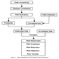
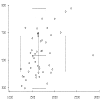
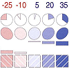
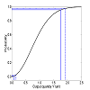
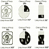
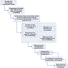
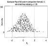
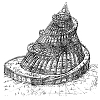
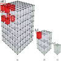
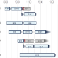

# of Research Papers:
Search: 
How to use filters:
 Show: Interested!
Show: Interested!
 Hide: I'm not interested!
Hide: I'm not interested!
Show: Interested!
Neutral: I don't care.
Hide: I'm not interested!
Publication Details
Contact:
For adding your research paper or article, suggesting corrections and comments
Please contact us:
amit [dot] jena [at] monash [dot] edu
Please contact us:
amit [dot] jena [at] monash [dot] edu
I am a Ph.D. student at:
IITB-Monash Research Academy, Mumbai, India.
IDC School of Design, IIT Bombay, Mumbai, India.
Immersive Analytics Lab, Monash University, Melbourne, Australia.
IDC School of Design, IIT Bombay, Mumbai, India.
Immersive Analytics Lab, Monash University, Melbourne, Australia.
Sponsored by:
Data61, CSIRO, Australia.
Other uncertainty visualization
paper collections:
paper collections:
Uncertainty Vis Library by Kristi Potter.
Survey of Uncertainty Visualization Evaluation by Hullman et al.
Survey of Uncertainty Visualization Evaluation by Hullman et al.
Aerts, Jeroen CJH; Clarke, Keith C & Keuper, Alex D. "Testing popular visualization techniques for representing model uncertainty." Cartography and geographic information science 30.3 (2003): 249-261.
Many land allocation issues, such as land-use planning, require input from extensive spatial databases and involve complex decision-making. Spatial decision support systems (SDSS) are designed to make these issues more transparent and to support the design and evaluation of land allocation alternatives. In this paper we analyze techniques for visualizing uncertainty of an urban growth model called SLEUTH, which is designed to aid decision-makers in the field of urban planning and fits into the computational framework of an SDSS. Two simple visualization techniques for portraying uncertainty-static comparison and toggling-are applied to SLEUTH results and rendered with different background information and color schemes. In order to evaluate the effectiveness of the two visualization techniques, a web-based survey was developed showing the visualizations along with questions about the usefulness of the two techniques. The web survey proved to be quickly accessible and easy to understand by the participants. Participants in the survey were mainly recruited among planners and decision-makers. They acknowledged the usefulness of portraying uncertainty for decision-making purposes. They slightly favored the static comparison technique over toggling. Both visualization techniques were applied to an urban growth case study for the greater Santa Barbara area in California, USA.

Agumya, Aggrey & Hunter, Gary J. "Responding to the consequences of uncertainty in geographical data." International Journal of Geographical Information Science 16.5 (2002): 405-417.
The presence of uncertainty in geographical data has the potential to expose users to undesirable consequences in their decision making. Accordingly, our efforts to understand uncertainty seek to (a) avoid the use of data that are not suitable for their intended purpose (that is, data whose consequences are unacceptable), (b) to reduce any undesirable consequences to an acceptable level, and (c) to devise ways of living with undesirable data when the adverse consequences caused by poor data do not alter our ultimate decision choice. To assist this task, we propose an approach where the adverse consequences of uncertainty caused by the use of unsuitable geographical data are expressed in terms of risk. In this paper we first show that risk management offers geographical data users a range of options for responding to the adverse consequences of data uncertainty, and secondly we present and discuss the various risk response options.
Andre, Anthony D & Cutler, Henry A. "Displaying uncertainty in advanced navigation systems." Proceedings of the Human Factors and Ergonomics Society Annual Meeting. Vol. 42. No. 1. Sage CA: Los Angeles, CA: SAGE Publications, 1998.
Few human factors studies have addressed the issue of displaying the uncertainty of information provided to users; an issue of growing importance given the current proliferation of advanced situation awareness and navigation displays used in the aviation, automotive and maritime environments. This paper first discusses the growing need to develop guidelines concerning when and how to display uncertainty, and then describes the results of two initial studies aimed at both demonstrating the general utility of displaying uncertainty, and determining the optimal ways to visually represent various levels of uncertainty. We conclude that the impact and effectiveness of future multi-sensor situation awareness displays will be dependent on the skillful presentation of data uncertainty.
Arriola, Leon M & Hyman, James M. "Being sensitive to uncertainty" Being sensitive to uncertainty." Computing in Science & Engineering 9.2 (2007): 10.
Predictive modeling's effectiveness is hindered by inherent uncertainties in the input parameters. Sensitivity and uncertainty analysis quantify these uncertainties and identify the relationships between input and output variations, leading to the construction of a more accurate model. This survey introduces the application, implementation, and underlying principles of sensitivity and uncertainty quantification.
Barrowman, Nicholas J & Myers, Ransom A. "Raindrop plots: a new way to display collections of likelihoods and distributions." The American Statistician 57.4 (2003): 268-274.
In a variety of settings, it is desirable to display a collection of likelihoods over a common interval. One approach is simply to superimpose the likelihood curves. However, where there are more than a handful of curves, such displays are extremely difficult to decipher. An alternative is simply to display a point estimate with a confidence interval, corresponding to each likelihood. However, these may be inadequate when the likelihood is not approximately normal, as can occur with small sample sizes or nonlinear models. A second dimension is needed to gauge the relative plausibility of different parameter values. We introduce the raindrop plot, a shaded figure over the range of parameter values having log-likelihood greater than some cutoff, with height varying proportional to the difference between the loglikelihood and the cutoff. In the case of a normal likelihood,this produces a reflected parabola so that deviations from normality can be easily detected. An analogue of the raindrop plot can also be used to display estimated random effect distributions, posterior distributions, and predictive distributions.
Likelihood interval, Log odds ratio, Meta-analysis, Nonlinear model, Nonnormality, Variable-height plot

Basapur, Santosh; Bisantz, Ann M & Kesavadas, T. "The effect of display modality on decision-making with uncertainty." Proceedings of the Human Factors and Ergonomics Society Annual Meeting. Vol. 47. No. 3. Sage CA: Los Angeles, CA: SAGE Publications, 2003.
This research compared visual (color), auditory (tone pitch), and tactile (vibration amplitude) displays of uncertainty in a threat avoidance task. Thirty participants used these displays to navigate through a simulated minefield, selecting paths that would minimize their chance of hitting a mine, while moving through the field as quickly and directly as possible. Results showed the participants in the visual condition to be the most conservative (safer but longer), while those in the auditory condition took the shortest (riskier) path. Interestingly, in terms of trial time, while all participants tended to improve their performance with respect to speed, participants in the tactile condition started out more slowly, but were similar in speed to the fastest, visual condition, by the end of the trials.
Beard, M Kate; Buttenfield, Barbara P & Clapham, Sarah B. "NCGIA Research Initiative 7 Visualization of Spatial Data Quality: Scientific Report for the Specialist Meeting (91-26)." (1991).
This report is a summary of the Specialist meeting for NCGIA Research Initiative 7 entitled \"Visualization of Spatial Data Quality\". It presents initial discussions on the role and utility of visualization for understanding and analyzing information about the quality of GIS data. The impetus for the initiative is based on rapid changes in spatial information system technology and a desire to see the technology used more effectively. Technology currently allows us to process and display large volumes of information very quickly. Effective use of this information for analysis and decision making presupposes that the information is correct or reasonably reliable. Information on the quality of data is essential for effective use of GIS data: it affects the fitness of use of data for a particular application, the credibility of data representation and interpretation, and the evaluation of decision alternatives. The credibility of spatial decision support using GIS may indeed depend on the incorporation of quality information within the database and the display.
Beard, Kate & Mackaness, William. "Visual access to data quality in geographic information systems." Cartographica: The International Journal for Geographic Information and Geovisualization30.2-3 (1993): 37-45.
Visualization encompasses the display of quantities or qualities of visible or invisible phenomena through the combined use of points, lines, a coordinate system, numbers, symbols, words, shading, color, and animation. The objectives of visualization are to provoke insights and expand comprehension of information by revealing complex relationships among data. Geographical information is visualized in the form of maps. Recent concern over the accuracy and reliability of spatial information in geographic information systems has raised an interest in applying visualization tools to comprehend and communicate the reliability of GIS information and products. This paper develops design requirements for visualization of spatial data quality based on characterizations of quality, a range of quality assessment tasks, and different contexts under which data quality might be investigated.
Becker, Richard A & Cleveland, William S. "Brushing scatterplots." Technometrics 29.2 (1987): 127-142.
A dynamic graphical method is one in which a data analyst interacts in real time with a data display on a computer graphics terminal. Using a screen input device such as a mouse, the analyst can specify, in a visual way, points or regions on the display and cause aspects of the display to change nearly instantaneously. Brushing is a collection of dynamic methods for viewing multidimensional data. It is very effective when used on a scatterplot matrix, a rectangular array of all pairwise scatterplots of the variables. Four brushing operations- highlight, shadow highlight, delete, and label-are carried out by moving a mouse-controlled rectangle, called the brush, over one of the scatterplots. The effect of an operation appears simultaneously on all scatterplots. Three paint modes-transient, lasting, and undo-and the ability to change the shape of the brush allow the analyst to specify collections of points on which the operations are carried out. Brushing can be used in various ways or on certain types of data; these usages are called brush techniques and include the following: single-point and cluster linking, conditioning on a single variable, conditioning on two variables, subsetting with categorical variables, and stationarity probing of a time series.
Multidimensional data, Dynamic graphical methods, Scatterplot matrix, Computer graphics

Becketti, Sean & Gould, William. "Rangefinder box plots: A note." The American Statistician 41.2 (1987): 149-149.
This note introduces the rangefinder box plot, an extension of the familiar box plot.
Statistical graph, Empirical distribution, Scatterplot, Scatterplot matrix

Belia, Sarah; Fidler, Fiona; Williams, Jennifer & Cumming, Geoff. "Researchers misunderstand confidence intervals and standard error bars." Psychological methods 10.4 (2005): 389.
Little is known about researchers' understanding of confidence intervals (CIs) and standard error (SE) bars. Authors of journal articles in psychology, behavioral neuroscience, and medicine were invited to visit a Web site where they adjusted a figure until they judged 2 means, with error bars, to be just statistically significantly different (p less than 0.05). Results from 473 respondents suggest that many leading researchers have severe misconceptions about how error bars relate to statistical significance, do not adequately distinguish CIs and SE bars, and do not appreciate the importance of whether the 2 means are independent or come from a repeated measures design. Better guidelines for researchers and less ambiguous graphical conventions are needed before the advantages of CIs for research communication can be realized.
confidence intervals, statistical cognition, standard error, error bars, statistical reform
Beniger, James R & Robyn, Dorothy L. "Quantitative graphics in statistics: A brief history." The American Statistician 32.1 (1978): 1-11.
Quantitative graphics have been central to the development of science, and statistical graphics date from the earliest attempts to analyze data. Many familiar forms, including bivariate plots, statistical maps, bar charts, and coordinate paper, were used in the 18th century. Statistical graphics developed through attention to four problems: spatial organization (17th and 18th centuries), discrete comparison (18th and early 19th centuries), continuous distribution (19th century), and multivariate distribution and correlation (late 19th and early 20th centuries). Today, statistical graphics appear to be reemerging as an important analytic tool, with recent innovations exploiting computer graphics and related technologies.
History of statistics, Statistical graphics, Graphical data analysis, Computer graphics, History of science, Cartography in statistics
Benjamini, Yoav. "Opening the box of a boxplot." The American Statistician 42.4 (1988): 257-262.
Variations of the boxplot are suggested, in which the sides of the box are used to convey information about the density of the values in a batch. The ease of computation by hand of the original boxplot had to be sacrificed, as the variations are computer-intensive. Still, the plots were implemented on a desktop personal computer (Apple Macintosh), in a way designed to keep their ease of computation by computer. The result is a dynamic display of densities and summaries.
Density estimation, Dynamic graphics
Berger, Wolfgang; Piringer, Harald; Filzmoser, Peter & Gr{\"o}ller, Eduard. "Uncertainty‐aware exploration of continuous parameter spaces using multivariate prediction." Computer Graphics Forum. Vol. 30. No. 3. Oxford, UK: Blackwell Publishing Ltd, 2011.
Systems projecting a continuous n-dimensional parameter space to a continuous m-dimensional target space play an important role in science and engineering. If evaluating the system is expensive, however, an analysis is often limited to a small number of sample points. The main contribution of this paper is an interactive approach to enable a continuous analysis of a sampled parameter space with respect to multiple target values. We employ methods from statistical learning to predict results in real-time at any user-defined point and its neighborhood. In particular, we describe techniques to guide the user to potentially interesting parameter regions, and we visualize the inherent uncertainty of predictions in 2D scatterplots and parallel coordinates. An evaluation describes a realworld scenario in the application context of car engine design and reports feedback of domain experts. The results indicate that our approach is suitable to accelerate a local sensitivity analysis of multiple target dimensions, and to determine a sufficient local sampling density for interesting parameter regions.
Bisantz, Ann M; Marsiglio, Stephanie Schinzing & Munch, Jessica. "Displaying uncertainty: Investigating the effects of display format and specificity." Human factors 47.4 (2005): 777-796.
We conducted four studies regarding the representation of probabilistic information. Experiments 1 through 3 compared performance on a simulated stock purchase task, in which information regarding stock profitability was probabilistic. Two variables were manipulated: display format for probabilistic information (blurred and colored icons, linguistic phrases, numeric expressions, and combinations) and specificity level (in which the number and size of discrete steps into which the probabilistic information was mapped differed). Results indicated few performance differences attributable to display format; however, performance did improve with greater specificity. Experiment 4, in which participants generated membership functions corresponding to three display formats, found a high degree of similarity in functions across formats and participants and a strong relationship between the shape of the membership function and the intended meaning of the representation. These results indicate that participants can successfully interpret nonnumeric representations of uncertainty and can use such representations in a manner similar to the way numeric expressions are used in a decision-making task. Actual or potential applications of this research include the use of graphical representations of uncertainty in systems such as command and control and situation displays.
Bisantz, Ann M; Cao, Dapeng; Jenkins, Michael; Pennathur, Priyadarshini R; Farry, Michael; Roth, Emilie; Potter, Scott S & Pfautz, Jonathan. "Comparing uncertainty visualizations for a dynamic decision-making task." Journal of Cognitive Engineering and Decision Making 5.3 (2011): 277-293.
Supporting complex decision making requires conveying relevant information characteristics or qualifiers. The authors tested transparency and numeric annotation for displaying uncertainty about object identity. Participants performed a "missile defense" game in which they decided whether to destroy moving objects (which were either threatening missiles or nonthreatening birds and planes) before they reached a city. Participants were provided with uncertain information about the objects' classifica-tions. Uncertainty was represented through the transparency of icons representing the objects and/or with numeric annotations. Three display methods were created. Icons represented the most likely object classification (with solid icons), the most likely object classification (with icons whose transparency represented the level of uncertainty), or the probability that the icon was a missile (with transparency). In a fourth condition, participants could choose among the representations. Icons either were or were not annotated with numeric probability labels. Task performance was highest when participants could toggle the displays, with little effect of numeric annotation. In conditions in which probabilities were available graphically or numerically, participants chose to engage objects when they were farther from the city and had a lower probability of being a missile. Results provided continued support for the use of graphical uncertainty representations, even when numeric representations are present.
decision making, displays, uncertainty
Blenkinsop, Steve; Fisher, Pete; Bastin, Lucy & Wood, Jo. "Evaluating the perception of uncertainty in alternative visualization strategies." Cartographica: The International Journal for Geographic Information and Geovisualization 37.1 (2000): 1-14.
Although a number of methods have been proposed for representing uncertainty in spatial information, there has been relatively little testing of how users interpret uncertainty from those methods. Using results of a fuzzy classification of satellite imagery, this study looks at users' perceptions of a number of different methods for visualization of uncertainty. Both relatively expert and novice users are highly successful at determining classification uncertainty among pixels when shown in greyscale images and histograms, as well as having moderate success with random animations. Viewers considered that although random animation is a good method of showing overall classification uncertainty, greyscale images are a better way to extract specific information. Serial animation was not widely appreciated. In general, the accuracy of answers to specific questions was greatly improved when linked views and ancillary graphic information were available. All the methods examined in this study, in short, were relatively successful, with the exception of serial animation.
Boller, Ryan A; Braun, Scott A; Miles, Jadrian & Laidlaw, David H. "Application of uncertainty visualization methods to meteorological trajectories." Earth Science Informatics 3.1-2 (2010): 119-126.
We present an application of uncertainty visualization to air parcel trajectories generated from a global meteorological model. We derive an approximation of advection uncertainty due to interpolation and incorporate this uncertainty into our visualization of trajectories. Our work enables efficient visual pruning of unlikely results, especially in regions of atmospheric shear, potentially reducing erroneous interpretations. Finally, we apply these methods to a real- world meteorological problem to demonstrate its use.
Uncertainty visualization, Multi-field visualization, Flow visualization, Time-varying data, Meteorological visualization techniques
Bordoloi, Udeepta D; Kao, David L & Shen, Han-Wei. "Visualization techniques for spatial probability density function data." Data Science Journal 3 (2004): 153-162.
Novel visualization methods are presented for spatial probability density function data. These are spatial datasets, where each pixel is a random variable, and has multiple samples which are the results of experiments on that random variable. We use clustering as a means to reduce the information contained in these datasets; and present two different ways of interpreting and clustering the data. The clustering methods are used on two datasets, and the results are discussed with the help of visualization techniques designed for the spatial probability data.
Spatial data, uncertainty, probability density functions, visualization, clustering
Botchen, Ralf P; Weiskopf, Daniel & Ertl, Thomas. "Texture-based visualization of uncertainty in flow fields." VIS 05. IEEE Visualization, 2005. IEEE, 2005.
In this paper, we present two novel texture-based techniques to visualize uncertainty in time-dependent 2D flow fields. Both methods use semi-Lagrangian texture advection to show flow direction by streaklines and convey uncertainty by blurring these streaklines. The first approach applies a cross advection perpendicular to the flow direction. The second method employs isotropic diffusion that can be implemented by Gaussian filtering. Both methods are derived from a generic filtering process that is incorporated into the traditional texture advection pipeline. Our visualization methods allow for a continuous change of the density of flow representation by adapting the density of particle injection. All methods can be mapped to efficient GPU implementations. Therefore, the user can interactively control all important characteristics of the system like particle density, error influence, or dye injection to create meaningful illustrations of the underlying uncertainty. Even though there are many sources of uncertainties, we focus on uncertainty that occurs during data acquisition. We demonstrate the usefulness of our methods for the example of real-world fluid flow data measured with the particle image velocimetry (PIV) technique. Furthermore, we compare these techniques with an adapted multi-frequency noise approach.
Uncertainty visualization, unsteady flow visualization, texture advection, GPU programming
Botchen, Ralf P; Weiskopf, Daniel & Ertl, Thomas. "Interactive visualization of uncertainty in flow fields using texture-based techniques." 12th Iternational Symposium on Flow Visualisation. 2006.
We describe texture-based flow visualization techniques that bring out the uncertainties in real-world measured flow data or highlight the deviation of scenarios simulated with different numerical techniques. One visualization approach is based on a generic texture-filtering process that improves the perception of uncertainty-affected regions; the other approach focuses on a user-adjusted color coding of uncertainty. Both methods are implemented on graphics hardware and facilitate interactive visualization. The usefulness of these techniques is demonstrated for examples of simulation and PIVdata sets.
Flow Visualization, Uncertainty Visualization, Graphics Hardware
Boukhelifa, Nadia & Duke, David John. "Uncertainty visualization: why might it fail?." CHI'09 Extended Abstracts on Human Factors in Computing Systems. ACM, 2009.
There is a gulf between the rhetoric in visualization about the importance of uncertainty, and the practice of visualization in which uncertainty is rarely seen other than as a laboratory exercise. We reflect on why something viewed as fundamental in science and engineering is rarely if ever adopted in visualization practice. Our analysis is informed both by research progress and by our own experience in an ongoing industrial case study on modelling and mapping underground assets, where it would appear that uncertainty plays a major role. In this case study, we try to identify promoting and limiting factors. We conclude that the value of uncertainty visualization is severely limited by the quality and scope of uncertainty data, by the limited confidence in the data itself, and by the perceptual and cognitive confusion that the depiction of this data can generate. We hope to broaden the discussion on the utility of uncertainty in visualization from the purely technical and perceptual issues to social and organizational factors.
Uncertainty visualization, maps, utility data, service plans
Boukhelifa, Nadia; Bezerianos, Anastasia; Isenberg, Tobias & Fekete, Jean-Daniel. "Evaluating sketchiness as a visual variable for the depiction of qualitative uncertainty." IEEE Transactions on Visualization and Computer Graphics 18.12 (2012): 2769-2778.
We report on results of a series of user studies on the perception of four visual variables that are commonly used in the literature to depict uncertainty. To the best of our knowledge, we provide the first formal evaluation of the use of these variables to facilitate an easier reading of uncertainty in visualizations that rely on line graphical primitives. In addition to blur, dashing and grayscale, we investigate the use of `sketchiness' as a visual variable because it conveys visual impreciseness that may be associated with data quality. Inspired by work in non-photorealistic rendering and by the features of hand-drawn lines, we generate line trajectories that resemble hand-drawn strokes of various levels of proficiency-ranging from child to adult strokes-where the amount of perturbations in the line corresponds to the level of uncertainty in the data. Our results show that sketchiness is a viable alternative for the visualization of uncertainty in lines and is as intuitive as blur; although people subjectively prefer dashing style over blur, grayscale and sketchiness. We discuss advantages and limitations of each technique and conclude with design considerations on how to deploy these visual variables to effectively depict various levels of uncertainty for line marks.
Uncertainty visualization, qualitative evaluation, quantitative evaluation, perception
Brecheisen, Ralph; Vilanova, Anna; Platel, Bram & ter Haar Romeny, Bart. "Parameter sensitivity visualization for DTI fiber tracking." IEEE Transactions on Visualization and Computer Graphics 15.6 (2009): 1441-1448.
Fiber tracking of diffusion tensor imaging (DTI) data offers a unique insight into the three-dimensional organisation of white matter structures in the living brain. However, fiber tracking algorithms require a number of user-defined input parameters that strongly affect the output results. Usually the fiber tracking parameters are set once and are then re-used for several patient datasets. However, the stability of the chosen parameters is not evaluated and a small change in the parameter values can give very different results. The user remains completely unaware of such effects. Furthermore, it is difficult to reproduce output results between different users. We propose a visualization tool that allows the user to visually explore how small variations in parameter values affect the output of fiber tracking. With this knowledge the user cannot only assess the stability of commonly used parameter values but also evaluate in a more reliable way the output results between different patients. Existing tools do not provide such information. A small user evaluation of our tool has been done to show the potential of the technique.
Fiber Tracking, Parameter Sensitivity, Stopping Criteria, Diffusion Tensor Imaging, Uncertainty Visualization
Broad, Kenneth; Leiserowitz, Anthony; Weinkle, Jessica & Steketee, Marissa. "Misinterpretations of the “cone of uncertainty” in Florida during the 2004 hurricane season." Bulletin of the American Meteorological Society 88.5 (2007): 651-668.
This article reviews the evolution, communication, and differing interpretations of the National Hurricane Center's \"cone of uncertainty\" hurricane forecast graphic. It concludes with a discussion of this graphic from the perspective of risk communication theory. The 2004 hurricane season, in which five named storms struck Florida, demonstrated that hurricane forecast graphics, despite admirable attempts by the forecast community to make user-friendly products, are still subject to misinterpretation by many members of the public. This exploratory analysis draws upon interviews with key government officials and media figures, archival research of Florida newspapers, analysis of 962 public comments on the National Hurricane Center's cone of uncertainty graphic, a separate multiagency study of 2004 hurricane behavior, and relevant risk communication literature, to identify several characteristics of this graphic that likely contribute to public misinterpretation. Forecast providers should consider more formal, rigorous pretesting of forecast graphics, using standard social science techniques, in order to minimize the probability of misinterpretation.
Brodlie, Ken; Osorio, Rodolfo Allendes & Lopes, Adriano. "A review of uncertainty in data visualization." Expanding the frontiers of visual analytics and visualization. Springer, London, 2012. 81-109.
Most visualization techniques have been designed on the assumption that the data to be represented are free from uncertainty. Yet this is rarely the case. Recently the visualization community has risen to the challenge of incorporating an indication of uncertainty into visual representations, and in this article we review their work. We place the work in the context of a reference model for data visualization, that sees data pass through a pipeline of processes. This allows us to distinguish the visualization of uncertainty - which considers how we depict uncertainty specified with the data - and the uncertainty of visualization - which considers how much inaccuracy occurs as we process data through the pipeline. It has taken some time for uncertain visualization methods to be developed, and we explore why uncertainty visualization is hard - one explanation is that we typically need to find another display dimension and we may have used these up already! To organise the material we return to a typology developed by one of us in the early days of visualization, and make use of this to present a catalogue of visualization techniques describing the research that has been done to extend each method to handle uncertainty. Finally we note the responsibility on us all to incorporate any known uncertainty into a visualization, so that integrity of the discipline is maintained.
Brown, Ross. "Animated visual vibrations as an uncertainty visualisation technique." Proceedings of the 2nd international conference on Computer graphics and interactive techniques in Australasia and South East Asia. ACM, 2004.
Research into the visualisation of imprecise data is a relatively new field in visualisation. Work is beginning to appear detailing the process of visualising uncertainty in data. Continuing previous work by the author, this paper seeks to extend techniques used to visualise uncertainty from the spatial to the temporal domain, by using visual vibrations to indicate the level of imprecision at a visualised data point. The paper contains an analysis of the present visual features used to indicate imprecision, and then details a methodology for using visual vibrations to display the uncertainty contained in visualised data. Novel additions include addressing chart junk issues outlined by Tufte, additions of perceptual factors and extension to stereo vision applications.
Uncertainty Visualisation, Vibrating Textures, Visual Features, Stereo Vision
B{\"u}rger, Kai; Fraedrich, Roland; Merhof, Dorit & Westermann, R{\"u}diger. "Instant visitation maps for interactive visualization of uncertain particle trajectories." Visualization and Data Analysis 2012. Vol. 8294. International Society for Optics and Photonics, 2012.
Visitation maps are an effective means to analyze the frequency of similar occurrences in large sets of uncertain particle trajectories. A visitation map counts for every cell the number of trajectories passing through this cell, and it can then be used to visualize pathways of a certain visitation percentage. In this paper, we introduce an interactive method for the construction and visualization of high-resolution 3D visitation maps for large numbers of trajectories. To achieve this we employ functionality on recent GPUs to efficiently voxelize particle trajectories into a 3D texture map. In this map we visualize envelopes enclosing particle pathways that are followed by a certain percentage of particles using direct volume rendering techniques. By combining visitation map construction with GPU-based Monte-Carlo particle tracing we can even demonstrate the instant construction of a visitation map from a given vector field. To facilitate the visualization of safety regions around possible trajectories, we further generate Euclidean distance transform volumes to these trajectories on the fly. We demonstrate the application of our approach for visualizing the variation of stream lines in 3D flows due to different numerical integration schemes or errors introduced through data transformation operations, as well as for visualizing envelopes of probabilistic fiber bundles in DTI tractography.
flow envelopes, probabilistic trajectories, comparative visualization, GPUs, multi-core architectures
Buttenfield, Barbara P. "Representing data quality." Cartographica: The International Journal for Geographic Information and Geovisualization 30.2-3 (1993): 1-7.
Information on data quality is important for effective use of GIS data. It impacts the credibility of data representation and the confidence that is attached to data interpretations. It impacts the reliability of interpretations and thus decision making based on GIS modeling and data exploration. A number of impediments to representing data quality can be cited, including impediments to definition and assessment, to attribution in a database, and to graphical depiction. This paper elaborates on impediments to representing data quality. The discussion provides a window through which the complexity of representing data quality may be viewed, and to introduce current research efforts and avenues for further research addressing each impediment. L'information sur la qualité des données est importante pour un usage des données des SIG. Elle a un impact sur la crédibilité de la représentation des données et la confiance que l'on attache à l'interprétation des données. Elle a un impact sur la fiabilité de l'interprétation et par conséquent, sur la prise de décision basée sur la modélisation et l'exploration des données des SIG. On peut citer un certain nombre d'obstacles à la représentation de la qualité des données, dont des obstacles a la définition et l'évaluation, à l'attribution dans une base de données et à la représentation graphique. Dans cet article, on élabore sur les obstacles à la représentation de la qualité des données. La discussion ouvre une fentre par laquelle on peut voir la complexité de représenter la qualité des données et souligne les efforts actuels en recherche ainsi que les avenues de recherche supplémentaire pour traiter chaque obstacle.
Cedilnik, Andrej & Rheingans, Penny. "Procedural annotation of uncertain information." Proceedings Visualization 2000. VIS 2000 (Cat. No. 00CH37145). IEEE, 2000.
In many applications of scientific visualization, a large quantity of data is being processed and displayed in order to enable a viewer to make informed and effective decisions. Since little data is perfect, there is almost always some degree of associated uncertainty. This uncertainty is an important part of the data and should be taken into consideration when interpreting the data. Uncertainty, however, should not overshadow the data values. Many methods that address the problem of visualizing data with uncertainty can distort the data and emphasize areas with uncertain values. We have developed a method for showing the uncertainty information together with data with minimal distraction. This method uses procedurally generated annotations which are deformed according to the uncertainty information. As another possible technique we propose distorting glyphs according to the uncertainty information.
Procedural generation, Uncertainty visualization, Annotation, Glyphs
Chlan, Eleanor Boyle & Rheingans, Penny. "Multivariate glyphs for multi-object clusters." IEEE Symposium on Information Visualization, 2005. INFOVIS 2005.. IEEE, 2005.
Aggregating items can simplify the display of huge quantities of data values at the cost of losing information about the attribute values of the individual items. We propose a distribution glyph, in both two- and three-dimensional forms, which specically addresses the concept of how the aggregated data is distributed over the possible range of values. It is capable of displaying distribution, variability and extent information for up to four attributes at a time of multivariate, clustered data. User studies validate the concept, showing that both glyphs are just as good as raw data and the 3D glyph is better for answering some questions.
information visualization, multivariate visualization, distribution, aggregated data
Choonpradub, Chamnein & McNeil, Don. "Can the box plot be improved." Songklanakarin Journal of Science and Technology 27.3 (2005): 649-657.
Invented by Spear in 1952 and popularized by Tukey in 1977, the box plot is widely used for displaying and comparing samples of continuous observations. Despite its popularity, it is less effective for showing shape behaviour of distributions, particularly bimodality. Using robust estimators of data skewness and kurtosis to classify the distribution into categories, we suggest a simple enhancement for indicating bimodality, central peakedness, and skewness. We also suggest a new graphical method for displaying confidence intervals when comparing several samples of continuous data.
Box plot, Bimodality, Peakedness, Skewness, Kurtosis, Graphing confidence intervals, Multiple comparisons
Cliburn, Daniel C; Feddema, Johannes J; Miller, James R & Slocum, Terry A. "Design and evaluation of a decision support system in a water balance application." Computers & Graphics 26.6 (2002): 931-949.
Visualization has become a vital tool for representing the results of scientific models in decision support applications. Both the raw data and the models from which these visualizations are derived usually have considerable uncertainty associated with them. Decision-makers are typically presented with results from these models with little or no insight as to the reliability of the information shown. For effective decisions to be made, a decision support system should allow collaborative participation from scientists and decision-makers, and it should display the locations, magnitudes, and sources of uncertainty in the results. This research work discusses a software application for visualizing the results of a water balance model and its associated uncertainty. The effectiveness of the application and its visual presentation methods were incrementally tested and improved through usability engineering principles.
Visualization, Uncertainty, Usability engineering, Decision-making
Collins, Christopher; Carpendale, M Sheelagh T & Penn, Gerald. "Visualization of uncertainty in lattices to support decision-making." EuroVis. 2007.
Lattice graphs are used as underlying data structures in many statistical processing systems, including natural language processing. Lattices compactly represent multiple possible outputs and are usually hidden from users. We present a novel visualization intended to reveal the uncertainty and variability inherent in statistically-derived lattice structures. Applications such as machine translation and automated speech recognition typically present users with a best-guess about the appropriate output, with apparent complete confidence. Through case studies we show how our visualization uses a hybrid layout along with varying transparency, colour, and size to reveal the lattice structure, expose the inherent uncertainty in statistical processing, and help users make better-informed decisions about statistically-derived outputs.
lattice, uncertainty, information visualization, machine translation, speech recognition
Coninx, Alexandre; Bonneau, Georges-Pierre; Droulez, Jacques & Thibault, Guillaume. "Visualization of uncertain scalar data fields using color scales and perceptually adapted noise." Proceedings of the ACM SIGGRAPH Symposium on Applied Perception in Graphics and Visualization. ACM, 2011.
We present a new method to visualize uncertain scalar data fields by combining color scale visualization techniques with animated, perceptually adapted Perlin noise. The parameters of the Perlin noise are controlled by the uncertainty information to produce animated patterns showing local data value and quality. In order to precisely control the perception of the noise patterns, we perform a psychophysical evaluation of contrast sensitivity thresholds for a set of Perlin noise stimuli. We validate and extend this evaluation using an existing computational model. This allows us to predict the perception of the uncertainty noise patterns for arbitrary choices of parameters. We demonstrate and discuss the efficiency and the benefits of our method with various settings, color maps and data sets.
lattice, uncertainty, information visualization, machine translation, speech recognition
Correa, Carlos D; Chan, Yu-Hsuan & Ma, Kwan-Liu. "A framework for uncertainty-aware visual analytics." 2009 IEEE Symposium on Visual Analytics Science and Technology. IEEE, 2009.
Visual analytics has become an important tool for gaining insight on large and complex collections of data. Numerous statistical tools and data transformations, such as projections, binning and clustering, have been coupled with visualization to help analysts understand data better and faster. However, data is inherently uncertain, due to error, noise or unreliable sources. When making decisions based on uncertain data, it is important to quantify and present to the analyst both the aggregated uncertainty of the results and the impact of the sources of that uncertainty. In this paper, we present a new framework to support uncertainty in the visual analytics process, through statistic methods such as uncertainty modeling, propagation and aggregation. We show that data transformations, such as regression, principal component analysis and k-means clustering, can be adapted to account for uncertainty. This framework leads to better visualizations that improve the decision-making process and help analysts gain insight on the analytic process itself.
Uncertainty, Data Transformations, Principal Component Analysis, Model Fitting
Couclelis, Helen. "The certainty of uncertainty: GIS and the limits of geographic knowledge." Transactions in GIS 7.2 (2003): 165-175.
Considerable effort has been devoted over the years to fighting uncertainty in geographic information in its different manifestations. Thus far, research on handling inaccuracy, fuzziness, error and related issues has focused for the most part on problems with spatial data and their direct products, typically representations of spatial objects or fields. This paper seeks to broaden the discussion of uncertainty in the geospatial domain by shifting the focus from information to knowledge. It turns out that there is a surprising number of things that we cannot know (or questions we cannot answer) that are not the result of imperfect information. Forms of not knowing are pervasive in domains as diverse as mathematics, logic, physics, and linguistics, and are apparently irreducible. This being the case it may help to explore how these realms of ignorance may affect our efforts. The paper distinguishes three different modes or forms of geospatial knowledge production, and argues that each of them has built-in imperfections, for reasons of logical principle and not just empirical fact. While much can and needs to be done to manage and resolve uncertainties where possible, I argue for accepting that uncertainty is an intrinsic property of complex knowledge and not just a flaw that needs to be excised.
Cox, Jonathan; House, Donald & Lindell, Michael. "Visualizing uncertainty in predicted hurricane tracks." International Journal for Uncertainty Quantification 3.2 (2013).
The error cone is a display produced by the National Hurricane Center in order to present its predictions of the path of a hurricane. While the error cone is one of the primary tools used by officials, and the general public, to make emergency response decisions, the uncertainty underlying this display can be easily misunderstood. This paper explores the design of an alternate display that provides a continually updated set of possible hurricane tracks, whose ensemble distribution closely matches the underlying statistics of a hurricane prediction. We explain the underlying algorithm and data structures, and demonstrate how our displays compare with the error cone. Finally, we review the design and results of a user study that we conducted as a preliminary test of the efficacy of our approach in communicating prediction uncertainty.
hurricane prediction, uncertainty visualization, Markov process, kernel methods
Dasgupta, Aritra; Chen, Min & Kosara, Robert. "Conceptualizing visual uncertainty in parallel coordinates." Computer Graphics Forum. Vol. 31. No. 3pt2. Wiley/Blackwell (10.1111), 2012.
Uncertainty is an intrinsic part of any visual representation in visualization, no matter how precise the input data. Existing research on uncertainty in visualization mainly focuses on depicting data-space uncertainty in a visual form. Uncertainty is thus often seen as a problem to deal with, in the data, and something to be avoided if possible. In this paper, we highlight the need for analyzing visual uncertainty in order to design more effective visual representations. We study various forms of uncertainty in the visual representation of parallel coordinates and propose a taxonomy for categorizing them. By building a taxonomy, we aim to identify different sources of uncertainty in the screen space and relate them to different effects of uncertainty upon the user. We examine the literature on parallel coordinates and apply our taxonomy to categorize various techniques for reducing uncertainty. In addition, we consider uncertainty from a different perspective by identifying cases where increasing certain forms of uncertainty may even be useful, with respect to task, data type and analysis scenario. This work suggests that uncertainty is a feature that can be both useful and problematic in visualization, and it is beneficial to augment an information visualization pipeline with a facility for visual uncertainty analysis.
Davis, Trevor J & Keller, C Peter. "Modelling and visualizing multiple spatial uncertainties." Computers & Geosciences 23.4 (1997): 397-408.
This paper presents the results of research into the modelling and visualization of multiple types of uncertainty - each exhibiting distinct spatial characteristics. Slope stability modelling is utilized as a vehicle to bring together uncertainties in categorical spatial data and continuous spatial data. A variety of static visualization methods are discussed, as well as the implications of using an interactive animated display to explore multiple realizations of a continuous surface. The results indicate that careful definitions of allowable uncertainty, and the implications thereof, are required to calibrate an interactive animation that will be utilized by non-specialists. It is argued that this holds particularly true in the situation of risk management decisions.
Deitrick, Stephanie & Edsall, Robert. "The influence of uncertainty visualization on decision making: An empirical evaluation." Progress in spatial data handling. Springer, Berlin, Heidelberg, 2006. 719-738.
Uncertainty visualization is a research area that integrates visualization with the study of uncertainty. Many techniques have been developed for representing uncertainty, and there have been many participant-based empirical studies evaluating the effectiveness of specific techniques. However, there is little empirical evidence to suggest that uncertainty visualization influences, or results in, different decisions. Through a human-subjects experiment, this research evaluates whether specific uncertainty visualization methods, including texture and value, influence decisions and a users confidence in their decisions. The results of this study indicate that uncertainty visualization may effect decisions, but the degree of influence is affected by how the uncertainty is expressed.
Deitrick, Stephanie A. "Uncertainty visualization and decision making: Does visualizing uncertain information change decisions." Proceedings of the XXIII International Cartographic Conference. 2007.
The importance of quantifying and representing uncertainty in geographic data is well recognized in geography. Many techniques have been developed for representing uncertainty, and there have been many participant-based empirical studies evaluating the effectiveness of specific techniques. Speed and accuracy of response are often typical dependent variables in these empirical studies. However, there is little empirical evidence to suggest that uncertainty visualization influences, or results in, different decisions. Through a human-subjects experiment, this research evaluates whether specific uncertainty visualization methods, including texture and value, influence decisions and a users' confidence in those decisions. The results of this study indicate that uncertainty visualization may effect decisions, but that the degree of influence may be governed by the decision task and not solely by the specific visualization technique used to communicate uncertainty information. The results of this research will support future research into whether the type of decision task should inform the methods for visualizing uncertainty in decision support applications.
Deitrick, Stephanie A. "Evaluating implicit visualization of uncertainty for public policy decision support." (2012).
Decision makers increasingly rely on science to inform public policy decisionmaking. Although this integration of science and policy offers the potential to support more informed decisions, scientific results are often not provided in a manner usable to decision makers. When faced with highly uncertain conditions, such as climate change, communicating science in a usable manner becomes even more important. In decision support settings, visualization of geographic information offers a powerful means to communicate uncertain science to decision makers. However, building believable representations does not provide a complete understanding of the potential consequences of decisions. Developing uncertainty representations to reflect the processes of decision-making under uncertainty offers a means to provide insight into the relationships between decisions, uncertainty, and outcomes (consequences of policy decisions). Yet, visualizations often avoid the explicit inclusion of contextual information, such as explanations of risk and uncertainty. This research makes a distinction between explicit and implicit uncertainty for visualization in decision support. In explicit visualization, uncertainty is conceived of, and evaluated as, unique information, related to, but not the same as, the underlying data. Implicit visualizations embed uncertainty information into the representation, instead of expressing uncertainty as separate or additional data. When reframing uncertainty in this way, the relationship between uncertainty, outcomes and decisions is emphasized over explicit representation frameworks that dissociate the method from the user. This paper presents an implicit method for visualizing the impact of climate change uncertainty on policy outcomes in a water model for a hypothetical metropolitan area. The effectiveness of this method for visualizing the relationship between uncertainty and policy impacts was evaluated through a human subject test. The paper reports on the results of the pilot study and how this method compares to methods for explicitly visualizing uncertainty.
Djurcilov, Suzana & Pang, Alex. "Visualizing sparse gridded data sets." IEEE Computer Graphics and Applications 20.5 (2000): 52-57.
Data sets with large number of missing values pose a common problem because most standard scientific visualization algorithms fail when presented with incomplete cells. In this article we discuss the pros, cons, and pitfalls of the alternatives and present our experience in dealing with gridded data sets with missing or invalid scalar data. In our study we emphasized visualization methods that exploit the clustering pattern in the data. We applied our findings to data acquired from Nexrad (next generation radars) weather radars, which usually have no more than 3 to 4 percent of all possible cell points filled.
Djurcilov, Suzana; Kim, Kwansik; Lermusiaux, Pierre FJ & Pang, Alex. "Volume rendering data with uncertainty information." Data Visualization 2001. Springer, Vienna, 2001. 243-252.
This paper explores two general methods for incorporating volumetric uncertainty information in direct volume rendering. The goal is to produce volume rendered images that depict regions of high (or low) uncertainty in the data. The first method involves incorporating the uncertainty information directly into the volume rendering equation. The second method involves post-processing information of volume rendered images to composite uncertainty information. We present some initial findings on what mappings provide qualitatively satisfactory results and what mappings do not. Results are considered satisfactory if the user can identify regions of high or low uncertainty in the rendered image. We also discuss the advantages and disadvantages of both approaches.

Djurcilov, Suzana; Kim, Kwansik; Lermusiaux, Pierre & Pang, Alex. "Visualizing scalar volumetric data with uncertainty." Computers & Graphics 26.2 (2002): 239-248.
Increasingly, more importance is placed on the uncertainty information of data being displayed. This paper focuses on techniques for visualizing 3D scalar data sets with corresponding uncertainty information at each point which is also represented as a scalar value. In Djurcilov (in: D. Ebert, J.M. Favre, R. Peikert (Eds.), Data Visualization 2001, Springer, Berlin, 2001), we presented two general methods (inline DVR approach and a post-processing approach) for carrying out this task. The first method involves incorporating the uncertainty information directly into the volume rendering equation. The second method involves post-processing information of volume rendered images to composite uncertainty information. Here, we provide further improvements to those techniques primarily by showing the depth cues for the uncertainty, and also better transfer function selections.
Dong, Xiao & Hayes, Caroline C. "Uncertainty visualizations: Helping decision makers become more aware of uncertainty and its implications." Journal of Cognitive Engineering and Decision Making 6.1 (2012): 30-56.
Uncertainty is inherent in all real work contexts; it creates ambiguities that make decision making difficult. To help decision makers manage ambiguity, the authors developed and evaluated a domain-independent decision support system (DSS), the Uncertainty DSS. It is designed to help decision makers recognize situations in which uncertainty creates ambiguity in their choices and to identify information that can help reduce that ambiguity. It does so by providing an uncertainty visualization, which shows when the range of possible values for two or more alternatives overlap, indicating that one cannot identify the best alternative given the current information. To evaluate the Uncertainty DSS, the authors created a pared-down version, the Certainty DSS, which provides no uncertainty visualizations. They recruited 22 engineering designers and asked them compare alternative designs from real, ongoing design projects using no DSS, the Certainty DSS, and the Uncertainty DSS. The authors found that without the visualizations, participants did not distinguish between ambiguous and unambiguous choices. However, the Uncertainty DSS improved participants' ability to recognize ambiguous decision situations. Additionally, it increased the likelihood that participants would form plans to seek clarifying information. These results suggest that a relatively simple visualization can change the way in which designers think about decision choices.
Drecki, Igor. "Visualisation of uncertainty in geographical data." Spatial data quality (2002): 140-159.
Traditionally, hard copy maps were the main source of spatial information for geographical interpretation and analysis. In the past two decades this situation has changed rapidly due to a significant growth in the processing and analysis of digital data. Hard copy maps are now often regarded as no longer of the required standard of accuracy and are being replaced by digital spatial databases, which become the ultimate source of geographical data. However, these databases often contain spatial information of inadequate quality. Error is frequently introduced by data compilation methods and later propagated through various spatial operations. This has an impact on the reliability of spatial databases and creates an urgent need for data quality visualisation.
Drecki, Igor. "Geographical information uncertainty: The concept and representational challenges." Proceedings of the 23rd International Cartographic Conference (CD-Rom). 2007.
Understanding and representing geographical information uncertainty poses a significant challenge in geographical information science (GIScience) research. The concept of information uncertainty is not well defined and has different interpretations across many disciplines of knowledge. Ambiguous terminology used in uncertainty characterisation is one of the impediments to effective representation of information uncertainty. The development of representation tools to assist researchers in understanding and dealing with geographical information uncertainty has been underway for over a decade. However, these efforts lack comprehensiveness in their approach to representing information uncertainty by not considering all known or desirable factors that influence visualisation of information uncertainty for a particular purpose.
This paper examines the nature of geographical information uncertainty by briefly discussing the concept of uncertainty and its relevance in GIScience. The challenge of representing geographical information uncertainty in a comprehensive way is identified and a strategy that involves considering all known or desirable parameters that influence representation of uncertainty for a particular purpose is proposed.
Edwards, Laura D & Nelson, Elisabeth S. "Visualizing data certainty: A case study using graduated circle maps." Cartographic Perspectives38 (2001): 19-36.
Several techniques have been proposed for displaying data certainty on maps, but few have been empirically tested for effectiveness. While it is important to make data certainty information easily accessible, the addition of such data should not unduly increase map complexity. Thus, it becomes important for cartographers to examine the available methods for displaying this aspect of metadata and to test each for its effectiveness. The focus of this study was the display of data certainty information on graduated circle maps. Four types of accuracy indicators were evaluated for their effectiveness in communicating data certainty information. Two were traditional accuracy indicators: reliability diagrams and legend statements. Two were bivariate in form, one using a value-size combination and the other mimicking the idea of focus by varying the line value of the graduated circles to suggest a fading of symbolization for least certain data. The study was designed to assess whether subjects could identify data certainty information on test maps, and evaluate how accurately and confidently they could extract and interpret both thematic and data certainty information. Mean accuracy and confidence rates were compared for maps using different accuracy indicators to evaluate their relative effectiveness. Results suggest that subjects had most difficulty identifying and extracting data certainty information using maps that employed legend statements. They were most successful when data certainty was wedded to thematic data on the map using the bivariate accuracy indicator that mimicked the concept of focus. Identification and extraction of thematic data values were not significantly affected by choice of accuracy indicator.
Ehlschlaeger, Charles R; Shortridge, Ashton M & Goodchild, Michael F. "Visualizing spatial data uncertainty using animation." Computers & Geosciences 23.4 (1997): 387-395.
This paper examines methodologies for dynamically displaying information about uncertainty. Modeling uncertainty in elevation data results in the generation of dozens or hundreds of realizations of the elevation surface. Producing animations of these surfaces is an approach to exploratory data visualization that may assist the researcher in understanding the effect of uncertainty on spatial applications as well as in communicating the results of the research to a wider audience. A nonlinear method for interpolation between the surface realizations is introduced which allows for smooth animation while maintaining the surface characteristics prescribed by the uncertainty model.
Animation, Uncertainty, Spatial data, Digital elevation model, Optimal route, Random fields
Etiene, Tiago; Scheidegger, Carlos; Nonato, Luis Gustavo; Kirby, Robert Mike & Silva, Cl{'a}udio. "Verifiable visualization for isosurface extraction." IEEE Transactions on Visualization and Computer Graphics 15.6 (2009): 1227-1234.
Visual representations of isosurfaces are ubiquitous in the scientific and engineering literature. In this paper, we present techniques to assess the behavior of isosurface extraction codes. Where applicable, these techniques allow us to distinguish whether anomalies in isosurface features can be attributed to the underlying physical process or to artifacts from the extraction process. Such scientific scrutiny is at the heart of verifiable visualization - subjecting visualization algorithms to the same verification process that is used in other components of the scientific pipeline. More concretely, we derive formulas for the expected order of accuracy (or convergence rate) of several isosurface features, and compare them to experimentally observed results in the selected codes. This technique is practical: in two cases, it exposed actual problems in implementations. We provide the reader with the range of responses they can expect to encounter with isosurface techniques, both under ldquonormal operating conditionsrdquo and also under adverse conditions. Armed with this information - the results of the verification process - practitioners can judiciously select the isosurface extraction technique appropriate for their problem of interest, and have confidence in its behavior.
Verification, V&V, Isosurface Extraction, Marching Cubes

Evans, Beverley J. "Dynamic display of spatial data-reliability: Does it benefit the map user?." Computers & Geosciences23.4 (1997): 409-422.
As users of maps we are dependent upon their veracity and by extension the reliability of the data they contain. Several research projects have explored possible methods of visually representing data certainty, a kind of metadata; methods considered include depicting the metadata as a map that is separate from the data map, imbedding the metadata into the data map, and creating an interactive environment allowing simultaneous viewing of both data and metadata. A practical consideration, as we develop methods for graphic depiction of data reliability, is the reaction to and acceptance of proposed methods by the map user. This research studied how maps containing graphically depicted reliability information are used. Potential \"usability\" of the cartographic display of data reliability is explored by the type of map user (novices versus experts, and males versus females) and the type of map use (assessment of map reliability, confidence in data reliability assessments, and ability to judge the proportion of the areas within the map containing highly reliable data). This study addressed these issues by exploring and analyzing subject responses to an interactive cartographic display of data and its level of reliability. The graphic depiction of reliability information was found to be accessible and comprehensible by all subjects; novice or expert, and male or female. Two methods of combining data and reliability information, as a composite static display and as an animation, were both found to be helpful by the subjects tested. Two other methods of obtaining reliability information, a map displaying only reliability information and an interactive "toggling" between the data and reliability information were not found to be as efficient or effective as the combination methods.
Cartography, Dynamic cartography, GIS, Reliability, Visualization
Feng, David; Kwock, Lester; Lee, Yueh & Taylor, Russell M. "Linked exploratory visualizations for uncertain mr spectroscopy data." Visualization and Data Analysis 2010. Vol. 7530. International Society for Optics and Photonics, 2010.
We present a system for visualizing magnetic resonance spectroscopy (MRS) data sets. Using MRS, radiologists generate multiple 3D scalar fields of metabolite concentrations within the brain and compare them to anatomical magnetic resonance imaging. By understanding the relationship between metabolic makeup and anatomical structure, radiologists hope to better diagnose and treat tumors and lesions. Our system consists of three linked visualizations: a spatial glyph-based technique we call Scaled Data-Driven Spheres, a parallel coordinates visualization augmented to incorporate uncertainty in the data, and a slice plane for accurate data value extraction. The parallel coordinates visualization uses specialized brush interactions designed to help users identify nontrivial linear relationships between scalar fields. We describe two novel contributions to parallel coordinates visualizations: linear function brushing and new axis construction. Users have discovered significant relationships among metabolites and anatomy by linking interactions between the three visualizations.
medical visualization, multivariate data, parallel coordinates, glyphs, linked views, uncertainty visualization
Feng, David; Kwock, Lester; Lee, Yueh & Taylor, Russell. "Matching visual saliency to confidence in plots of uncertain data." IEEE Transactions on Visualization and Computer Graphics 16.6 (2010): 980-989.
Conveying data uncertainty in visualizations is crucial for preventing viewers from drawing conclusions based on untrustworthy data points. This paper proposes a methodology for efficiently generating density plots of uncertain multivariate data sets that draws viewers to preattentively identify values of high certainty while not calling attention to uncertain values. We demonstrate how to augment scatter plots and parallel coordinates plots to incorporate statistically modeled uncertainty and show how to integrate them with existing multivariate analysis techniques, including outlier detection and interactive brushing. Computing high quality density plots can be expensive for large data sets, so we also describe a probabilistic plotting technique that summarizes the data without requiring explicit density plot computation. These techniques have been useful for identifying brain tumors in multivariate magnetic resonance spectroscopy data and we describe how to extend them to visualize ensemble data sets.
Uncertainty visualization, brushing, scatter plots, parallel coordinates, multivariate data
Fienberg, Stephen E. "Graphical methods in statistics." The American Statistician 33.4 (1979): 165-178.
Graphical methods have played a central role in the development of statistical theory and practice. This presentation briefly reviews some of the highlights in the historical development of statistical graphics and gives a simple taxonomy that can be used to characterize the current use of graphical methods. This taxonomy is used to describe the evolution of the use of graphics in some major statistical and related scientific journals. Some recent advances in the use of graphical methods for statistical analysis are reviewed, and several graphical methods for the statistical presentation of data are illustrated, including the use of multicolor maps.
Diagnostic plots, Graphical methods, History of statistics, Maps, statistical, Standards for graphics, Statistical graphics
Finger, Richard & Bisantz, Ann M. "Utilizing graphical formats to convey uncertainty in a decision-making task." Theoretical Issues in Ergonomics Science 3.1 (2002): 1-25.
Understanding how to display effectively uncertain information has become increasingly important as decision aids can provide operators with situational estimates and their associated uncertainty. The paper describes two studies in which degraded or blended icons were used to convey uncertainty regarding the identity of a radar contact as hostile or friendly. A classification study first showed that participants could sort, order and rank icons from ®ve sets intended to represent different levels of uncertainty. Three icon sets were selected for further study in an experiment in which participants had to identify the status of contacts as either hostile or friendly. Contacts and probabilistic estimates of their identities were depicted on a simulated radar screen in one of three ways: with degraded icons and probabilities, with non-degraded icons and probabilities and with degraded icons only. Results showed that participants using displays with only degraded icons performed better on some measures and as well on other measures, than the other tested conditions. These results are significant because they indicate both that people can understand uncertainty conveyed through such a manner and thus that the use of distorted or degraded images may be a viable alternative to convey situational uncertainty.
Uncertainty display, Decision-making.
Fisher, P. "Animation and sound for the visualization of uncertain spatial information." Chichester,, UK: Wiley, 1994.
Resource not available!
Fout, Nathaniel & Ma, Kwan-Liu. "Fuzzy volume rendering." IEEE transactions on visualization and computer graphics18.12 (2012): 2335-2344.
In order to assess the reliability of volume rendering, it is necessary to consider the uncertainty associated with the volume data and how it is propagated through the volume rendering algorithm, as well as the contribution to uncertainty from the rendering algorithm itself. In this work, we show how to apply concepts from the field of reliable computing in order to build a framework for management of uncertainty in volume rendering, with the result being a self-validating computational model to compute a posteriori uncertainty bounds. We begin by adopting a coherent, unifying possibility-based representation of uncertainty that is able to capture the various forms of uncertainty that appear in visualization, including variability, imprecision, and fuzziness. Next, we extend the concept of the fuzzy transform in order to derive rules for accumulation and propagation of uncertainty. This representation and propagation of uncertainty together constitute an automated framework for management of uncertainty in visualization, which we then apply to volume rendering. The result, which we call fuzzy volume rendering, is an uncertainty-aware rendering algorithm able to produce more complete depictions of the volume data, thereby allowing more reliable conclusions and informed decisions. Finally, we compare approaches for self-validated computation in volume rendering, demonstrating that our chosen method has the ability to handle complex uncertainty while maintaining efficiency.
Uncertainty visualization, verifiable visualization, volume rendering
Fox, Craig R & Tversky, Amos. "A belief-based account of decision under uncertainty." Management science 44.7 (1998): 879-895.
We develop a belief-based account of decision under uncertainty. This model predicts decisions under uncertainty from (i) judgments of probability, which are assumed to satisfy support theory; and (ii) decisions under risk, which are assumed to satisfy prospect theory. In two experiments, subjects evaluated uncertain prospects and assessed the probability of the respective events. Study 1 involved the 1995 professional basketball playoffs; Study 2 involved the movement of economic indicators in a simulated economy. The results of both studies are consistent with the belief-based account, but violate the partition inequality implied by the classical theory of decision under uncertainty.
Decision Making, Risk, Uncertainty, Expected Utility, Prospect Theory, Support Theory, Decision Weights, Judgment, Probability

Friendly, Michael. "Corrgrams: Exploratory displays for correlation matrices." The American Statistician 56.4 (2002): 316-324.
Correlation and covariance matrices provide the basis for all classical multivariate techniques. Many statistical tools exist for analyzing their structure but, surprisingly, there are few techniques for exploratory visual display, and for depicting the patterns of relations among variables in such matrices directly, particularly when the number of variables is moderately large. This article describes a set of techniques we subsume under the name \"corrgram,\" based on two main schemes: (a) Rendering the value of a correlation to depict its sign and magnitude. We consider some of the properties of several iconic representations, in relation to the kind of task to be performed. (b) Reordering the variables in a correlation matrix so that \"similar\" variables are positioned adjacently, facilitating perception. In addition, the extension of this visualization to matrices for conditional independence and partial independence is described and illustrated, and we provide an easily used SAS implementation of these methods.
Conditional independence, Effect ordering, Independence, Partial correlation, SAS, Value rendering, Variable sorting, Visual thinning, Visualization
Frigge, Michael; Hoaglin, David C & Iglewicz, Boris. "Some implementations of the boxplot." The American Statistician43.1 (1989): 50-54.
An increasing number of statistical software packages offer exploratory data displays and summaries. For one of these, the graphical technique known as the boxplot, a selective survey of popular software packages revealed several definitions. These alternative constructions arise from different choices in computing quartiles and the fences that determine whether an observation is “outside” and thus plotted individually. We examine these alternatives and their consequences, discuss related background for boxplots (such as the probability that a sample contains one or more outside observations and the average proportion of outside observations in a sample), and offer recommendations that lead to a single standard form of the boxplot.
Exploratory data analysis, Outliers, Quartiles, Statistical software
Gahegan, Mark & Ehlers, Manfred. "A framework for the modelling of uncertainty between remote sensing and geographic information systems." ISPRS Journal of Photogrammetry and Remote Sensing 55.3 (2000): 176-188.
This paper addresses the modelling of uncertainty in an integrated geographic information system GIS , specifically focused on the fusion of activities between GIS and remote sensing. As data is abstracted from its ‘raw’ form to the higher representations used by GIS, it passes through a number of different conceptual data models via a series of transformations. Each model and each transformation process contributes to the overall uncertainty present within the data. The issues that this paper addresses are threefold. Firstly, a description of various models of geographic space is given in terms of the inherent uncertainty characteristics that apply; this is then worked into a simple formalism. Secondly, the various transformation processes that are used to form geographic classes or objects from image data are described, and their effects on the uncertainty properties of data are stated. Thirdly, using the formalism to describe the transformation processes, a framework for the propagation of uncertainty through an integrated GIS is derived. By way of a summary, a table describing sources of accumulated uncertainty across four underlying models of geographic space is derived.
uncertainty; GIS integration; data modelling; transformation description
Ge, Yong; Li, Sanping; Lakhan, V. Chris & Lucieer, Arko. "Exploring uncertainty in remotely sensed data with parallel coordinate plots." International Journal of Applied Earth Observation and Geoinformation 11.6 (2009): 413-422.
The existence of uncertainty in classified remotely sensed data necessitates the application of enhanced techniques for identifying and visualizing the various degrees of uncertainty. This paper, therefore, applies the multidimensional graphical data analysis technique of parallel coordinate plots (PCP) to visualize the uncertainty in Landsat Thematic Mapper (TM) data classified by the Maximum Likelihood Classifier (MLC) and Fuzzy C-Means (FCM). The Landsat TM data are from the Yellow River Delta, Shandong Province, China. Image classification with MLC and FCM provides the probability vector and fuzzy membership vector of each pixel. Based on these vectors, the Shannon's entropy (S.E.) of each pixel is calculated. PCPs are then produced for each classification output. The PCP axes denote the posterior probability vector and fuzzy membership vector and two additional axes represent S.E. and the associated degree of uncertainty. The PCPs highlight the distribution of probability values of different land cover types for each pixel, and also reflect the status of pixels with different degrees of uncertainty. Brushing functionality is then added to PCP visualization in order to highlight selected pixels of interest. This not only reduces the visualization uncertainty, but also provides invaluable information on the positional and spectral characteristics of targeted pixels.
Parallel coordinate plots (PCP), Remotely sensed data, Shannon's entropy, Uncertainty Interactive visualization, Brushing
Geneser, Sarah E.; Kirby, Robert M.; & Sachse, Frank B. "Sensitivity Analysis of Cardiac Electrophysiological Models Using Polynomial Chaos." 2005 IEEE Engineering in Medicine and Biology 27th Annual Conference. IEEE, 2006.
Mathematical models of biophysical phenomena have proven useful in the reconstruction of experimental data and prediction of biological behavior. By quantifying the sensitivity of a model to certain parameters, one can place an appropriate amount of emphasis in the accuracy with which those parameters are determined. In addition, investigation of stochastic parameters can lead to a greater understanding of the behavior captured by the model. This can lead to possible model reductions, or point out shortcomings to be addressed. We present polynomial chaos as a computationally efficient alternative to Monte Carlo for assessing the impact of stochastically distributed parameters on the model predictionsof several cardiac electrophysiological models.
polynomial chaos, stochastic processes, sensitivity quantification, biological computational modeling, cardiac electrophysiology
Geneser, Sarah E.; Kirby, Robert M. & MacLeod, Robert S. "Application of stochastic finite element methods to study the sensitivity of ECG forward modeling to organ conductivity." IEEE Transactions on Biomedical Engineering 55.1 (2008): 31-40.
Because numerical simulation parameters may significantly influence the accuracy of the results, evaluating the sensitivity of simulation results to variations in parameters is essential. Although the field of sensitivity analysis is well developed, systematic application of such methods to complex biological models is limited due to the associated high computational costs and the substantial technical challenges for implementation. In the specific case of the forward problem in electrocardiography, the lack of robust, feasible, and comprehensive sensitivity analysis has left many aspects of the problem unresolved and subject to empirical and intuitive evaluation rather than sound, quantitative investigation. In this study, we have developed a systematic, stochastic approach to the analysis of sensitivity of the forward problem of electrocardiography to the parameter of inhomogeneous tissue conductivity. We apply this approach to a two-dimensional, inhomogeneous, geometric model of a slice through the human thorax. We assigned probability density functions for various organ conductivities and applied stochastic finite elements based on the generalized polynomial chaos-stochastic Galerkin (gPC-SG) method to obtain the standard deviation of the resulting stochastic torso potentials. This method utilizes a spectral representation of the stochastic process to obtain numerically accurate stochastic solutions in a fraction of the time required when employing classic Monte Carlo methods. We have shown that a systematic study of sensitivity is not only easily feasible with the gPC-SG approach but can also provide valuable insight into characteristics of the specific simulation.
Electrocardiographic forward problem, polynomial chaos, stochastic finite elements, stochastic Galerkin, stochastic processes, uncertainty quantification.
Gerharz, Lydia E. & Pebesma, Edzer J. "Usability of interactive and non-interactive visualisation of uncertain geospatial information." Geoinformatik 4 (2009): 223-230.
Showing uncertainties of geospatial data in maps in a useful and comprehensible way for skilled and unskilled users is a problem that is still not solved ultimately. To evaluate the usability of some commonly used visualisation techniques with a special focus on interactivity, an explorative study has been conducted with ten interviewees with a geosciences background. Each participant was asked to solve tasks and give personal opinions on three methods applied to the same data set. As an outcome, uncertainty was considered as being helpful for decision making in general. The results also show a clear preference for the simplest method of displaying value and uncertainty in adjacent maps, whereas the more sophisticated Aguila visualisation system was judged as helpful for expert users. Interactivity for the methods was preferred by the majority of the users.
Gerharz, Lydia; Pebesma, Edzer & Hecking, Harald. "Visualizing Uncertainty in Spatio-Temporal Data." Spatial Accuracy 2010 (2010): 169-172.
Visualization methods to show uncertainties in geospatial data are important tools for communication. Methods have been mainly developed for marginal probability distribution functions (pdfs) describing uncertainties independently for each location in space and time. Often uncertainties can be described better by joint pdfs, including the spatio-temporal dependencies of uncertainties. In this paper, methods for visualization of marginal distributions for space-time grids or features were compared to the case where the full joint distribution needs to be considered in order to find typical or rare spatial or spatio-temporal patterns, such as in ensemble weather forecasts. A number of statistical methods to sample representative realizations from a collection of model ensembles based on the spatio-temporal dependencies such as Mahalanobis distance were investigated and compared. We conclude that taking the full joint probability into account by showing a set of selected ensembles besides visualization methods using marginal distributions is helpful to understand the spatio-temporal structure.
uncertainty visualisaiton; ensembles; Mahalanobis distance; similarity selection

Gershon, Nahum D. "Visualization of Fuzzy Data Using Generalized Animation." Proceedings Visualization'92. IEEE, 1992.
In this paper, we present methods for visualization of fuzzy data based on the sensitivity of the human visual system to motion and dynamic changes and the ease with which electronic display devices can change their display. The methods presented include taking an otherwise static image and displaying in an animation loop either its segmented components or a series of blurred versions of the whole image. This approach was applied to sea-surface temperature data and was found to be effective in showing fuzzy details embedded in the data and in drawing the viewer's attention. This approach and methods could play a significant role in the display of browse products for massive data and information systems.
Data visualization, Animation, Computer displays, Visual system, Fuzzy sets, Shape, Computer vision, Motion detection, Drives, Fuzzy systems
Gershon, Nahum. "Visualization of an Imperfect World." IEEE Computer Graphics and Applications 18.4 (1998): 43-45.
Visualized data and information can be inaccurate or even wrong. Moreover, in the synthetic digital world anybody can visualize anything in any shape or form, disregarding how users might perceive or get the information. Worse, as technology develops, it becomes easier to do so. Understanding the data and information and reaching sound decisions require knowing what pieces of information or data are accurate, complete, consistent, and certain, identifying which are not and by how much, and making the presentation accurate. The author discusses the following issues: sources of imperfection in information; representing the degree of imperfection; intuitive visual metaphors and cues for representing imperfection; imperfect presentation; and notions of managing imperfection and visualization.
Data visualization, Bars, Shape, Uncertainty, Taxonomy, Airplanes, Brightness, Animation, Redundancy, Absorption
Goldberg, Kenneth M. & Iglewicz, Boris. "Bivariate Extensions of the Boxplot." Technometrics 34.3 (1992): 307-320.
The boxplot has proven to be a very useful tool for summarizing univariate data. Several options of bivariate boxplot-type constructions are discussed. These include both elliptic and asymmetric plots. An inner region contains 50% of the data, and a fence identifies potential outliers. Such a robust plot shows location, scale, correlation, and a resistant regression line. Alternative constructions are compared in terms of efficiency of the relevant parameters. Additional properties are given and recommendations made. Emphasis is given to the bi-variate biweight M estimator. Several practical examples illustrate that standard least squares ellipsoids can give graphically misleading summa
Ellipsoid, Outlier, Resistant line, Robust estimators
Griethe, Henning & Schumann, Heidrun. "Visualizing Uncertainty for Improved Decision Making." Proceedings of the 4th International Conference on Business Informatics Research BIR 2005. 2005.
Decision making often depends on the analysis and evaluation of large amounts of data for which information visualization proved to be a valuable approach. The recognition of uncertainty in the data is crucial and it should therefore be appropriately represented. However, suitable methods for its visualization are in many cases not available. This paper provides a general view on uncertainty with respect to a widely accepted information model. Out of this view it explains why the recognition of uncertainty plays an important role for decisions, and it depicts available but especially missing visualization concepts today, e.g. for the display of uncertain relationships. To fill that gap new ideas are derived for an improved visual decision support.
Griethe, Henning & Schumann, Heidrun. "The Visualization of Uncertain Data: Methods and Problems." SimVis. 2006.
Visualization is a valuable approach to the exploration and communication of large data sets. In different domains these data sets may contain an unavoidable amount of uncertainty that needs to be included in the visualization process to enable the correct cognition of hidden facts. In recent years many different concepts regarding this uncertainty visualization were developed but the topic is still gaining interest. Within this quick development it is difficult to keep track of what is there and what is missing.
Therefore this paper provides a statement on the position of uncertainty visualization today: It defines the basic concept of uncertainty and discusses sources and necessary measures. It furthermore explains the basic uncertainty visualization process and systematically presents existing approaches to the acquisition and especially to the display of uncertainty that can be transferred to new fields, e.g. the visualization of uncertainty in structures. This leads to the depiction of limits and open questions that partly already are or that are assumed to be the focus of further research in this field.
Grigoryan, Gevorg & Rheingans, Penny. "Probabilistic Surfaces: Point Based Primitives to Show Surface Uncertainty." IEEE Visualization, 2002. VIS 2002.. IEEE, 2002.
Efficient and informative visualization of surfaces with uncertainties is an important topic with many applications in science and engineering. Examples include environmental pollution borderline identification, identification of the limits of an oil basin, or discrimination between contaminated and healthy tissue in medicine. This paper presents an approach for such visualization using points as display primitives. The approach is to render each polygon as a collection of points and to displace each point from the surface in the direction of the surface normal by an amount proportional to some random number multiplied by the uncertainty level at that point. This approach can be used in combination with other techniques such as pseudo-coloring and shading to give rise to efficient and revealing visualizations. The method is used to visualize real and simulated tumor formations with uncertainty of tumor boundaries.
uncertainty, visualizing surface uncertainty, points as display primitives
Grigoryan, Gevorg & Rheingans, Penny. "Point-Based Probabilistic Surfaces to Show Surface Uncertainty." IEEE Transactions on Visualization and Computer Graphics 10.5 (2004): 564-573.
Efficient and informative visualization of surfaces with uncertainties is an important topic with many applications in science and engineering. In these applications, the correct course of action may depend not only on the location of a boundary, but on the precision with which that location is known. Examples include environmental pollution borderline detection, oil basin edge characterization, or discrimination between cancerous and healthy tissue in medicine. This paper presents a method for producing visualizations of surfaces with uncertainties using points as display primitives. Our approach is to render the surface as a collection of points and to displace each point from its original location along the surface normal by an amount proportional to the uncertainty at that point. This approach can be used in combination with other techniques such as pseudocoloring to produce efficient and revealing visualizations. The basic approach is sufficiently flexible to allow natural extensions; we show incorporation of expressive modulation of opacity, change of the stroke primitive, and addition of an underlying polygonal model. The method is used to visualize real and simulated tumor formations with uncertainty of tumor boundaries. The point-based technique is compared to pseudocoloring for a position estimation task in a preliminary user study.
Uncertainty, visualizing surface uncertainty, point-based graphics
Haemer, Kenneth W. "Range-Bar Charts." The American Statistician 2.2 (1948): 23-23.
There are several miiembers of the bar chart family that are extremely effective for specific purposes, yet are seldom used. Among these are simple range-bar charts and variations of this basic type. The range idea is not new: it is widely used in picturing time series data, especially in the formii of the familiar high-low-closing stock price charts. However, for bar comparisons, that is for comparison of a number of items at a given time, it has been generally overlooked.
Haroz, Steve; Ma, Kwan-Liu & Heitmann, Katrin. "Multiple Uncertainties in Time-Variant Cosmological Particle Data." 2008 IEEE Pacific Visualization Symposium. IEEE, 2008.
Though the mediums for visualization are limited, the potential dimensions of a dataset are not. In many areas of scientific study, understanding the correlations between those dimensions and their uncertainties is pivotal to mining useful information from a dataset. Obtaining this insight can necessitate visualizing the many relationships among temporal, spatial, and other dimensionalities of data and its uncertainties. We utilize multiple views for interactive dataset exploration and selection of important features, and we apply those techniques to the unique challenges of cosmological particle datasets. We show how interactivity and incorporation of multiple visualization techniques help overcome the problem of limited visualization dimensions and allow many types of uncertainty to be seen in correlation with other variables.
Visualization applications, cosmology, uncertainty visualization, parallel coordinates
Harrower, Mark. "Representing Uncertainty: Does it Help People Make Better Decisions." UCGIS Workshop: Geospatial Visualization and Knowledge Discovery Workshop. 2003.
If there is one thing that defines and limits our efforts to better understand extreme and rare events it is uncertainty. Uncertainty arises from both an imperfect understanding of the rare events and processes we wish to study (e.g., terrorism, natural hazards), and the imperfect, out-of-date, and incomplete data we must work with in order to try and understand these events and processes. No data are perfect. However, uncertainty is more than a technical "failing" of our data (e.g., measurement error); it arises, in part, because there are simply some things that are unknowable (Couclelis 2003) or, as Fischer (1999) articulates, may not be knowable with precision (i.e., inherent vagueness).1 Nevertheless, outside of academic circles one rarely sees maps, GIS databases, or visualization systems that acknowledge these fundamental limitations. This omission is problematic because, as MacEachren (1992, p.10) notes: In the early stages of scientific analysis or policy formulation, providing a way for analysts to assess uncertainty in the data they are exploring is critical to the perspectives they form and the approaches they decide to pursue. In the last 15 years, researchers in GIScience have made great advances in defining, measuring, modeling, and visualizing uncertainty and data quality (notably, Buttenfield, Clarke, Goodchild, MacEachren, Fischer, Beard, Ehlschlaeger, see references). Indeed, uncertainty has become a central issue in GIScience research with numerous conference sessions and journal articles devoted to the topic. Despite this sustained attention, a basic question that remains largely unanswered is whether displaying uncertainty helps users. In other words, does displaying uncertainty on maps fundamentally change the way people think and problem-solve and ultimately lead to better decisions? In this paper I will (1) argue why we need answers to these questions, (2) briefly review and synthesize relevant research findings to date, (3) define what constitutes "better decisions," and (4) outline how we might proceed from here.
Hengl, Tomislav; Walvoort, Dennis J.J. & Allan, Brown. "Pixel (PM) and Colour Mixture (CM): GIS Techniques for Visualisation of Fuzziness and Uncertainty of Natural Resource Inventories." 5th International Symposium on Spatial Accuracy Assesment in Natural Resources and Environmental Sciences (Accuracy 2002). 2002.
Natural resource inventories are more and more based on quantitative spatial methods. The discrete classes of vegetation, soil, land cover etc. can be quantified by using membership maps rather than only crisp delineations. GIS methods to visually explore fuzziness and uncertainty of the prediction maps are clearly needed. The paper presents two relatively new techniques for visualisation of multiple membership maps and uncertainty of spatial prediction methods: Pixel Mixture (PM) and Colour Mixture (CM). The PM assigns classes to sub-pixels relatively to the membership value, while CM calculates average colour taking the memberships as weights. The PM technique appears to be more simple, "user-friendly" and easier to interpret. The CM technique requires a special fuzzy legend that also reflects taxonomic relations and can be therefore considered a double-continuous approach to mapping. The derived saturation of the map calculated using the CM technique gives us insight into the spatial and taxonomic confusion of our map. Both PM and CM can be both applied to visualize the confusion index or relative error together with the maps of estimates. In this case we used brightness correction and white pixels to include the relative uncertainty and confusion. These techniques will be further on developed to produce operational maps to be used in decision-making.
membership maps, Pixel Mixture, Colour Mixture, natural resources, confusion index
Hengl, Tomislav. "Visualisation of Uncertainty using the HSI Colour Model: Computations with Colours." 7th International Conference on GeoComputation. 2003.
Paper describes two GIS methods for visualisation of uncertainty associated with spatial prediction of continuous and categorical variables. In the case of continuous variables, the key issue is to visualise both predictions and the prediction error at the same time, while in the case of categorical data, the key issue is to visualise multiple memberships and confusion in-between them. Both methods are based on the Hue-Saturation-Intensity (HSI) colour model and calculations with colours using the colour mixture (CM) concept. The HSI is a psychologically appealing colour model - hue is used to visualise values or taxonomic space and whiteness (paleness) is used to visualise the uncertainty. In the case of continuous variables, a two- dimensional legend was designed to accompany the visualisations - vertical axis (hues) is used to visualise the predicted values and horizontal axis (whiteness) is used to visualise the prediction error. In the case of categorical variables, a circular legend is used - perimeter (hues) defines the taxonomic space and radial distance represents the confusion. The methods are illustrated using two examples: (a) interpolation of soil thickness using regression-kriging and (b) fuzzy k-means classification of landforms classes.
Hengl, Tomislav & Toomanian, Norair. "Maps are not what they seem: representing uncertainty in soil-property maps." Proc. Accuracy. 2006.
The paper discusses use of static visualization techniques for representation of uncertainty in spatial prediction models illustrated with examples from soil mapping. The uncertainty of a prediction model, represented with the prediction error, is commonly ignored or only visualized separately from the predictions. Two techniques that can be used to visualize the uncertainty are colour mixing (whitening) and pixel mixing. In both cases, the uncertainty is coded with the white colour and quantitative values are coded with Hues. Additional hybrid static visualization technique (pixel mixing with simulations) that shows both the short-range variation and the overall uncertainty is described. Examples from a case study from Central Iran (4271 km) were used to demonstrate the possible applications and emphasize the importance of visualizing the uncertainty in maps. The soil predictions were made using 118 soil profiles and 16 predictors ranging from terrain parameters to Landsat 7 bands. All variables were mapped using regression-kriging and grid resolution of 100 m. Final maps of texture fractions, EC and organic matter in topsoil were visualized using the whitening, pixel missing and pixel mixing combined with simulations. Visualization of uncertainty allows users to compare success of spatial prediction models for various variables. In this case study, the results showed that there can be quite some differences in the achieved precision of predictions for various variables and that some soil variables need to be collected with much higher inspection density to satisfy the required precision. Visualization of uncertainty also allows users to dynamically improve the precision of predictions by collecting additional samples. Links to scripts that the users can download and use to visualize their datasets are given.
visualization, spatial prediction error, conditional simulations, regression kriging
Hintze, Jerry L., & Nelson, Ray D. "Violin Plots: A Box Plot-Density Trace Synergism." The American Statistician 52.2 (1998): 181-184.
Many modifications build on Tukey's original box plot. A proposed further adaptation, the violin plot, pools the best statistical features of alternative graphical representations of batches of data. It adds the information available from local density estimates to the basic summary statistics inherent in box plots. This marriage of summary statistics and density shape into a single plot provides a useful tool for data analysis and exploration.
Density estimation, Exploratory data analysis, Graphical techniques
Hirschberg, Paul A.; Abrams, Elliot; Bleistein, Andrea; Bua, William; Monache, Luca; Dulong, Thomas; Gaynor, John; Glahn, Bob; Hamill, Thomas; Hansen, James; Hilderbrand, Douglas; Hoffman, Ross; Morrow, Betty; Philips, Brenda; Sokich, John & Stuart, Neil. "A Weather and Climate Enterprise Strategic Implementation Plan for Generating and Communicating Forecast Uncertainty Information." Bulletin of the American Meteorological Society 92.12 (2011): 1651-1666.
The American Meteorological Society (AMS) Weather and Climate Enterprise Strategic Implementation Plan for Generating and Communicating Forecast Uncertainty (the Plan) is summarized. The Plan (available on the AMS website at www.ametsoc.org/boardpges/cwce/docs/BEC/ACUF/2011-02-20-ACUF-Final-Report.pdf) is based on and intended to provide a foundation for implementing recent recommendations regarding forecast uncertainty by the National Research Council (NRC), AMS, and World Meteorological Organization. It defines a vision, strategic goals, roles and respon- sibilities, and an implementation road map to guide the weather and climate enterprise (the Enterprise) toward routinely providing the nation with comprehensive, skillful, reliable, and useful information about the uncertainty of weather, water, and climate (hydrometeorological) forecasts. Examples are provided describing how hydrometeorological forecast uncertainty information can improve decisions and outcomes in various socioeconomic areas. The implementation road map defines objectives and tasks that the four sectors comprising the Enterprise (i.e., government, industry, academia, and nongovernmental organizations) should work on in partnership to meet four key, interrelated strategic goals: 1) understand social and physical science aspects of forecast uncertainty; 2) communicate forecast uncertainty information effectively and collaborate with users to assist them in their decision making; 3) generate forecast uncertainty data, products, services, and information; and 4) enable research, development, and operations with necessary information technology and other infrastructure. The Plan endorses the NRC recommendation that the National Oceanic and Atmospheric Administration and, in particular, the National Weather Service, should take the lead in motivating and organizing Enterprise resources and expertise in order to reach the Plan's vision and goals and shift the nation successfully toward a greater understanding and use of forecast uncertainty in decision making.
Hlawatsch, Marcel; Leube, Philipp; Nowak, Wolfgang & Weiskopf, Daniel. "Flow Radar Glyphs & Static Visualization of Unsteady Flow with Uncertainty." IEEE Transactions on Visualization and Computer Graphics 17.12 (2011): 1949-1958.
A new type of glyph is introduced to visualize unsteady flow with static images, allowing easier analysis of time-dependent phenomena compared to animated visualization. Adopting the visual metaphor of radar displays, this glyph represents flow directions by angles and time by radius in spherical coordinates. Dense seeding of flow radar glyphs on the flow domain naturally lends itself to multi-scale visualization: zoomed-out views show aggregated overviews, zooming-in enables detailed analysis of spatial and temporal characteristics. Uncertainty visualization is supported by extending the glyph to display possible ranges of flow directions. The paper focuses on 2D flow, but includes a discussion of 3D flow as well. Examples from CFD and the field of stochastic hydrogeology show that it is easy to discriminate regions of different spatiotemporal flow behavior and regions of different uncertainty variations in space and time. The examples also demonstrate that parameter studies can be analyzed because the glyph design facilitates comparative visualization. Finally, different variants of interactive GPU-accelerated implementations are discussed.
Visualization, glyph, uncertainty, unsteady flow
Hope, S. & Hunter, G. J. "Testing the Effects of Positional Uncertainty on Spatial Decision-Making." International Journal of Geographical Information Science 21.6 (2007): 645-665.
There is now increasing agreement that the uncertainty associated with spatial information should be represented to users in a manner that is comprehensive and unambiguous. To assist with this task, researchers have developed a variety of methods to portray spatial uncertainty. While there has been some testing of the effectiveness of these displays, the possible effects of such representations on decisionmaking have not yet been thoroughly investigated. Indeed, studies from the psychological literature indicate that people do not always make the same decisions when presented with the same information, and they can also be sensitive to the effects of presentation, task, and context. This paper examines how the use of four different methods to represent positional uncertainty can affect spatial decisionmaking. The authors found that extremely significant differences in participants' responses were exhibited, depending on the manner in which positional uncertainty was displayed, although little difference was observed in the ability of the participants to comprehend the four display methods. In addition, strong preferences were recorded for certain representations over others.
Spatial information, decision-making, positional uncertainty, cognitive testing
Horwitz, William. "The Certainty of Uncertainty." Journal of AOAC International 86.1 (2003): 109-111.
The Horwitz formula will tell you if your anticipated uncertainty is such that you will be within the limits of the ballpark with a typical method. The maximum spread obtained by the top-down approach will encompass the "true value" in almost all practical cases. It is usually easier to let nature slip in all the unanticipatable tricks that can befall even the most careful ana- lysts than to valiantly attempt to foresee them beforehand by the budget ap- proach. This is how the uncertainty of the method becomes entangled with the uncertainty of the measurement.
Howard, David & MacEachren, Alan M. "Interface Design for Geographic Visualization: Tools for Representing Reliability." Cartography and Geographic Information Systems 23.2 (1996): 59-77.
Digital "softcopy" maps are becoming the norm—replacing static paper maps in applications from wayfinding to scientific research. As a result, the design of interface tools that allow users to manipulate map parameters effectively and efficiently is likely to become as fundamental to cartography as the design of maps themselves. This article presents some principles for the design of interfaces to geo-referenced data. These principles are summarized in a hierarchical approach to interface design with conceptual, operational, and implementational levels. This hierarchical approach leads designers from questions about the goals of the system and the users of that system to the creation of tools to accomplish those goals and interface controls that allow effective interaction with the tools. The article goes on to describe the application of these principles to a prototype geographic visualization system designed for exploration of spatial data sets and visualization of reliability of both data and data abstractions associated with environmental change. The prototype involves a synthesis of concepts and methods derived from cartography, scientific visualization, and exploratory data analysis into a system for exploratory spatial data analysis and spatial decision support.
Geographic Visualisation, User Interface, Data Reliability, Interactive Maps
Huang, Shiping. "Exploratory Visualization of Data with Variable Quality." (2005).
Data quality, which refers to correctness, uncertainty, completeness and other aspects of data, has became more and more prevalent and has been addressed across multiple disciplines. Data quality could be introduced and presented in any of the data manipulation processes such as data collection, transformation, and visualization. Data visualization is a process of data mining and analysis using graphical presentation and interpretation. The correctness and completeness of the visualization discoveries to a large extent depend on the quality of the original data. Without the integration of quality information with data presentation, the analysis of data using visualization is incomplete at best and can lead to inaccurate or incorrect conclusions at worst. This thesis addresses the issue of data quality visualization. Incorporating data quality measures into the data displays is challenging in that the display is apt to be cluttered when faced with multiple dimensions and data records. We investigate both the incorporation of data quality information in traditional multivariate data display techniques as well as develop novel visualization and interaction tools that operate in data quality space. We validate our results using several data sets that have variable quality associated with dimensions, records, and data values.
Huff, Israel; Weigle, Chris & Banks, David C. "Ensemble-Space Visualization Improves Perception of 3D State of Molecular Dynamics Simulation." Proceedings of the 5th symposium on Applied perception in graphics and visualization. ACM, 2008.
Large-scale molecular dynamics (GD) simulations are some of the primary applications running on today's supercomputers. These simulations frequently compute the interactions of millions of atoms over millions of time steps, and petascale simulations will target billion atom simulations in the near future. Visualizing the state of such large-scale simulations poses a significant challenge for both data reduction and perception. Standard tools for 3D visualization of MD simulations -- such as direct visualization of the molecules in their simulated physical arrangement -- eventually grow so dense (with more atoms than screen pixels) that only the volumetric shape of the simulation domain is apparent, rather than its detailed content. In this paper, we describe a method for visualizing simulations of a compound in bulk which we refer to as the ensemble display. An ensemble display is produced by superimposing molecular neighborhoods onto fixed reference molecules. This results in a 3D visualization which preserves inter-molecular distances and angles between pairs of molecules while greatly reducing the visual complexity. We performed human-subjects experiments to test the hypothesis that subjects could deduce a bulk physical property of the simulation (temperature) from the ensemble display more accurately than from other common visualizations of GD simulation. Our results show that temperature estimates under the ensemble display had the least error of the tested visualization techniques.
ensemble space, perception, molecular dynamics, bulk properties, radial function, pair correlation, scalable visualization
Interrante, Victoria. "Harnessing Natural Textures for Multivariate Visualization." IEEE Computer Graphics and Applications 6 (2000): 6-11.
In our ongoing quest to convey more information more clearly in a single image, harnessing the full potential of texture for data representation remains an elusive goal. Others have begun excellent work in this area,1-3 and my efforts are inspired by their example. The grail that I seek is a partially ordered multidimensional palette of richly detailed and varying texture patterns that can be used in conjunction with lightness and hue to represent multivariate information. The goal is to facilitate the flexible visual appreciation of the correlations of various quantities across the different dimensions. The approach that I outline here departs a bit from the norm, but is motivated by a desire to proceed more directly from my vision of what I want to achieve, unrestrained by the limitations of the tools I have on hand. In the following discussion, I motivate the adoption of rich, natural textures resembling those from photographic images4 as elemental primitives and sketch some of the approaches that we can take to enhance our understanding of how to effectively harness their properties. My intent here is not to present results, but to expound on the issues and conclude with the questions to which we re still seeking answers.
Visualization, Histograms, Material properties, Visual system, Lighting, Psychology
Jakeman, John; Eldred, Michael & Xiu, Dongbin. "Numerical Approach for Quantification of Epistemic Uncertainty." ournal of Computational Physics 229.12 (2010): 4648-4663.
In the field of uncertainty quantification, uncertainty in the governing equations may assume two forms: aleatory uncertainty and epistemic uncertainty. Aleatory uncertainty can be characterised by known probability distributions whilst epistemic uncertainty arises from a lack of knowledge of probabilistic information. While extensive research efforts have been devoted to the numerical treatment of aleatory uncertainty, little attention has been given to the quantification of epistemic uncertainty. In this paper, we propose a numerical framework for quantification of epistemic uncertainty. The proposed methodology does not require any probabilistic information on uncertain input parameters. The method only necessitates an estimate of the range of the uncertain variables that encapsulates the true range of the input variables with overwhelming probability. To quantify the epistemic uncertainty, we solve an encapsulation problem, which is a solution to the original governing equations defined on the estimated range of the input variables. We discuss solution strategies for solving the encapsulation problem and the sufficient conditions under which the numerical solution can serve as a good estimator for capturing the effects of the epistemic uncertainty. In the case where probability distributions of the epistemic variables become known a posteriori, we can use the information to post-process the solution and evaluate solution statistics. Convergence results are also established for such cases, along with strategies for dealing with mixed aleatory and epistemic uncertainty. Several numerical examples are presented to demonstrate the procedure and properties of the proposed methodology.
Uncertainty quantification, Epistemic uncertainty, Generalized polynomial chaos, Stochastic collocation, Encapsulation problem
Joint Committee for Guides in Metrology. "JCGM 100: Evaluation of Measurement Data - Guide to the Expression of Uncertainty in Measurement." International Organization for Standardization (2008).
Two people measuring the same product with the same ruler on different days would probably get different results. This could be because of factors such as a change in the room temperature (important for a metal ruler) or different eyesight capabilities. The two measurements might be equivalent or not, depending upon their individual uncertainties. This concept of uncertainty is a measure of the quality of a measurement and can be vital in many cases. The JCGM/100 series of documents establishes general rules for evaluating and expressing uncertainty in measurement that can be followed at various levels of accuracy and in many fields - from the shop floor to fundamental research. Therefore, the principles of these Guides are intended to be applicable to a broad spectrum of measurements, including those required for: * maintaining quality control and quality assurance in production; * complying with and enforcing laws and regulations; * conducting basic research, and applied research and development, in science and engineering; * calibrating standards and instruments and performing tests throughout a national measurement system in order to achieve traceability to national standards; * developing, maintaining, and comparing international and national physical reference standards, including reference materials * other metrology-related aspects.

Joint Committee for Guides in Metrology. "JCGM 101–Evaluation of measurement data–Supplement 1 to the ‘Guide to the expression of uncertainty in measurement'– Propagation of distributions using Monte Carlo method (guide 98-3-1)." ISO, Geneva, Switzerland (2008).
This Supplement to the "Guide to the expression of uncertainty in measurement" (GUM) is concerned with the propagation of probability distributions through a mathematical model of measurement [GUM:1995 3.1.6] as a basis for the evaluation of uncertainty of measurement, and its implementation by a Monte Carlo method. The treatment applies to a model having any number of input quantities, and a single output quantity.
Joint Committee for Guides in Metrology. "Evaluation of measurement data ̶ An introduction to the “Guide to the expression of uncertainty in measurement” and related documents." JCGM 104 (2009): 1-104.
A statement of measurement uncertainty is indispensable in judging the fitness for purpose of a measured quantity value. At the greengrocery store the customer would be content if, when buying a kilogram of fruit, the scales gave a value within, say, 2 grams of the fruit's actual weight. However, the dimensions of components of the gyroscopes within the inertial navigation systems of commercial aircraft are checked by measurement to parts in a million for correct functioning. Measurement uncertainty is a general concept associated with any measurement and can be used in professional decision processes as well as judging attributes in many domains, both theoretical and experimental. As the tolerances applied in industrial production become more demanding, the role of measurement uncertainty becomes more important when assessing conformity to these tolerances. Measurement uncertainty plays a central role in quality assessment and quality standards. Measurement is present in almost every human activity, including but not limited to industrial, commercial, scientific, healthcare, safety and environmental. Measurement helps the decision process in all these activities. Measurement uncertainty enables users of a measured quantity value to make comparisons, in the context of conformity assessment, to obtain the probability of making an incorrect decision based on the measurement, and to manage the consequential risks. This document serves as an introduction to measurement uncertainty, the GUM and the related documents indicated in the Foreword. A probabilistic basis for uncertainty evaluation is used. Annex A gives acronyms and initialisms used in this document. In future editions of JCGM 200 (VIM) it is intended to make a clear distinction between the use of the term error as a quantity and as a quantity value. The same statement applies to the term indication. In the current document such a distinction is made. JCGM 200:2008 does not distinguish explicitly between these uses.
Joint Committee for Guides in Metrology. "JCGM 102: Evaluation of Measurement Data - Supplement 2 to the "Guide to the Expression of Uncertainty in Measurement" - Extension to Any Number of Output Quantities." JCGM 102 (2011): 2011.
The "Guide to the expression of uncertainty in measurement" (GUM) [JCGM 100:2008] is mainly concerned with univariate measurement models, namely models having a single scalar output quantity. However, mod- els with more than one output quantity arise across metrology. The GUM includes examples, from electrical metrology, with three output quantities [JCGM 100:2008 H.2], and thermal metrology, with two output quan- tities [JCGM 100:2008 H.3]. This Supplement to the GUM treats multivariate measurement models, namely models with any number of output quantities. Such quantities are generally mutually correlated because they depend on common input quantities. A generalization of the GUM uncertainty framework [JCGM 100:2008 5] is used to provide estimates of the output quantities, the standard uncertainties associated with the estimates, and covariances associated with pairs of estimates. The input or output quantities in the measurement model may be real or complex. Supplement 1 to the GUM [JCGM 101:2008] is concerned with the propagation of probability distributions [JCGM 101:2008 5] through a measurement model as a basis for the evaluation of measurement uncertainty, and its implementation by a Monte Carlo method [JCGM 101:2008 7]. Like the GUM, it is only concerned with models having a single scalar output quantity [JCGM 101:2008 1]. This Supplement describes a generalization of that Monte Carlo method to obtain a discrete representation of the joint probability distribution for the output quantities of a multivariate model. The discrete representation is then used to provide estimates of the output quantities, and standard uncertainties and covariances associated with those estimates. Appropriate use of the Monte Carlo method would be expected to provide valid results when the applicability of the GUM uncertainty framework is questionable, namely when (a) linearization of the model provides an inadequate representation, or (b) the probability distribution for the output quantity (or quantities) departs appreciably from a (multivariate) Gaussian distribution. Guidance is also given on the determination of a coverage region for the output quantities of a multivariate model, the counterpart of a coverage interval for a single scalar output quantity, corresponding to a stipulated coverage probability. The guidance includes the provision of coverage regions that take the form of hyper- ellipsoids and hyper-rectangles. A calculation procedure that uses results provided by the Monte Carlo method is also described for obtaining an approximation to the smallest coverage region.
Bin, Jiang; Ormeling, Ferjan & Kainz, Wolfgang. "Visualization Support for Fuzzy Spatial Analysis." In Proc,. ACSM/ASPRS Conference. 1995.
Visualization techniques benefit fuzzy spatial analysis in at least two aspects. One is in the field of exploratory analysis, and another is in the representation of uncertainty. This paper intends to discuss the first issue. Fuzzy spatial analysis may be distinguished from conventional analysis in that the former is a form of concept analysis which is closer to natural language and the latter in most cases refers to numerical processing. Due to the fuzzy nature of the analysis approach, suitable visualization techniques to support the analysis process are highly needed. In this paper, the fundamentals of fuzzy spatial analysis are outlined and consecutively, the visualization tools supporting the exploration process are focused on. Finally, an approach towards a complete system framework for exploration is presented using some advanced techniques such as the object-oriented system building approach, Graphical User Interfaces (GUI) and hypertext techniques.
fuzzy spatial analysis, visualization support, conventional analysis, advanced technique, exploratory analysis, numerical processing, first issue, fuzzy nature, case refers, analysis approach, hypertext technique, complete system framework, visualization technique, concept analysis, object-oriented system, suitable visualization technique, analysis process, graphical user interface, natural language, exploration process
Jiang, B; Brown, A & Ormeling, FJ. "Some Perceptual Aspects of Colouring Uncertainty." Advances in GIS Research II. London, UK: Taylor & Francis (1996): 477-90.
This paper is intended to provide more insights into intuitive perceptual aspects of colouring uncertainty, based on the perception experiments conducted. In total, five different kinds of colour scales and four bivariate colour schemes were investigated for the representation of uncertainty and data combined with uncertainty respectively. it is concluded that instead of the saturation scale attempted in some previous investigations, a lightness scale starting with white is relatively easily perceived as one of the best solutions. It is shown that a random dot scale, as an alternative to colour scales, provides as intuitively good understanding of uncertainty. it is also shown that bivariate schemes using a random dot scale on both axes, or a random dot scale on one axis and a tint scale on the other, have advantages over spectrally encoded schemes for visualizing data combined with uncertainty, as well as for overlaying of attribute information of different phenomena.
Uncertainty, visualisation, colour variables, perception
Jiang, Bin. "Visualisation of Fuzzy Boundaries of Geographic Objects." Cartography 27.2 (1998): 41-46.
The linguistic notions such as very low, low, not low, low or medium are commonly used to name classes in current geographic information systems (GIS). These sorts of linguistic notions are frequently utilised in the social sciences as well. There is little doubt that the social sciences require a formal and even a mathematical framework for handling graded categories with blurred boundaries. In the past decades, much effort has been made to model the kind of fuzziness (or possibility) from the field of mathematics. Geographers and GIS professionals have started to treat this issue since a decade ago. This short article provides detailed discussions with a case study on how to visualise fuzziness, involving colour surfaces, coloured contour lines and 3D model simulation. The author's argument is that effective visualisation of fuzzy boundaries will facilitate the understanding of geographic objects with indeterminate boundaries.
Johnson, Chris R. & Sanderson, Allen R. "A Next Step: Visualizing Errors and Uncertainty." IEEE Computer Graphics and Applications 23.5 (2003): 6-10.
The development of formal theoretical frameworks and the creation of new visual representations of error and uncertainty will be fundamental to a better understanding of 3D experimental and simulation data. Such improved understanding will validate new theoretical models, enable better understanding of data, and facilitate better decision making. We urge the scientific visualization research community to take the next step and make visually representing errors and uncertainties the norm rather than the exception.
Visualization, Uncertainty, Fluid flow, Computer errors, Interpolation, Bars, Strips, Solid modeling, Geometry, Wind speed
Johnson, Chris R. "Top Scientific Visualization Research Problems." IEEE Computer Graphics and Applications 24.4 (2004): 13-17.
Scientific visualization as currently understood and practiced is still a relatively new discipline. As a result, we visualization researches are not necessarily accustomed to undertaking the sorts of self-examinations that other scientists routinely undergo in relation to their work. Yet if we are to creat a disciplinary culture focused on matters of real scientific importance and committed to real progress, it is essential that we ask ourselves hard questions on an ongoing basis. What are the most important research issues facing us? What underlying assumptions needs to be challenged and perhaps abandoned? What practices need to be reviewed? In this article, I attempt to start a discussion of these issues by proposing a list of top research problems and issues in scientific visualization.
data visualisation
Jones, Derek K. "Determining and Visualizing Uncertainty in Estimates of Fiber Orientation from Diffusion Tensor MRI." Magnetic Resonance in Medicine: An Official Journal of the International Society for Magnetic Resonance in Medicine49.1 (2003): 7-12.
Diffusion tensor MRI (DT-MRI) permits determination of the dominant orientation of structured tissue within an image voxel. This has led to the development of 2D graphical methods for representing fiber orientation and DT-MRI "tractography," which aims to reconstruct the 3D trajectories of white matter fasciculi. Most contemporary fiber orientation mapping schemes and tractography algorithms employ the directional information contained in the eigenvectors of the diffusion tensor to approximate white matter fiber orientation. However, while the uncertainty associated with every estimate of an eigenvector has long been recognized, no attempts to quantify this uncertainty in vivo have been reported. Here, a method is proposed for determining confidence intervals in fiber orientation from real DT-MRI data using the bootstrap method. This is used to construct maps of the "cone of uncertainty," allowing simultaneous viewing of fiber orientation and its uncertainty, and to examine the relationship between orientation uncertainty and tissue anisotropy.
Jospeh, Abigail J,; Lodha, Suresh K.; Renteria, Jose C. & Pang, Alex. "UISURF: Visualizing Uncertainty in Isosurfaces."
Various stages of data processing, including the modeling of scattered volumetric data and the algorithms used to render isosurfaces, can introduce uncertainty or error in the final visualization. Although researchers are aware of the errors that arise during data processing, there still remains no visual framework for evaluating uncertainty in isosurfaces. This paper focuses on the comparison of isosurfaces through UISURF, a visualization system for displaying uncertainty in isosurfaces. UISURF provides visual and statistical information to aid in the evaluation and comparison of isosurfaces and the algorithms used to generate them. Uncertainty is visualized through a series of techniques: overlay, pseudo-coloring, transparency, glyphs, animation, and sonification. Results are presented for comparing isosurfaces generated from different algorithms and those obtained by using different volumetric interpolation models.
Joslyn, Susan; Pak, Karla; Jones, David; Pyles, John & Hunt, Earl. "The Effect of Probabilistic Information on Threshold Forecasts." Weather and Forecasting 22.4 (2007): 804-812.
The study reported here asks whether the use of probabilistic information indicating forecast uncertainty improves the quality of deterministic weather decisions. Participants made realistic wind speed forecasts based on historical information in a controlled laboratory setting. They also decided whether it was appropriate to post an advisory for winds greater than 20 kt (10.29 m s1) during the same time intervals and in the same geographic locations. On half of the forecasts each participant also read a color-coded chart showing the probability of winds greater than 20 kt. Participants had a general tendency to post too many advisories in the low probability situations (0%-10%) and too few advisories in very high probability situations (90%-100%). However, the probability product attenuated these biases. When participants used the probability product, they posted fewer advisories when the probability of high winds was low and they posted more advisories when the probability of high winds was high. The difference was due to the probability product alone because the within-subjects design and counterbalancing of forecast dates ruled out alternative explanations. The data suggest that the probability product improved threshold forecast decisions.
Probability foreasts, Precipitation, Forecast verification, Forecasting techniques

Susan, Joslyn; Nadav-Greenberg, Limor & Nichols, Rebecca M. "Probability of precipitation: Assessment and enhancement of end-user understanding." Bulletin of the American Meteorological Society 90.2 (2009): 185-194.
The results of three psychological studies suggest that many people did not understand probability of precipitation (PoP) despite the fact that participants were college undergraduates in the Pacific Northwest, an area with frequent precipitation forecasts. The misunderstanding concerned the class of events to which the probability refers.
The combined results reported here suggest that some participants thought that the percentage, indicating chance of precipitation, referred instead to the proportion of area or time that precipitation would be observed. More participants chose to take an umbrella or wear a hooded jacket who mistakenly interpreted the forecast as indicating precipitation for more than half of the area or time as compared to those who do not hold this misunderstanding. In addition, performance only improved significantly when PoP was accompanied by a phrase expressing the probability of no precipitation. This suggests a deep-seated misunderstanding that converts the probabilistic forecasts into a deterministic forecast for precipitation with additional information about percent time or area and affects decision making. We conclude that it is important to convey the idea that PoP is a forecast in which it is possible that no precipitation will be observed at all and make suggestions about extending uncertainty forecasts to other parameters.
Joslyn, Susan L. & LeClerc, Jared E. "Uncertainty Forecasts Improve Weather-Related Decisions and Attenuate the Effects of Forecast Error."
Although uncertainty is inherent in weather forecasts, explicit numeric uncertainty estimates are rarely included in public forecasts for fear that they will be misunderstood. Of particular concern are situations in which precautionary action is required at low probabilities, often the case with severe events. At present, a categorical weather warning system is used. The work reported here tested the relative benefits of several forecast formats, comparing decisions made with and without uncertainty forecasts. In three experiments, participants assumed the role of a manager of a road maintenance company in charge of deciding whether to pay to salt the roads and avoid a potential penalty associated with icy conditions. Participants used overnight low temperature forecasts accompanied in some conditions by uncertainty estimates and in others by decision advice comparable to categorical warnings. Results suggested that uncertainty information improved decision quality overall and increased trust in the forecast. Participants with uncertainty forecasts took appropriate precautionary action and withheld unnecessary action more often than did participants using deterministic forecasts. When error in the forecast increased, participants with conventional forecasts were reluctant to act. However, this effect was attenuated by uncertainty forecasts. Providing categorical decision advice alone did not improve decisions. However, combining decision advice with uncertainty estimates resulted in the best performance overall. The results reported here have important implications for the development of forecast formats to increase compliance with severe weather warnings as well as other domains in which one must act in the face of uncertainty.
Visualizing 2D probability distributions from EOS satellite image-derived data sets: a case study." Proceedings of the conference on Visualization'01. IEEE Computer Society, 2001.
Maps of biophysical and geophysical variables using Earth Observing System (EOS) satellite image data are an important component of Earth science. These maps have a single value derived at every grid cell and standard techniques are used to visualize them. Current tools fall short, however, when it is necessary to describe a distribution of values at each grid cell. Distributions may represent a frequency of occurrence over time, frequency of occurrence from multiple runs of an ensemble forecast or possible values from an uncertainty model. We identify these "distribution data sets" and present a case study to visualize such 2D distributions. Distribution data sets are different from multivariate data sets in the sense that the values are for a single variable instead of multiple variables. Data for this case study consists of multiple realizations of percent forest cover, generated using a geostatistical technique that combines ground measurements and satellite imagery to model uncertainty about forest cover. We present two general approaches for analyzing and visualizing such data sets. The first is a pixel-wise analysis of the probability density functions for the 2D image while the second is an analysis of features identified within the image. Such pixel-wise and feature-wise views will give Earth scientists a more complete understanding of distribution data sets. See www.cse.ucsc.edu/research/avis/nasa is for additional information.
uncertainty, probability density function, geostatistics, conditional simulation, data assimilation
Kao, David; Luo, Alison; Dungan, Jennifer, L. & Pang, Alex. "Visualizing Spatially Varying Distribution Data." Proceedings Sixth International Conference on Information Visualisation. IEEE, 2002.
Box plot is a compact representation that encodes the minimum, maximum, mean, median, and quartile information of a distribution. In practice, a single box plot is drawn for each variable of interest. With the advent of more accessible computing power, we are now facing the problem of visualizing data where there is a distribution at each 2D spatial location. Simply extending the box plot technique to distributions over 2D domain is not straightforward. One challenge is reducing the visual clutter if a box plot is drawn over each grid location in the 2D domain. This paper presents and discusses two general approaches, using parametric statistics and shape descriptors, to present 2D distribution data sets. Both approaches provide additional insights compared to the traditional box plot technique.
parametric statistics, shape description, uncertainty representation, probability density function
Kao, David; Love, Alison; Dungan, Jennifer L. & Pang, Alex. "Picturing Data with Uncertainty." (2004).
NASA is in the business of creating maps for scientific purposes to represent important biophysical or geophysical quantities over space and time. For example, maps of surface temperature over the globe tell scientists where and when the Earth is heating up; regional maps of the greenness of vegetation tell scientists where and when plants are photosynthesizing. There is always uncertainty associated with each value in any such map due to various factors. For example, exactly where on Earth’s surface does a given pixel represent? There could also be cloud and atmospheric contamination in the images taken from satellites. When uncertainty is fully modeled, instead of a single value at each map location, there is a distribution expressing a set of possible outcomes at each location. We consider such distribution data as multi-valued data since it consists of a collection of values about a single variable. Thus, a multi-valued data represents both the data and its uncertainty. We have been working on ways to visualize spatial multi-valued data sets effectively for fields with regularly spaced units or grid cells such as those in NASA’s Earth science applications. Successful uncertainty visualization would improve the understanding of climate change, one of the goals in NASA’s mission to understand and protect our home planet.
Kao, David; Kramer, Marc; Luo, Alison; Dungan, Jennifer & pang, Alex. "Visualizing Distributions from Multi-Return Lidar Data to Understand Forest Structure." The Cartographic Journal 42.1 (2005): 35-47.
Spatially distributed probability density functions (pdfs) are becoming more relevant to Earth scientists and ecologists because of stochastic models and new sensors that provide numerous realizations or data points per unit area. One source of these data is from multi-return airborne lidar, a type of laser that records multiple returns for each pulse of light sent towards the ground. Data from multi-return lidar is a vital tool in helping us understand the structure of forest canopies over large extents. This paper presents visualization tools to allow scientists to rapidly explore, interpret and discover characteristic distributions within the entire spatial field. The major contribution of this work is a paradigm shift which allows ecologists to think of and analyse their data in terms of full distributions, not just summary statistics. The tools allow scientists to depart from traditional parametric statistical analyses and to associate multimodal distribution characteristics to forest structures. Information on the modality and shape of distributions, previously ignored, can now be visualized as well. Examples are given using data from High Island, southeast Alaska.
geovisualization, lidar, density estimation, mode finding, probability density functions, interactive visualization
Kindlmann, Gordon; Whitaker, Ross; Tasdizen, Tolga & Moller, Torsten. "Curvature-Based Transfer Functions for Direct Volume Rendering: Methods and Applications." IEEE Visualization, 2003. VIS 2003.. IEEE, 2003.
Direct volume rendering of scalar fields uses a transfer function to map locally measured data properties to opacities and colors. The domain of the transfer function is typically the one-dimensional space of scalar data values. This paper advances the use of curvature information in multi-dimensional transfer functions, with a methodology for computing high-quality curvature measurements. The proposed methodology combines an implicit formulation of curvature with convolution-based reconstruction of the field. We give concrete guidelines for implementing the methodology, and illustrate the importance of choosing accurate filters for computing derivatives with convolution. Curvature-based transfer functions are shown to extend the expressivity and utility of volume rendering through contributions in three different application areas: nonphotorealistic volume rendering, surface smoothing via anisotropic diffusion, and visualization of isosurface uncertainty.
volume rendering, implicit surface curvature, convolution-based differentiation, non-photorealistic rendering, surface processing, uncertainty visualization, flowline curvature
Kirschenbaum, Susan S. & Arruda, James E. "Effects of Graphic and Verbal Probability Information on Command Decision Making." Human Factors 36.3 (1994): 406-418.
The performance effects of graphic and verbal representations of uncertainty were investigated within the context of a spatial problem., Sixteen experienced naval submarine officers acted as decision makers (i.e., submarine commanders) in eight simulated scenarios. Four scenario problems were presented with either a verbal or a graphic representation of uncertainty. The degree of uncertainty was controlled by manipulating oceanic conditions and information modeling. The graphic representation of uncertainty resulted in superior range estimates only when the oceanic noise was high and the environmental information was properly modeled. No reliable differences in confidence were observed. These results suggest that for spatial problems, a graphic/spatial representation of uncertainty may considerably improve the judgments of decision makers.
Kniss, Joe M.; Uitert, Robert Van; Stephens, Abraham; Li, Guo-Shi; Tasdizen, Tolga & Hansen, Charles. "Statistically Quantitative Volume Visualization." VIS 05. IEEE Visualization, 2005.. IEEE, 2005.
Visualization users are increasingly in need of techniques for assessing quantitative uncertainty and error in the images produced. Statistical segmentation algorithms compute these quantitative results, yet volume rendering tools typically produce only qualitative imagery via transfer functionbased classification. This paper presents a visualization technique that allows users to interactively explore the uncertainty, risk, and probabilistic decision of surface boundaries. Our approach makes it possible to directly visualize the combined ”fuzzy” classification results from multiple segmentations by combining these data into a unified probabilistic data space. We represent this unified space, the combination of scalar volumes from numerous segmentations, using a novel graph-based dimensionality reduction scheme. The scheme both dramatically reduces the dataset size and is suitable for efficient, high quality, quantitative visualization. Lastly, we show that the statistical risk arising from overlapping segmentations is a robust measure for visualizing features and assigning optical properties.
volume visualization, uncertainty, classification, risk analysis
Kniss, Joe Michael. "Managing Uncertainty in Visualization and Analysis of Medical Data." 2008 5th IEEE International Symposium on Biomedical Imaging: From Nano to Macro. IEEE, 2008.
The principal goal of visualization is to create a visual representation of complex information and large datasets in order to gain insight and understanding. Our current research focuses on methods for handling uncertainty stemming from data acquisition and algorithmic sources. Most visualization methods, especially those applied to 3D data, implicitly use some form of classification or segmentation to eliminate unimportant regions and illuminate those of interest. The process of classification is inherently uncertain; in many cases the source data contains error and noise, data transformations such as filtering can further introduce and magnify the uncertainty. More advanced classification methods rely on some sort of model or statistical method to determine what is and is not a feature of interest. While these classification methods can model uncertainty or fuzzy probabilistic memberships, they typically only provide discrete, maximum a-posteriori memberships. It is vital that visualization methods provide the user access to uncertainty in classification or image generation if the results of the visualization are to be trusted.
Scientific Visualization, Uncertainty, Sensitivity, Data Processing, Computer Graphics
Kobus, David A.; Proctor, Sherry & Holste, Steven. "Effects of Experience and Uncertainty During Dynamic Decision Making." International Journal of Industrial Ergonomics 28.5 (2001): 275-290.
The decision response times in a dynamic tactical scenario in which participants interacted with a virtual commandpost environment was investigated. Fifty-two Marines with varying amounts of command-post experience assessed the situation as it developed, determined tactical leverage points, formed a plan of action, and submitted battle orders. Two scenarios were studiedFeach differed in the level of certaintyin the information provided. The tactical decision process was modeled and analyzed in the following sequential, cognitive stages: situation assessment, course of action selection, course of action execution. Results show that the time required to assess the situation was significantlylonger ( po0:05), for the high-experience group than the low-experience group. However, once the assessment was complete, the selection of a course of action (COA) was significantlyfaster for the high-experience group than the low-experience group. In addition, COA selection under conditions of low certaintywas significantlylonger than under conditions of high certainty. Time required for COA execution indicated a significant main effect of experience ( po0:05), a main effect of task certaintyapproaching statistical significance ( p ¼ 0:067), and a statisticallysignificant interaction ( po0:05). These results indicate that the time needed to execute the COA, once determined, is significantlyless for the highlyexperienced individuals under conditions of low certainty. However, under the conditions of high certainty, no statistically significant time differences were found based upon the experience level. The high-experience group was significantly more accurate than the low-experience group for developing an appropriate COA.
Uncertainty, Situation awareness, Response selection, Experience, Dynamic task, COA
Korn, Edward L. & Graubard, Barry I. "Scatterplots with Survey Data." The American Statistician 52.1 (1998): 58-69.
We suggest various modifications to make scatterplots more informative when used with data obtained from a sample survey. Aspects of survey data leading to the plot modifications include the sample weights associated with the observations, imputed data for item nonresponse, and large sample sizes. Examples are given using data from the 1988 National Maternal Infant and Health Survey, the second National Health and Nutrition Examination Survey, and the epidemiologic follow-up of the first National Health and Nutrition Examination Survey.
Added variable plot, Conditional percentile, Graphical methods, Imputation, Influential points, Kernel smoothing, Nonparametric regression, Partial residual plot, Sample weights, Survey methods
Kunz, Melanie & Hurni, Lorenz. "Hazard Maps in Switzerland." Mountain Mapping and Visualisation (2008): 133.
The visualisation o funcertainty is a relevant issue whenever saptial data is concerned. Since the implementation of hazard maps can bear huge consequences for property owners and municipalities the data quality is very important and it would be interesting to know how (if at all) the visualisation of uncertainty alters the process of decision making. However, suitable methods for the assessment and presentation of those uncertaintyies will have to be found.
Kyriakidis, Phaedon C. "Towards a Systems Approach to the Visualization of Spatial Uncertainty." UCGIS Workshop: Geospatial Visualization and Knowledge Discovery Workshop. 2003.
Most existing approaches for spatial uncertainty visualization are concerned with the depiction of local or per-pixel uncertainty measures, such as standard errors of attribute prediction in a spatial interpolation setting or posterior probabilities of class occurrence in a classification setting. Most vision operations, however, are pattern-detection endeavors, which are by definition multi-pixel in nature. Consequently, per-pixel uncertainty measures cannot adequately characterize uncertainty in the outcomes of vision operations applied on maps. To overcome the above limitations, a formal quantitative framework for the visualization of spatial uncertainty is advocated, building on an analogy from engineering systems. A system is a model of some aspect or process of the real world, often approximated by a set of mathematical equations, which is excited by a set of inputs to produce a set of outputs or model predictions. In a similar fashion, a map user can be viewed as a system: his or her visual perception and cognition are extremely complex operations that via map analyses lead to decisions and actions. In analogy with engineering systems, quantification of the impact of an uncertain input map on vision-related tasks requires that these tasks be applied to a set of alternative input maps, all of which are processed by the user to arrive at a set of possible analysis results. The proposed framework can thus be seen as a two-step data mining endeavor: (i) exploration of the attribute uncertainty model via stochastic simulation by generating alternative, synthetic, attribute realizations, and (ii) exploration the outputs of early-vision operations applied on this set of realizations in meaningful ways that enable the user to distill the uncertainty in these outputs.
spatial uncertainty assessment, geostatistical simulation, early-vision operations, image segmentation

Lapinski, Anna-Liesa S. "A Strategy for Uncertainty Visualization Design." No. DRDC-ATLANTIC-TM-2009-151. Defence Research and Development Atlantic Dartmouth (Canada), 2009.
Visualizing uncertainty is a challenging endeavour. Perhaps this is because uncertainty is always calculated or recorded with respect to other primary data. In a sense, uncertainty is more like metadata to primary data. Thus, the act of visualizing the uncertainty has to be supported by an understanding of both the uncertainty itself and the primary data. The primary data and how these data are currently being used act as two constraints on the visualization solution. It is challenging to develop innovative methods to visualize uncertainty given these innate constraints; however, many have begun to foray into this research area.

Lee, J. Jack & Tu, Z. Nora. "A Versatile One-Dimensional Distribution Plot: The BLiP Plot." The American Statistician 51.4 (1997): 353-358.
A versatile graphical tool, the BLiP plot, was developed for displaying one-dimensional data. The basic building blocks are boxes, lines, and points. Like many standard one-dimensional distribution plots, the BLiP plot is capable of displaying individual data values in points or lines and grouped information in lines or boxes. In addition, the BLiP plot includes many new features such as variablewidth plots and several choices of point patterns. The main advantage of the BLiP plot is that it provides users with basic graphical elements in a friendly and flexible environment so that users can, according to their needs, construct anything from a simple, standard plot to a complex, customized plot to best present their data.
Boxplot, Histogram, One-dimensional, scatterplot, Summary statistics, Variable-width plots
Lee, Bongshin; Robertson, George G; Czerwinski, Mary & Parr, Cynthia Sims. "CandidTree: visualizing structural uncertainty in similar hierarchies." Information Visualization 6.3 (2007): 233-246.
Most visualization systems fail to convey uncertainty within data. To provide a way to show uncertainty in similar hierarchies, we interpreted the differences between two tree structures as uncertainty. We developed a new interactive visualization system called CandidTree that merges two trees into one and visualizes two types of structural uncertainty: location and sub-tree structure uncertainty. We conducted a usability study to identify major usability issues and evaluate how our system works. Another qualitative user study was conducted to see if biologists, who regularly work with hierarchically organized names, are able to use CandidTree to complete tree-comparison tasks. We also assessed the “uncertainty” metric we used.
Uncertainty visualization, Structural uncertainty, Tree comparison, Graphical user interfaces
Leitner, Michael & Buttenfield, Barbara P. "Guidelines for the Display of Attribute Certainty." Cartography and Geographic Information Science 27.1 (2000): 3-14.
This research investigates how the inclusion of attribute certainty in map displays influences GIS modeling and spatial decision support. The goal is to establish empirical evidence documenting graphical guidelines that can be incorporated as GIS system defaults for mapping attribute certainty. Value, texture, and saturation appear as visual variables associated with the depiction of attribute certainty. These three variables, in addition to the level of map detail, are explored in this research. A hypermedia document has been developed to simulate decision makers' use of certainty information for two locational siting tasks: the siting of a park and the siting of an airport. The experiment has been designed to observe the correctness, time, and confidence of both siting decisions. The experiment further determines how variations in symbolizing attribute certainty (by value, saturation, or texture) affect the three variables of correctness, time, and confidence. A third goal focuses on whether the difficulty of the task affects the decision. On a theoretical level, this research uncovers new information about assimilating data quality information into spatial decision support. On a practical level, it establishes symbolization schemes for representing attribute certainty on thematic maps. These should be incorporated as GIS graphical defaults in anticipation of digital data sets that include data quality information. This research is a continuation of a long-standing tradition of empirical research in map design as a paradigm for eliciting and formalizing cartographic knowledge.
Li, Hongwei; Fu, Chi-Wing; Li, Yinggang & Hanson, Andrew J. "Visualizing Large-Scale Uncertainty in Astrophysical Data." IEEE transactions on visualization and computer graphics 13.6 (2007): 1640-1647.
Visualization of uncertainty or error in astrophysical data is seldom available in simulations of astronomical phenomena, and yet almost all rendered attributes possess some degree of uncertainty due to observational error. Uncertainties associated with spatial location typically vary significantly with scale and thus introduce further complexity in the interpretation of a given visualization. This paper introduces effective techniques for visualizing uncertainty in large-scale virtual astrophysical environments. Building upon our previous transparently scalable visualization architecture, we develop tools that enhance the perception and comprehension of uncertainty across wide scale ranges. Our methods include a unified color-coding scheme for representing log-scale distances and percentage errors, an ellipsoid model to represent positional uncertainty, an ellipsoid envelope model to expose trajectory uncertainty, and a magic-glass design supporting the selection of ranges of log-scale distance and uncertainty parameters, as well as an overview mode and a scalable WIM tool for exposing the magnitudes of spatial context and uncertainty.
Uncertainty visualization, large spatial scale, interstellar data, astronomy
Lipshitz, Raanan *#x0026; Strauss, Orna. "Coping with Uncertainty: A Naturalistic Decision-Making Analysis." Organizational behavior and human decision processes 69.2 (1997): 149-163.
This paper is concerned with three questions: How do decision makers conceptualize uncertainty? How do decision makers cope with uncertainty? Are there systematic relationships between different conceptualizations of uncertainty and different methods of coping? To answer these questions we analyzed 102 self-reports of decision-making under uncertainty with an inclusive method of classifying conceptualizations of uncertainty and coping mechanisms developed from the decision-making literature. The results showed that decision makers distinguished among three types of uncertainty: inadequate understanding, incomplete information, and undifferentiated alternatives. To these they applied five strategies of coping: reducing uncertainty, assumption-based reasoning, weighing pros and cons of competing alternatives, suppressing uncertainty, and forestalling. Inadequate understanding was primarily managed by reduction, incomplete information was primarily managed by assumption-based reasoning, and conflict among alternatives was primarily managed by weighing pros and cons. Based on these results and findings from previous studies of naturalistic decision-making we hypothesized a R.A.W.F.S. (Reduction, Assumption-based reasoning, Weighing pros and cons, Suppression, and Hedging) heuristic, which describes the strategies that decision makers apply to different types of uncertainty in naturalistic settings.
Lodha, Suresh K.; Wilson, Catherine M. & Sheehan, Robert E. "LISTEN: sounding uncertainty visualization." Proceedings of Seventh Annual IEEE Visualization'96. IEEE, 1996.
Integrated presentation of data with uncertainty is a worthy goal in scientific visualization. It allows researchers to make informed decisions based on imperfect data. It also allows users to visually compare and contrast different algorithms for performing the same task or different models for representing the same physical phenomenon. This work presents LISTEN – a data sonification system – that has been incorporated into two visualization systems: a system for visualizing geometric uncertainty of surface interpolants and a system for visualizing uncertainty in fluid flow. LISTEN is written in C++ for the SGI platform. It works with the SGI internal audio chip or a MIDI device or both. LISTEN is an object-oriented system that is modular, flexible, adaptable, portable, interactive and extensible. We demonstrate that sonification is very effective as an additional tool in visualizing geometric and fluid flow uncertaint.
flow, geometry, interactive, interpolation, MIDI, modular, portable, sonification, uncertainty, visualizatio
Lodha, Suresh K.; Pang, Alex; Sheehan, Robert E. & Wittenbrink, Craig M. "UFLOW: visualizing uncertainty in fluid flow." Proceedings of Seventh Annual IEEE Visualization'96. IEEE, 1996.
Uncertainty or errors are introduced in fluid flow data as the data is acquired, transformed and rendered. Although researchers are aware of these uncertainties, little has been done to incorporate them in the existing visualization systems for fluid flow. In the absence of integrated presentation of data and its associated uncertainty, the analysis of the visualization is incomplete at best and may lead to inaccurate or incorrect conclusions. This work presents UFLOW – a system for visualizing uncertainty in fluid flow. Although there are several sources of uncertainties in fluid flow data, in this work, we focus on uncertainty arising from the use of different numerical algorithms for computing particle traces in a fluid flow. The techniques that we have employed to visualize uncertainty in fluid flow include uncertainty glyphs, flow envelopes, animations, priority sequences, twirling batons of trace viewpoints, and rakes. These techniques are effective in making the users aware of the effects of different integration methods and their sensitivity especially near critical points in the flow field.
flow visualization, uncertainty glyphs, streamlines, rakes, flow envelopes, animatio
Lodha, Suresh; Sheehan, Bob; Pang, Alex & Wittenbrink, Craig. "Visualizing geometric uncertainty of surface interpolants." Graphics Interface. Vol. 96. 1996.
Evaluating and comparing the quality of surface interpolants is an important problem in computer graphics, computer aided geometric design and scienti
c visualization. We introduce geometric uncertainty as a measure of interpolation error, level of con
dence or quality of an interpolant. Geometric uncertainty can be estimated as a scalar or a vectorvalued function that depends upon geometric characteristics of interpolants associated with the underlying data. These characteristics include position, normals, isophotes, principal curvatures and directions, mean and Gaussian curvatures. We present several new techniques for visualizing geometric uncertainty of surface interpolants, that combine the strengths of traditional techniques such as pseudo-coloring, di
erencing, overlay, and transparency with new glyph and texture-based techniques. The viewer can control an interactive query-driven toolbox to create a wide variety of graphics that allow probing of geometric information in useful and convenient ways. We demonstrate the effectiveness of these techniques by visualizing geometric uncertainty of surfaces obtained by different interpolation techniques { bilinear, C0 linear, C2 bicubic B-spline, multiquadrics, inverse multiquadrics and thin plate splines.
comparison, geometry, glyphs, interactive, interpolation, probes, surfaces, uncertainty, visualization

Lodha, Suresh K.; Faaland, Nikolai M. & Charaniya, Amin P. "Visualization of uncertain particle movement." Proceedings of the Computer Graphics and Imaging Conference. 2002.
This paper addresses the computation and visualization of the uncertainty associated with the positions of moving particles, using temporal projections based on uncertain knowledge of previous particle position and velocity. First, we present an algorithm for computing the probability distribution describing the position of a particle moving in 2D or 3D space, given the probability distributions that separately characterize the initial position, speed, and direction of the particle. The initial distributions are arbitrary, but the special case of Gaussian distributions is considered in greater detail. We also discuss the algorithmic complexity of the algorithm, and ways to improve its performance. Three visualization techniques (galaxy, transparency, and pseudo-color) are developed to represent the resulting probability distribution associated with the particle at a later time. An appropriate time-dependent sampling approach is adopted to make the visualizations more comprehensible to the human viewer. Experiments with different distributions indicate that the resulting visualizations often take the form of recognizable real-world shapes, assisting the user in understanding the nature of a particle’s movement.
Lopes, Adriano & Brodlie, Ken. "Accuracy in 3D Particle Tracing." Mathematical Visualization. Springer, Berlin, Heidelberg, 1998. 329-341.
This paper presents a novel way of identifying and illustrating the accuracy in the particle tracing method for ow visualization. We make use of explicit Runge-Kutta methods for particle tracing in steady velocity
elds, and describe three approaches to estimate the accuracy of the calculated path. These approaches are: re-integration (with smaller tolerance or in a backward direction), global error estimators and residuals in the velocity
eld. Visualization paradigms are also presented to convey data accuracy information and these ideas are implemented in an Open Inventor / IRIS Explorer environment.
Particle Trace, Global Error, Accuracy Information, Dataflow Model, Main Trace
Love, Alison; Pang, Alex Pang & Kao, David. "Visualizing Spatial Multivalue Data." IEEE Computer Graphics and Applications 25.3 (2005): 69-79.
We introduce multivalue data as a new data type in the context of scientific visualization. While this data type has existed in other fields, the visualization community has largely ignored it. Formally, a multivalue datum is a collection of values about a single variable. Multivalue data sets can be defined for multiple dimensions. A spatial multivalue data set consists of a multivalue datum at each physical location in the domain. The time dimension is equally valid. This leads to spatio-temporal multivalue data sets where there is time varying, multidimensional data with a multivalue datum at each location and time. The spatial multivalue data type captures multiple instances of the same variable at each location in space. Visualizing spatial multivalue data sets is a new challenge.
uncertainty, distributions, realizations, ensemble forecast, parametric statistics, shape descriptors
Lowell, Kim E. "Outside-in, Inside-out: Two Methods of Generating Spatial Certainty Maps." Proceedings of GeoComputation ‘97 and SIRC, University of Otago, New Zealand (1997): 26-29.
Problems with standard Boolean maps produced through subjective interpretation of a phenomenon (i.e., forest or soils maps) are discussed and two alternatives based on spatial certainty are presented and discussed. One requires multiple interpretations of the phenomenon in order to construct a library of spatial uncertainties; such an Uncertainty Library can be used subsequently to estimate error across cartographic boundaries. The other requires interpreters/cartographers to identify only those map elements which are “100% certain.” A spatial interpolation algorithm is subsequently applied to this information to “fill in the gaps” with certainty information for each map type. Both methods have advantages and disadvantages relative to standard Boolean maps and also to each other. These are discussed in general terms and also through the presentation of specific examples. It is concluded that though uncertainty-based cartographic representations provide more flexibility than do conventional Boolean maps, the construction of the former is not without its problems either.
Lowell, K.; Christy, B.; Benke, K. & Day, G. "Modelling Fundamentals and the Quantification and Spatial Presentation of Uncertainty." Journal of Spatial Science 56.2 (2011): 185-201.
The fundamental nature of two different types of models was examined relative to how spatial uncertainty can be quantified and represented for communication to users of model outputs. One model was a complex systems-based landscape model driven by hydrological dynamics whose calibration is an iterative semi-objective process. The other is a cropspecific landscape suitability model that is calibrated using expert knowledge. How fundamental model differences impact the type of uncertainty information that can be produced is discussed as are difficulties in producing such information. Finally, commonalities between the two approaches relative to uncertainty are discussed.
uncertainty, spatial presentation, land use suitability, hydrological modelling
Lucieer, Arko. "Uncertainties in Segmentation and their Visualisation." Diss. Utrecht University and International Institute for Geo-Information Science and Earth Observation (ITC), 2004.
This thesis focuses on uncertainties in remotely sensed image segmentation and their visualisation. The first part aims to develop and implement a visual exploration tool to interact with a fuzzy classification algorithm. The proposed tool uses dynamically linked views, consisting of an image display, a parallel coordinate plot, a 3D feature space plot, and a classified map with an uncertainty map. It allows interaction with the parameters of a fuzzy classification algorithm by visually adjusting fuzzy membership functions of classes. Its purpose is to improve insight into fuzzy classification of remotely sensed imagery and related uncertainty. The visual fuzzy classification technique is tested on a Landsat 7 ETM+ image of an area in Southern France characterised by land cover objects with indeterminate boundaries. The visual classifier gives an overall classification accuracy of 88%, outperforming traditional fuzzy classifiers. Additionally, a focus group user test of the tool provides qualitative feedback and shows that insight into a fuzzy classification algorithm and uncertainty improves considerably.
Lucieer, Arko. "Visualization for Exploration of Uncertainty Related to Fuzzy Classification." 2006 IEEE International Symposium on Geoscience and Remote Sensing. IEEE, 2006.
This study presents a new visualization tool for exploration of the results of a supervised fuzzy classification. 3D isosurfaces are introduced to visualize the shape and extent of class clusters in a 3D feature space plot. These isosurfaces are linked to an image display showing the spatial extent of classes. The dynamical link between feature space, image space, and user interaction with an uncertainty threshold allows for interactive exploration of the spatial and thematic aspects of uncertainty related to a fuzzy classification. The visualization tool is illustrated with a fuzzy classification of a Quickbird image of sub-Antarctic Macquarie Island.
data visualisation, fuzzy logic, geophysics computing, image classification
Lundström, Claes; Ljung, Patric; Persson, Anders & Ynnerman, Anders. "Uncertainty Visualization in Medical Volume Rendering Using Probabilistic Animation." IEEE transactions on visualization and computer graphics 13.6 (2007): 1648-1655.
Direct volume rendering has proved to be an effective visualization method for medical data sets and has reached wide-spread clinical use. The diagnostic exploration, in essence, corresponds to a tissue classification task, which is often complex and time-consuming. Moreover, a major problem is the lack of information on the uncertainty of the classification, which can have dramatic consequences for the diagnosis. In this paper this problem is addressed by proposing animation methods to convey uncertainty in the rendering. The foundation is a probabilistic Transfer Function model which allows for direct user interaction with the classification. The rendering is animated by sampling the probability domain over time, which results in varying appearance for uncertain regions. A particularly promising application of this technique is a "sensitivity lens" applied to focus regions in the data set. The methods have been evaluated by radiologists in a study simulating the clinical task of stenosis assessment, in which the animation technique is shown to outperform traditional rendering in terms of assessment accuracy.
Uncertainty, probability, medical visualization, volume rendering, transfer function
Luo, Alison; Kao, David & Pang, Alex. "Visualizing Spatial Distribution Data Sets." VisSym. Vol. 3. 2003.
In this paper, we define distributions as a new data type and address the challenges of visualizing spatial distribution data sets. Numerous visualization techniques exist today for dealing with scalar data. That is, there is a scalar value at each spatial location, which may also be changing over time. Likewise, techniques exist for dealing with vector, tensor and multivariate data sets. However, there is currently no systematic way of dealing with distribution data where there is a collection of values for the same variable at every location and time. Distribution data is increasingly becoming more common as computers and sensor technologies continue to improve. They have also been used in a number of fields ranging from agriculture, engineering design and manufacturing to weather forecasting. Rather than developing specialized visualization techniques for dealing with distribution data, the approach presented in this paper is to find a systematic way of extending existing visualization methods to handle this new data type. For example, we would like to be able to generate isosurfaces of 3D scalar distribution data sets, or generate streamlines of vector distribution data sets. In order to accomplish this goal, we propose the use of a set of mathematically and procedurally defined operators that allow us to work directly on distributions.
MacEachren, Alan M. "Visualizing Uncertain Information." Cartographic Perspectives 13 (1992): 10-19.
When a GIS is used to drive map-based visualization, exploration of potential relationships takes precedence over presentation of facts. In these early stages of scientific analysis or policy formulation, providing a way for analysts to assess uncertainty in the data they are exploring is critical to the perspectives they form and the approaches they decide to pursue. As a basis from which to develop methods for visualizing uncertain information, this paper addresses the difference between data quality and uncertainty, the application of Berlin's graphic variables to the representation of uncertainty, conceptual models of spatial uncertainty as they relate to kinds of cartographic symbolization, and categories of user interfaces suited to presenting data and uncertainty about that data. Also touched on is the issue of how we might evaluate our attempts to depict uncertain information on maps.
uncertainty, visualization, information

MacEachren, A.M.; Brewer, C.A. & Pickle, L.W. "Visualizing Georeferenced Data: Representing Reliability of Health Statistics." Environment and planning A 30.9 (1998): 1547-1561.
The power of human vision to synthesize information and recognize pattern is fundamental to the success of visualization as a scientific method. This same power can mislead investigators who use visualization to explore georeferenced data—if data reliability is not addressed directly in the visualization process. Here, we apply an integrated cognitive-semiotic approach to devise and test three methods for depicting reliability of georeferenced health data. The first method makes use of adjacent maps, one for data and one for reliability. This form of paired representation is compared to two methods in which data and reliability are spatially coincident (on a single map). A novel method for coincident visually separable depiction of data and data reliability on mortality maps (using a color fill to represent data and a texture overlay to represent reliability) is found to be effective in allowing map users to recognize unreliable data without interfering with their ability to notice clusters and characterize patterns in mortality rates. A coincident visually integral depiction (using color characteristics to represent both data and reliability) is found to inhibit perception of clusters that contain some enumeration units with unreliable data, and to make it difficult for users to consider data and reliability independently.
MacEachren, Alan M.; Robinson, Anthony; Hopper, Susan; Gardner, Steven; Murray, Robert; Gahegan, Mark & Hetzler, Elisabeth. "Visualizing Geospatial Information Uncertainty: What We Know and What We Need to Know." Cartography and Geographic Information Science 32.3 (2005): 139-160.
Developing reliable methods for representing and managing information uncertainty remains a persistent and relevant challenge to GIScience. Information uncertainty is an intricate idea, and recent examinations of this concept have generated many perspectives on its representation and visualization, with perspectives emerging from a wide range of disciplines and application contexts. In this paper, we review and assess progress toward visual tools and methods to help analysts manage and understand information uncertainty. Specifically, we report on efforts to conceptualize uncertainty, decision making with uncertainty, frameworks for representing uncertainty, visual representation and user control of displays of information uncertainty, and evaluative efforts to assess the use and usability of visual displays of uncertainty. We conclude by identifying seven key research challenges in visualizing information uncertainty, particularly as it applies to decision making and analysis.
Uncertainty, geovisualization, representation, decision making, usability
MacEachren, Alan M.; Roth, Robert E.; O'Brien, James; Li, Bonan Li; Swingley, Derek & Gahegan, Mark. "Visual Semiotics & Uncertainty Visualization: An Empirical Study." IEEE Transactions on Visualization and Computer Graphics 18.12 (2012): 2496-2505.
This paper presents two linked empirical studies focused on uncertainty visualization. The experiments are framed from two conceptual perspectives. First, a typology of uncertainty is used to delineate kinds of uncertainty matched with space, time, and attribute components of data. Second, concepts from visual semiotics are applied to characterize the kind of visual signification that is appropriate for representing those different categories of uncertainty. This framework guided the two experiments reported here. The first addresses representation intuitiveness, considering both visual variables and iconicity of representation. The second addresses relative performance of the most intuitive abstract and iconic representations of uncertainty on a map reading task. Combined results suggest initial guidelines for representing uncertainty and discussion focuses on practical applicability of results.
Uncertainty visualization, uncertainty categories, visual variables, semiotics
Masuch, Maic & Strothotte, Thomas. "Visualising Ancient Architecture using Animated Line Drawings." Proceedings. 1998 IEEE Conference on Information Visualization. An International Conference on Computer Visualization and Graphics (Cat. No. 98TB100246). IEEE, 1998.
Presents a visualisation of a medieval palace as an application for a new rendering and animation tool which is capable of rendering images in the style of line drawings. In contrast to other systems, we are able to generate frame-to-frame coherent line drawings in order to render an animation. The application of this presentation illustrates the capabilities of animated line drawings and makes use of different drawing techniques, such as simplifying a scene and emphasising important objects.
computer-generated line drawings, nonphotorealistic animation, visualising historic architecture
Masuch, Maic; Freudenberg, Bert; Ludowici, Babette; Kreiker, Sebastian & Strothotte, Thomas. "Virtual Reconstruction of Medieval Architecture." Alberti et al.[1] (1999): 87-89.
We describe the reconstruction of a medieval building as an example of how the use of 3D computer graphics can facilitate the reconstruction of an ancient site. We suggest that different stages of a virtual reconstruction imply the use of different rendering techniques, as the style of visualization has a significant impact on both the reconstruction process and the presentation to non-expert viewers.
McGill, Robert; Tukey, John W. & Larsen, Wayne A. "Variations of Box Plots." The American Statistician 32.1 (1978): 12-16.
Box plots display batches of data. Five values from a set of data are conventionally used; the extremes, the upper and lower hinges (quartiles), and the median. Such plots are becoming a widely used tool in exploratory data analysis and in preparing visual summaries for statisticians and nonstatisticians alike. Three variants of the basic display, devised by the authors, are described. The first visually incorporates a measure of group size; the second incorporates an indication of rough significance of differences between medians; the third combines the features of the first two. These techniques are displayed by examples.
Box Plots, Exploratory data analysis, Graphical techniques
McKinnon, Alan E. & Raymond, Emma. "Visualising the probability distribution function of uncertain data: application to stochastic modelling of ground water solute transport." Proceedings of the 2001 Asia-Pacific symposium on Information visualisation-Volume 9. Australian Computer Society, Inc., 2001.
An overview of previous approaches to the visualisation of uncertainty is presented making the distinction between verity visualisation, where the uncertainty information is an integral part of information presentation and overloading where the information and its uncertainty are displayed separately. In either case the uncertainty information is usually represented as a standard error or confidence interval. We present some preliminary results from our attempts to visualise the probability distribution of uncertain data produced by colleagues who are developing a stochastic model of ground water solute dispersion.
verity visualisation, visualisation of uncertainty, stochastic modelling
Miler, James R.; Cliburn, Daniel C.; Feddema, Johannes J. & Slocum, Terry A. "Modeling and Visualizing Uncertainty in a Global Water Balance Model." Proceedings of the 2003 ACM symposium on Applied computing. ACM, 2003.
Public policy makers and others wishing to understand the potential impact of our actions on the environment need a tool to simulate and visualize relevant processes. Present models and the data on which they operate have considerable variability which translates into uncertainty in model results. Decision makers must understand and consider not only raw model results, but also the uncertainties associated with them. As an example, we describe a tool that evaluates a global water balance model and presents visualizations of both the results and the associated uncertainties.
collaboration, decision support, uncertainty, visualization
Monti, Katherine L. "Folded Empirical Distribution Function Curves-Mountain Plots." The American Statistician 49.4 (1995): 342-345.
Various graphical methods are available for displaying one or more univariate distributions. In this article the folded empirical distribution function curve, or mountain plot, is described and compared to alternative plots. The mountain plot is a graphical display that complements other visual representations of the data, as is illustrated with several examples.
Box plot, Histogram, Percentile plot, Quantile plot
Morss, Rebecca E.; Demuth, Julie L.; & Lazo, Jeffrey K. "Communicating Uncertainty in Weather Forecasts: A Survey of the U.S. Public." Weather and forecasting 23.5 (2008): 974-991.
Weather forecasts are inherently uncertain, and meteorologists have information about weather forecast uncertainty that is not readily available to most forecast users. Yet effectively communicating forecast uncertainty to nonmeteorologists remains challenging. Improving forecast uncertainty communication requires research-based knowledge that can inform decisions on what uncertainty information to communicate, when, and how to do so. To help build such knowledge, this article explores the public’s perspectives on everyday weather forecast uncertainty and uncertainty information using results from a nationwide survey. By contributing to the fundamental understanding of laypeople’s views on forecast uncertainty, the findings can inform both uncertainty communication and related research.
The article uses empirical data from a nationwide survey of the U.S. public to investigate beliefs commonly held among meteorologists and to explore new topics. The results show that when given a deterministic temperature forecast, most respondents expected the temperature to fall within a range around the predicted value. In other words, most people inferred uncertainty into the deterministic forecast. People’s preferences for deterministic versus nondeterministic forecasts were examined in two situations; in both, a significant majority of respondents liked weather forecasts that expressed uncertainty, and many preferred such forecasts to single-valued forecasts. The article also discusses people’s confidence in different types of forecasts, their interpretations of the probability of precipitation forecasts, and their preferences for how forecast uncertainty is conveyed. Further empirical research is needed to study the article’s findings in other contexts and to continue exploring perception, interpretation, communication, and use of weather forecast uncertainty.
The article uses empirical data from a nationwide survey of the U.S. public to investigate beliefs commonly held among meteorologists and to explore new topics. The results show that when given a deterministic temperature forecast, most respondents expected the temperature to fall within a range around the predicted value. In other words, most people inferred uncertainty into the deterministic forecast. People’s preferences for deterministic versus nondeterministic forecasts were examined in two situations; in both, a significant majority of respondents liked weather forecasts that expressed uncertainty, and many preferred such forecasts to single-valued forecasts. The article also discusses people’s confidence in different types of forecasts, their interpretations of the probability of precipitation forecasts, and their preferences for how forecast uncertainty is conveyed. Further empirical research is needed to study the article’s findings in other contexts and to continue exploring perception, interpretation, communication, and use of weather forecast uncertainty.
Forecasting, Probability forecasts
Nadav-Greenberg, Limor; Joslyn, Susan L. & Taing, Meng U. "The effect of uncertainty visualizations on decision-making in weather forecasting." Journal of Cognitive Engineering and Decision Making 2.1 (2008): 24-47.
People's reasoning with uncertainty information is often flawed. Visual representations can help, but little is known about what is the best way to present such information. Two studies investigated the effect of visualizations on the understanding and use of wind speed forecast uncertainty. Participants varied in expertise from novices in weather forecasting (Experiment 1) to professional forecasters (Experiment 2). The authors investigated three visualizations: (a) a chart showing the amount of uncertainty, (b) a chart showing the worst-case scenario, and (c) a box plot of likely wind speeds. Participants were asked to determine the relative uncertainty in the forecast, predict wind speed, and decide whether to post a high-wind warning advisory. The results for novices and professional forecasters were similar. The uncertainty chart enhanced awareness of the degree of uncertainty associated with the forecast, box plots improved reading accuracy, and presenting a visualization of the worst-case scenario introduced bias in the deterministic wind speed forecast. An interactive display (e.g., a combination of an uncertainty chart with a box plot display) may be optimal to convey uncertainty information.
Newman, Timothy S. & Lee, William. "On visualizing uncertainty in volumetric data: techniques and their evaluation." Journal of Visual Languages & Computing 15.6 (2004): 463-491.
Four new techniques for the visualization of uncertainty in volumetric data are introduced, including three glyph-based techniques (i.e., cylinder, cone, and multi-point glyphs) and one non-glyph-based approach. The non-glyph-based approach uses an aliasing mechanism. Four of the existing techniques for visualization of uncertainty in volumetric data are also described, including transparency, color mapping, and ball and arrow glyph techniques. These new and existing techniques are analyzed via a usability study that considers four aspects of the techniques’ effectiveness (identification of the data and of the uncertainty, visual overload, and brightness contrast) for one typical volume visualization scenario. The analysis suggests that while each technique has some utility for a scenario such as the tested one, the new multi-point glyph and the existing ball and arrow glyph techniques appear to be most advantageous.
Uncertainty visualization, Usability, Volume visualization, Isosurfacing
Newman, George E. & Scholl, Brian J. "Bar Graphs Depicting Averages are Perceptually Misinterpreted: The Within-the-Bar Bias." Psychonomic bulletin & review 19.4 (2012): 601-607.
Perhaps the most common method of depicting data, in both scientific communication and popular media, is the bar graph. Bar graphs often depict measures of central tendency, but they do so asymmetrically: A mean, for example, is depicted not by a point, but by the edge of a bar that originates from a single axis. Here we show that this graphical asymmetry gives rise to a corresponding cognitive asymmetry. When viewers are shown a bar depicting a mean value and are then asked to judge the likelihood of a particular data point being part of its underlying distribution, viewers judge points that fall within the bar as being more likely than points equidistant from the mean, but outside the bar—as if the bar somehow “contained” the relevant data. This “within-the-bar bias” occurred (a) for graphs with and without error bars, (b) for bars that originated from both lower and upper axes, (c) for test points with equally extreme numeric labels, (d) both from memory (when the bar was no longer visible) and in online perception (while the bar was visible during the judgment), (e) both within and between subjects, and (f) in populations including college students, adults from the broader community, and online samples. We posit that this bias may arise due to principles of object perception, and we show how it has downstream implications for decision making.
Graph perception, Statistical reasoning, Object-based attention, Decision making
National Research Council. "Assessing the Reliability of Complex Models: Mathematical and Statistical Foundations of Verification, Validation, and Uncertainty Quantification." National Academies Press, 2012.
Computational models that simulate real-world physical processes are playing an ever-increasing role in engineering and physical sciences. These models, encoding physical rules and principles such as Maxwell’s equations or the conservation of mass, are typically based on differential and/or integral equations. Advances in computing hardware and algorithms have dramatically improved the ability to computationally simulate complex processes, enabling simulation and analysis of phenomena that in the past could be addressed only by resource-intensive experimentation, if at all.
Olston, Chris & Mackinlay, Jock D. "Visualizing Data with Bounded Uncertainty." IEEE Symposium on Information Visualization, 2002. INFOVIS 2002.. IEEE, 2002.
Visualization is a powerful way to facilitate data analysis, but it is crucial that visualization systems explicitly convey the presence, nature, and degree of uncertainty to users. Otherwise, there is a danger that data will be falsely interpreted, potentially leading to inaccurate conclusions. A common method for denoting uncertainty is to use error bars or similar techniques designed to convey the degree of statistical uncertainty. While uncertainty can often be modeled statistically, a second form of uncertainty, bounded uncertainty, can also arise that has very different properties than statistical uncertainty. Error bars should not be used for bounded uncertainty because they do not convey the correct properties, so a different technique should be used instead. We describe a technique for conveying bounded uncertainty in visualizations and show how it can be applied systematically to common displays of abstract charts and graphs. Interestingly, it is not always possible to show the exact degree of uncertainty, and in some cases it can only be displayed approximately.
uncertainty visualization, bounded uncertainty
Osorio, R.S. Allendes & Brodlie, K.W. "Contouring with Uncertainty." Theory and Practice of Computer Graphics 2008. Proceedings.. Eurographics Association, 2008.
As stated by Johnson [Joh04], the visualization of uncertainty remains one of the major challenges for the visualization community. To achieve this, we need to understand and develop methods that allow us not only to
consider uncertainty as an extra variable within the visualization process, but to treat it as an integral part. In this paper, we take contouring, one of the most widely used visualization techniques for two dimensional data, and
focus on extending the concept of contouring to uncertainty. We develop special techniques for the visualization of uncertain contours. We illustrate the work through application to a case study in oceanography.
Osorio, R.S. Allendes & Brodlie, K.W. "Uncertain Flow Visualization using LIC." Theory and Practice of Computer Graphics, Eurographics UK Chapter Proceedings. Eurographics Association, 2009.
In this paper we look at the Line Integral Convolution method for flow visualization and ways in which this can be applied to the visualization of two dimensional, steady flow fields in the presence of uncertainty. To achieve this, we start by studying the method and reviewing the history of modifications other authors have made to it in order to improve its efficiency or capabilities, and using these as a base for the visualization of uncertain flow fields. Finally, we apply our methodology to a case study from the field of oceanography.
Otto, Mathias; Nykolaychuk, Mykhaylo; Germer, Tobias; Richter, Klaus & Theisel, Holger. "Evaluation of Motion Data with Uncertain 2D Vector Fields." Poster Abstracts at Eurographics/IEEE-VGTC Symposium on Visualization. 2010.
We present a novel approach for automated video analysis of motion data. Our goal is to discover the most frequent activities in a recorded scene containing motion data with uncertainty. In this poster we show how to model such real-world data with uncertain 2D vector fields and extract their topology by segmenting the domain into regions of homogeneous motion. These regions describe the characteristic object activities in the scene. Our approach combines topological methods from flow visualization with robust object detection and tracking.

Otto, Mathias; Germer, Tobias; Hege, Hans-Christian & Theisel, Holger. "Uncertain 2D Vector Field Topology." Computer Graphics Forum. Vol. 29. No. 2. Oxford, UK: Blackwell Publishing Ltd, 2010.
We introduce an approach to visualize stationary 2D vector fields with global uncertainty obtained by considering the transport of local uncertainty in the flow. For this, we extend the concept of vector field topology to uncertain vector fields by considering the vector field as a density distribution function. By generalizing the concepts of stream lines and critical points we obtain a number of density fields representing an uncertain topological segmentation. Their visualization as height surfaces gives insight into both the flow behavior and its uncertainty. We present a Monte Carlo approach where we integrate probabilistic particle paths, which lead to the segmentation of topological features. Moreover, we extend our algorithms to detect saddle points and present efficient implementations. Finally, we apply our technique to a number of real and synthetic test data sets.
Otto, Mathias; Germer, Tobias & Theisel, Holger. "Uncertain topology of 3D vector fields." 2011 IEEE Pacific Visualization Symposium. IEEE, 2011.
We present a technique to visualize global uncertainty in stationary 3D vector fields by a topological approach. We start from an existing approach for 2D uncertain vector field topology and extend this into 3D space. For this a number of conceptional and technical challenges in performance and visual representation arise. In order to solve them, we develop an acceleration for finding sink and source distributions. Having these distributions we use overlaps of their corresponding volumes to find separating structures and saddles. As part of the approach, we introduce uncertain saddle and boundary switch connectors and provide algorithms to extract them. For the visual representation, we use multiple direct volume renderings. We test our method on a number of synthetic and real data sets.
Uncertainty Visualization, Vector Field Data, Topology-based Techniques
Pang, Alex; Furman, Jeff J. & Nuss, Wendell. "Data Quality Issues in Visualization." Visual Data Exploration and Analysis. Vol. 2178. International Society for Optics and Photonics, 1994.
Recent efforts in visualization have concentrated on high volume data sets from numerical simulations and medical imaging. There is another large class of data, characterized by their spatial sparsity with noisy and possibly missing data points, that also need to be visualized. Two places where these type of data sets can be found are in oceanographic and atmospheric science studies. In such cases, it is not uncommon to have on the order on one percent of sampled data available within a space volume. Techniques that attempt to deal with the problem of filling in the holes range in complexity from simple linear interpolation to more sophisticated multiquadric and optimal interpolation techniques. These techniques will generally produce results that do not fully agree with each other. To avoid misleading the users, it is important to highlight these differences and make sure the users are aware of the idiosyncrasies of the different methods. This paper compares some of these interpolation techniques on sparse data sets and also discusses how other parameters such as confidence levels and drop-off rates may be incorporated into the visual display.
P{ang, Alex; Wittenbrink, Craig & Lodha, Suresh. "Approaches to Uncertainty Visualization." The Visual Computer 13.8 (1997): 370-390.
Visualized data often have dubious origins and quality. Different forms of uncertainty and errors are also introduced as the data are derived, transformed, interpolated, and finally rendered. This paper surveys uncertainty visualization techniques that present data so that users are made aware of the locations and degree of uncertainties in their data. The techniques include adding glyphs, adding geometry, modifying geometry, modifying attributes, animation, sonification, and psychovisual approaches. We present our results in uncertainty visualization for environmental visualization, surface interpolation, global illumination with radiosity, flow visualization, and figure animation. We also present a classification of the possibilities in uncertainty visualization and locate our contributions within this classification.
Classification, Comparative visualization, Differences, Data quality, Verity
Pang, Alex. "Visualizing Uncertainty in Geo-spatial Data." Proceedings of the Workshop on the Intersections between Geospatial Information and Information Technology. Vol. 10. No. 1.20. National Research Council Arlington, VA, 2001.
This paper focuses on how computer graphics and visualization can help users access and understand the increasing volume of geo-spatial data. In particular, this paper highlights some of the visualization challenges in visualizing uncertainty associated with geo-spatial data. Uncertainty comes in a variety of forms and representations, and require different techniques for presentation together with the underlying data. In general, treating the uncertainty values as additional variables of a multivariate data set is not always the best approach. We present some possible approaches and further challenges using two illustrative application domains.
Pang, Alex. "Visualizing Uncertainty in Natural Hazards." Risk Assessment, Modeling and Decision Support. Springer, Berlin, Heidelberg, 2008. 261-294.
Presenting data without error rate is misleading”. This is a quote from the O.J. Simpson defense team regarding the presentation of DNA evidence without valid error rate statistics. Taken more generally, this practice is a prevalent shortcoming in the scientific and information visualization communities where data are visualized without any indication of their associated uncertainties. While it is widely acknowledged that incorporating auxiliary information about data, i.e. data quality or uncertainty, is important, the relative amount of work in this area is small. On the other hand, developments by the geographic, cartographic, and GIS communities in this regard is much more concerted. Some of the early efforts were spearheaded by the participating members of the National Center for Geographic Information and Analysis (NCGIA) initiatives (Beard et al. 1991; Goodchild et al. 1994), where different methods of displaying and animating data with uncertainty were proposed. An excellent summary of this body of work can be found in (MacEachren et al. 2005). Combining these works with those from the information and scientific visualization communities, a typology for uncertainty visualization was presented which tries to map data, uncertainty, and tasks with the appropriate visual presentation (Thomson et al. 2005). Specifically, the typology for uncertainty visualization would give the user some guidance about the visual representations for the different types of uncertainty.
Ground Motion, Natural Hazard, Contour Line, Visualization Technique, Positional Uncertainty
Paulus, Martin P.; Hozack, Nikki; Zauschera, Blanca; McDowell, Jennifer E.; Frank, Lawrence; Brown, Gregory G. & Braff, David L. "Prefrontal, Parietal, and Temporal Cortex Networks Underlie Decision-Making in the Presence of Uncertainty." Neuroimage 13.1 (2001): 91-100.
Decision-making in the presence of uncertainty, i.e., selecting a sequence of responses in an uncertain environment according to a self-generated plan of action, is a complex activity that involves both cognitive and noncognitive processes. Using functional magnetic resonance imaging, the neural substrates of decision-making in the presence of uncertainty are examined. Normal control subjects show a significant activation of a frontoparietal and limbic neural system during a two-choice prediction task relative to a two-choice response task. The most prevalent response strategy during the two-choice prediction task was “win–stay/lose–shift,” where subjects will repeat the previous response if it successfully predicted the stimulus and switch to the alternative response otherwise. Increased frequency of responses that are consistent with this strategy is associated with activation in the superior temporal gyrus. In comparison, increased frequency of response inconsistent with win–stay/lose–shift is associated with parietal cortex activation. These results support the hypothesis that subjects use a frontoparietal neural system to establish a contingency based decision-making strategy even in the presence of random reinforcement.
Pauly, Mark; Mitra, Niloy J. & Guibas, Leonidas. "Uncertainty and Variability in Point Cloud Surface Data." SPBG 4 (2004): 77-84.
We present a framework for analyzing shape uncertainty and variability in point-sampled geometry. Our representation is mainly targeted towards discrete surface data stemming from 3D acquisition devices, where a finite number of possibly noisy samples provides only incomplete information about the underlying surface. We capture this uncertainty by introducing a statistical representation that quantifies for each point in space the likelihood that a surface fitting the data passes through that point. This likelihood map is constructed by aggregating local linear extrapolators computed from weighted least squares fits. The quality of fit of these extrapolators is combined into a corresponding confidence map that measures the quality of local tangent estimates. We present an analysis of the effect of noise on these maps, show how to efficiently compute them, and extend the basic definition to a scale-space formulation. Various applications of our framework are discussed, including an adaptive re-sampling method, an algorithm for reconstructing surfaces in the presence of noise, and a technique for robustly merging a set of scans into a single point-based representation.


Pebesma, Edzer J.; Karssenberg, Derek & Jong, Kor de. "Dynamic Visualisation of Spatial and Spatio-Temporal Probability Distribution Functions." Proc. 7th Int. Symp. Spatial Accuracy Assessment Natural Res. Environ. Sci.. 2006.
In this paper we will present and demonstrate aguila, a tool for interactive dynamic visual analysis of gridded data that come as spatial or spatio-temporal probability distribution functions. Probability distribution functions are analysed in their cumulative form, and we can choose to visualize exceedance probabilities given a threshold value, or its inverse, the quantile values. Threshold value or quantile level can be modified dynamically. In addition, classified probabilities in terms of (1-alpha)x100% (e.g. 95%) confidence or prediction intervals can be visualized for a given threshold value. Different modelling scenarios can be compared by organizing maps in a regular lattice, where individual maps (scenarios) are shown in panels that share a common legend and behave identically to actions like zooming, panning, and identifying (querying) cells. Variability over time is incorporated by showing sets of maps as animated movies. We will demonstrate this tool using sea floor sediment quality predictions under different spatial aggregation scenarios (block sizes), covering the Dutch part of the North Sea. The tool is freely available in binary and source code form; source code is distributed under the Gnu GPL; grid maps are read from disc through the GDAL library, or from memory as e.g. in an R session.
dynamic graphics, interactive graphics, exploratory data analysis
Pebesma, Edzer J.; Jonga, Kor de & Briggs, David. "Interactive Visualization of Uncertain Spatial and Spatio-Temporal Data Under Different Scenarios: an Air Quality Example." International Journal of Geographical Information Science 21.5 (2007): 515-527.
This paper introduces a method for visually exploring spatio-temporal data or predictions that come as probability density functions, e.g. output of statistical models or Monte Carlo simulations, under different scenarios. For a given moment in time, we can explore the probability dimension by looking at maps with cumulative or exceedance probability while varying the attribute level that is exceeded, or by looking at maps with quantiles while varying the probability value. Scenario comparison is done by arranging the maps in a lattice with each panel reacting identically to legend modification, zooming, panning, or map querying. The method is illustrated by comparing different modelling scenarios for yearly NO2 levels in 2001 across the European Union.
Dynamic graphics, Maps, Probability density function, Cumulative density function, Environmental modelling
Pfaffelmoser, Tobias; Reitinger, Matthias & Westermann, Rüdiger. "Visualizing the Positional and Geometrical Variability of Isosurfaces in Uncertain Scalar Fields." Computer Graphics Forum. Vol. 30. No. 3. Oxford, UK: Blackwell Publishing Ltd, 2011.
We present a novel approach for visualizing the positional and geometrical variability of isosurfaces in uncertain 3D scalar fields. Our approach extends recent work by Pöthkow and Hege [PH10] in that it accounts for correlations in the data to determine more reliable isosurface crossing probabilities. We introduce an incremental updatescheme that allows integrating the probability computation into front-to-back volume ray-casting efficiently. Our method accounts for homogeneous and anisotropic correlations, and it determines for each sampling interval along a ray the probability of crossing an isosurface for the first time. To visualize the positional and geometrical uncertainty even under viewing directions parallel to the surface normal, we propose a new color mapping scheme based on the approximate spatial deviation of possible surface points from the mean surface. The additional use of saturation enables to distinguish between areas of high and low statistical dependence. Experimental results confirm the effectiveness of our approach for the visualization of uncertainty related to position and shape of convex and concave isosurface structures.
Pfaffelmoser, Tobias & Westermann, Rüdiger. "Visualization of Global Correlation Structures in Uncertain 2D Scalar Fields." Computer Graphics Forum. Vol. 31. No. 3pt2. Oxford, UK: Blackwell Publishing Ltd, 2012.
Visualizing correlations, i.e., the tendency of uncertain data values at different spatial positions to change contrarily or according to each other, allows inferring on the possible variations of structures in the data. Visualizing global correlation structures, however, is extremely challenging, since it is not clear how the visualization of complicated long‐range dependencies can be integrated into standard visualizations of spatial data. Furthermore, storing correlation information imposes a memory requirement that is quadratic in the number of spatial sample positions. This paper presents a novel approach for visualizing both positive and inverse global correlation structures in uncertain 2D scalar fields, where the uncertainty is modeled via a multivariate Gaussian distribution. We introduce a new measure for the degree of dependency of a random variable on its local and global surroundings, and we propose a spatial clustering approach based on this measure to classify regions of a particular correlation strength. The clustering performs a correlation filtering, which results in a representation that is only linear in the number of spatial sample points. Via cluster coloring the correlation information can be embedded into visualizations of other statistical quantities, such as the mean and the standard deviation. We finally propose a hierarchical cluster subdivision scheme to further allow for the simultaneous visualization of local and global correlations.
Pfaffelmoser, Tobias & Westermann, Rüdiger. "Correlation Visualization for Structural Uncertainty Analysis." International Journal for Uncertainty Quantification 3.2 (2013).
In uncertain scalar fields, where the values at every point can be assumed as realizations of a random variable, standard deviations indicate the strength of possible variations of these values from their mean values, independently of the values at any other point in the domain. To infer the possible variations at different points relative to each other, and thus to predict the possible structural occurrences, i.e., the structural variability, of particular features in the data, the correlation between the values at these points has to be considered. The purpose of this paper is to shed light on the use of correlation as an indicator for the structural variability of isosurfaces in uncertain three-dimensional scalar fields. In a number of examples, we first demonstrate some general conclusions one can draw from the correlations in uncertain data regarding its structural variability. We will further explain, why an adequate correlation visualization is crucial for a comprehensive uncertainty analysis. Then, our focus is on the visualization of local and usually anisotropic correlation structures in the vicinity of uncertain isosurfaces. Therefore, we propose a model that can represent anisotropic correlation structures on isosurfaces and allows visual distinguishing of the local correlations between points on the surface and along the surface’s normal directions. A glyph-based approach is used to simultaneously visualize these dependencies. The practical relevance of our work is demonstrated in artificial and real-world examples using standard random distributions and ensemble simulations.
uncertainty visualization, correlation, structural uncertainty, glyphs
Pfo', Dieter & Jensen, Christian S. "Capturing the Uncertainty of Moving-Object Representations." International Symposium on Spatial Databases. Springer, Berlin, Heidelberg, 1999.
Spatiotemporal applications, such as fleet management and air traffic control, involving continuously moving objects are increasingly at the focus of research efforts. The representation of the continuously changing positions of the objects is fundamentally important in these applications. This paper reports on on-going research in the representation of the positions of moving-point objects. More specifically, object positions are sampled using the Global Positioning System, and interpolation is applied to determine positions in-between the samples. Special attention is given in the representation to the quantification of the position uncertainty introduced by the sampling technique and the interpolation. In addition, the paper considers the use for query processing of the proposed representation in conjunction with indexing. It is demonstrated how queries involving uncertainty may be answered using the standard filter-and-refine approach known from spatial query processing.
Pham, Binh; Streit, Alex & Brown, Ross. "Visualisation of Information Uncertainty: Progress and Challenges." Trends in interactive visualization. Springer, London, 2009. 19-48.
Information uncertainty which is inherent in many real world applications brings more complexity to the visualisation problem. Despite the increasing number of research papers found in the literature, much more work is needed. The aims of this chapter are threefold: (1) to provide a comprehensive analysis of the requirements of visualisation of information uncertainty and their dimensions of complexity; (2) to review and assess current progress; and (3) to discuss remaining research challenges. We focus on four areas: information uncertainty modelling, visualisation techniques, management of information uncertainty modelling, propagation and visualisation, and the uptake of uncertainty visualisation in application domains.
Information uncertainty modeling, Management of information uncertainty propagation and visualisation, Application fields
Plewe, Brandon. "The Nature of Uncertainty in Historical Geographic Information." Transactions in GIS 6.4 (2002): 431-456.
While the presence of uncertainty in the geometric and attribute aspects of geographic information is well known, it is also present in temporal information. In spatiotemporal GIS databases and other formal representations, uncertainty in all three aspects of geography (space, time, and theme) must often be modeled, but a good data model must first be based on a sound theoretical understanding of spatiotemporal uncertainty. The nature of both uncertainty inherent in a phenomenon (often termed indeterminacy) and uncertainty in assertions of that phenomenon can be better understood through the Uncertain Temporal Entity Model, which characterizes the cause, type, and form of uncertainties in the spatial, temporal, and attribute aspects of geographic information. These uncertainties are the result of complexities and problems in two processes: the process of conceptualization, by which humans make sense of an infinitely complex reality, and measurement, by which we create formal representations (e.g. GIS) of those conceptual models of reality. Based on this framework, the nature and form of uncertainty is remarkably consistent across various situations, and is approximately equivalent in the three aspects, which will enable consistent solutions for representation and processing of spatiotemporal data.
Politi, Mary C.; Han, Paul K. J. & Col, Nananda F. "Communicating the Uncertainty of Harms and Benefits of Medical Interventions." Medical Decision Making 27.5 (2007): 681-695.
There is growing interest in shared medical decision making among patients, physicians, and policy makers. This requires patients to interpret increasing amounts of medical information, much of which is uncertain. Little is known about the optimal approaches to or outcomes of communicating uncertainty about the risks and benefits of treatments. Methods. The authors reviewed the literature on various issues related to uncertainty in decision making: conceptualizing uncertainty, identifying its potential sources, assessing uncertainty, potential methods of communicating uncertainty, potential outcomes of communicating uncertainty, and current practices and recommendations by expert groups on communicating uncertainty. Results. There are multiple sources of uncertainty in most medical decisions. There are conceptual differences in how researchers define uncertainty and its sources, as well as in its measurement. The few studies that have assessed alternate means of communicating uncertainty dealt mostly with presenting uncertainty about probabilities. Both patients' and physicians' interpretation of and responses to uncertainty may depend on their personal characteristics and values and may be affected by the manner in which uncertainty is communicated. Conclusions. Research has not yet identified best practices for communicating uncertainty to patients about harms and benefits of treatment. More conceptual, qualitative, and quantitative studies are needed to explore fundamental questions about how people process, interpret, and respond to various types of uncertainty inherent in clinical decisions.
uncertainty, risk communication, decision making
Pontius, Jeffrey S. & Schantz, Rhoda M. "Graphical Analyses of a Two-Period Crossover Design." The American Statistician 48.3 (1994): 249-253.
Rosenbaum developed the sliding-square plot to display simultaneously a scatterplot of paired data, a boxplot of their differences, and a boxplot of each marginal distribution. We extend the sliding-square plot to include the two-period, two-treatment crossover sum-difference plot, with corresponding boxplots of scaled sums and differences for each sequence. The plot is useful for displaying characteristics of the data together with evaluating carryover effects, treatment effects and the assumptions under which they are tested.
Boxplot, Carryover, Exploratory plot, Sliding-square plot, Sum-difference plot

Pöthkow, Kai & Heg, Hans-Christian. "Positional Uncertainty of Isocontours: Condition Analysis and Probabilistic Measures." IEEE Transactions on Visualization and Computer Graphics 17.10 (2011): 1393-1406.
Uncertainty is ubiquitous in science, engineering and medicine. Drawing conclusions from uncertain data is the normal case, not an exception. While the field of statistical graphics is well established, only a few 2D and 3D visualization and feature extraction methods have been devised that consider uncertainty. We present mathematical formulations for uncertain equivalents of isocontours based on standard probability theory and statistics and employ them in interactive visualization methods. As input data, we consider discretized uncertain scalar fields and model these as random fields. To create a continuous representation suitable for visualization we introduce interpolated probability density functions. Furthermore, we introduce numerical condition as a general means in feature-based visualization. The condition number-which potentially diverges in the isocontour problem-describes how errors in the input data are amplified in feature computation. We show how the average numerical condition of isocontours aids the selection of thresholds that correspond to robust isocontours. Additionally, we introduce the isocontour density and the level crossing probability field; these two measures for the spatial distribution of uncertain isocontours are directly based on the probabilistic model of the input data. Finally, we adapt interactive visualization methods to evaluate and display these measures and apply them to 2D and 3D data sets.
Uncertainty, probability, isolines, isosurfaces, numerical condition, error analysis, volume visualization
Pöthkow, Kai; Weber, Britta & Hege, Hans-Christian. "Probabilistic Marching Cubes." Computer Graphics Forum. Vol. 30. No. 3. Oxford, UK: Blackwell Publishing Ltd, 2011.
In this paper we revisit the computation and visualization of equivalents to isocontours in uncertain scalar fields. We model uncertainty by discrete random fields and, in contrast to previous methods, also take arbitrary spatial correlations into account. Starting with joint distributions of the random variables associated to the sample locations, we compute level crossing probabilities for cells of the sample grid. This corresponds to computing the probabilities that the well‐known symmetry‐reduced marching cubes cases occur in random field realizations. For Gaussian random fields, only marginal density functions that correspond to the vertices of the considered cell need to be integrated. We compute the integrals for each cell in the sample grid using a Monte Carlo method. The probabilistic ansatz does not suffer from degenerate cases that usually require case distinctions and solutions of ill‐conditioned problems. Applications in 2D and 3D, both to synthetic and real data from ensemble simulations in climate research, illustrate the influence of spatial correlations on the spatial distribution of uncertain isocontours.
Potter, Kristin; Gooch, Amy; Gooch, Bruce; Willemsen, Peter; Kniss, Joe; Riesenfeld, Richard & Shirley, Peter. "3D Line Textures and the Visualization of Confidence in Architecture." Technical Report, 2007.
This work introduces a technique for interactive walkthroughs of non-photorealistically rendered (NPR) scenes using 3D line primitives to define architectural features of the model, as well as indicate textural qualities. Line primitives are not typically used in this manner in favor of texture mapping techniques which can encapsulate a great deal of information in a single texture map, and take advantage of GPU optimizations for accelerated rendering. However, texture mapped images may not maintain the visual quality or aesthetic appeal that is possible when using 3D lines to simulate NPR scenes such as hand-drawn illustrations or architectural renderings. In addition, line textures can be modified interactively, for instance changing the sketchy quality of the lines, and can be exported as vectors to allow the automatic generation of illustrations and further modification in vector-based graphics programs. The technique introduced here extracts feature edges from a model, and using these edges, generates a reduced set of line textures which indicate material properties while maintaining interactive frame rates. A clipping algorithm is presented to enable 3D lines to reside only in the interior of the 3D model without exposing the underlying triangulated mesh. The resulting system produces interactive illustrations with high visual quality that are free from animation artifacts.

Potter, Kristin; Kniss, Joe & Riesenfeld, Richard. "Visual Summary Statistics." (2006).
Traditionally, statistical summaries of categorical data often have been visualized using graphical plots of central moments (e.g., mean and standard deviation), or cumulants (e.g., median and quartiles) by box plots. In this work we reexamine the box plot and its relatives and develop a new hybrid summary plot that combines moment, cumulant, and density information. In view of the important role of plots in decision making, our work focuses on incorporating additional descriptive parameters while simultaneously improving the comprehensibility of the summary plots using advanced visual techniques. In many complex situations providing a comprehensive view of the data requires additional summary characteristics, therefore, we submit that these additional parameters, like higher-order central moments can be valuable elements of multi-dimensional summary displays.
Summary Statistics, Plots
Potter, Kristin; Krüger, Jens & Johnson, Christopher. "Towards the Visualization of Multi-Dimensional Stochastic Distribution Data." Proceedings of The International Conference on Computer Graphics and Visualization (IADIS) 2008. Vol. 53. 2008.
Uncertainty information is an important characteristic associated with much of the data scientists encounter. While such uncertainty information is often available, incorporating uncertainty into visualization techniques has proved challenging. This paper presents novel visualization approaches for a class of uncertainty data that is generated from the sensitivity analysis of electrical conductivity within a model of bioelectric fields from the heart. The data can be characterized as a set of probability density functions (PDFs) defined across a triangular mesh; however, we are also interested in the relationship between input and output parameters of the sensitivity analysis. This increases the complexity of the data set and motivates a visualization approach that provides for exploration of the data set.

Uncertainty, sensitivity analysis, probability density function
Potter, Kristin; Wilson, Andrew; Bremer, Peer-Timo; Williams, Dean; Doutriaux, Charles; Pascucci, Valerio & Johnson, Chris R. "Ensemble-Vis: A Framework for the Statistical Visualization of Ensemble Data." 2009 IEEE International Conference on Data Mining Workshops. IEEE, 2009.
Scientists increasingly use ensemble data sets to explore relationships present in dynamic systems. Ensemble data sets combine spatio-temporal simulation results generated using multiple numerical models, sampled input conditions and perturbed parameters. While ensemble data sets are a powerful tool for mitigating uncertainty, they pose significant visualization and analysis challenges due to their complexity. In this article, we present Ensemble-Vis, a framework consisting of a collection of overview and statistical displays linked through a high level of interactivity. Ensemble-Vis allows scientists to gain key scientific insight into the distribution of simulation results as well as the uncertainty associated with the scientific data. In contrast to methods that present large amounts of diverse information in a single display, we argue that combining multiple linked displays yields a clearer presentation of the data and facilitates a greater level of visual data analysis. We demonstrate our framework using driving problems from climate modeling and meteorology and discuss generalizations to other fields.
Ensemble data, uncertainty, statistical graphics, coordinated, linked views

Potter, Kristin; Gooch, Amy; Gooch, Bruce; Willemsen, Peter; Kniss, Joe; Riesenfeld, Richard & Peter. "Resolution Independent NPR-Style 3D Line Textures." Computer Graphics Forum. Vol. 28. No. 1. Oxford, UK: Blackwell Publishing Ltd, 2009.
This work introduces a technique for interactive walk-throughs of non-photorealistically rendered (NPR) scenes using three-dimensional (3D) line primitives to define architectural features of the model, as well as indicate textural qualities. Line primitives are not typically used in this manner in favour of texture mapping techniques which can encapsulate a great deal of information in a single texture map, and take advantage of GPU optimizations for accelerated rendering. However, texture mapped images may not maintain the visual quality or aesthetic appeal that is possible when using 3D lines to simulate NPR scenes such as hand-drawn illustrations or architectural renderings. In addition, line textures can be modified interactively, for instance changing the sketchy quality of the lines. The technique introduced here extracts feature edges from a model, and using these edges, generates a reduced set of line textures which indicate material properties while maintaining interactive frame rates. A clipping algorithm is presented to enable 3D lines to reside only in the interior of the 3D model without exposing the underlying triangulated mesh. The resulting system produces interactive illustrations with high visual quality that are free from animation artifacts.
non-photorealistically rendered images, textual quality, 3-D lines
Potter, Kristin; Wilson, Andrew; Bremer, Peer-Timo; Williams, Dean; Doutriaux, Charles; Pascucci, Valerio & Johnson, Chris R. "Visualization of Uncertainty and Ensemble Data: Exploration of Climate Modeling and Weather Forecast Data with Integrated ViSUS-CDAT Systems." Journal of Physics: Conference Series. Vol. 180. No. 1. IOP Publishing, 2009.
Climate scientists and meteorologists are working towards a better understanding of atmospheric conditions and global climate change. To explore the relationships present in numerical predictions of the atmosphere, ensemble datasets are produced that combine time- and spatially-varying simulations generated using multiple numeric models, sampled input conditions, and perturbed parameters. These data sets mitigate as well as describe the uncertainty present in the data by providing insight into the effects of parameter perturbation, sensitivity to initial conditions, and inconsistencies in model outcomes. As such, massive amounts of data are produced, creating challenges both in data analysis and in visualization. This work presents an approach to understanding ensembles by using a collection of statistical descriptors to summarize the data, and displaying these descriptors using variety of visualization techniques which are familiar to domain experts. The resulting techniques are integrated into the ViSUS/Climate Data and Analysis Tools (CDAT) system designed to provide a directly accessible, complex visualization framework to atmospheric researchers.
Potter, Kristin. "The Visualization of Uncertainty." PhD Thesis, University of Utah, (2010).
This dissertation is about the visualization of data that is accompanied by some measure of uncertainty. By including information describing qualitative aspects of a data set within visualization, scientists are able to improve their understanding of the data by becoming more aware of its intrinsic characteristics. Such information is difficult to express visually. However, its inclusion is necessary to further the field of visualization. The work presented in this dissertation investigates the challenges encountered when working with uncertainty data and presents novel visualization methods to address these challenges.
Potter, Kristin; Kniss, Joe; Riesenfeld, Richard & Johnson, Chris R. "Visualizing Summary Statistics and Uncertainty." Computer Graphics Forum. Vol. 29. No. 3. Oxford, UK: Blackwell Publishing Ltd, 2010.
The graphical depiction of uncertainty information is emerging as a problem of great importance. Scientific data sets are not considered complete without indications of error, accuracy, or levels of confidence. The visual portrayal of this information is a challenging task. This work takes inspiration from graphical data analysis to create visual representations that show not only the data value, but also important characteristics of the data including uncertainty. The canonical box plot is reexamined and a new hybrid summary plot is presented that incorporates a collection of descriptive statistics to highlight salient features of the data. Additionally, we present an extension of the summary plot to two dimensional distributions. Finally, a use‐case of these new plots is presented, demonstrating their ability to present high‐level overviews as well as detailed insight into the salient features of the underlying data distribution.
Praßni, Jörg-Stefan; Ropinski, Timo & Hinrichs, Klaus. "Uncertainty-Aware Guided Volume Segmentation." IEEE transactions on visualization and computer graphics 16.6 (2010): 1358-1365.
Although direct volume rendering is established as a powerful tool for the visualization of volumetric data, efficient and reliable feature detection is still an open topic. Usually, a tradeoff between fast but imprecise classification schemes and accurate but time-consuming segmentation techniques has to be made. Furthermore, the issue of uncertainty introduced with the feature detection process is completely neglected by the majority of existing approaches.In this paper we propose a guided probabilistic volume segmentation approach that focuses on the minimization of uncertainty. In an iterative process, our system continuously assesses uncertainty of a random walker-based segmentation in order to detect regions with high ambiguity, to which the user's attention is directed to support the correction of potential misclassifications. This reduces the risk of critical segmentation errors and ensures that information about the segmentation's reliability is conveyed to the user in a dependable way. In order to improve the efficiency of the segmentation process, our technique does not only take into account the volume data to be segmented, but also enables the user to incorporate classification information. An interactive workflow has been achieved by implementing the presented system on the GPU using the OpenCL API. Our results obtained for several medical data sets of different modalities, including brain MRI and abdominal CT, demonstrate the reliability and efficiency of our approach.
volume segmentation, uncertainty, classification, random walker
Rachev, Svetlozar T.; Stoyanov, Stoyan V. & Fabozzi, Frank J. "Advanced Stochastic Models, Risk Assessment, and Portfolio Optimization: The Ideal Risk, Uncertainty, and Performance Measures." Vol. 149. John Wiley & Sons, 2008.
Modern portfolio theory, as pioneered in the 1950s by Harry Markowitz, is well adopted by the financial community. In spite of the fundamental shortcomings of mean-variance analysis, it remains a basic tool in the industry.
Since the 1990s, significant progress has been made in developing the concept of a risk measure from both a theoretical and a practical viewpoint. This notion has evolved into a materially different form from the original idea behind mean-variance analysis. As a consequence, the distinction between risk and uncertainty, which translates into a distinction between a risk measure and a dispersion measure, offers a new way of looking at the problem of optimal portfolio selection.
Since the 1990s, significant progress has been made in developing the concept of a risk measure from both a theoretical and a practical viewpoint. This notion has evolved into a materially different form from the original idea behind mean-variance analysis. As a consequence, the distinction between risk and uncertainty, which translates into a distinction between a risk measure and a dispersion measure, offers a new way of looking at the problem of optimal portfolio selection.
Ramos, Maria‐Helena; Mathevet, Thibault; Thielen, Jutta & Pappenberger, Florian. "Communicating uncertainty in hydro-meteorological forecasts: mission impossible?" Meteorological Applications 17.2 (2010): 223-235.
There is a common agreement in the scientific community that communicating uncertain hydrometeorological forecasts to water managers, civil protection authorities and other stakeholders is far from being a resolved issue. This paper focuses on the communication of uncertain hydrological forecasts to decision-makers such as operational hydrologists and water managers in charge of flood warning and scenario-based reservoir operation. Results from case studies conducted together with flood forecasting experts in Europe and operational forecasters from the hydroelectric sector in France are presented. They illustrate some key issues on dealing with probabilistic hydro-meteorological forecasts and communicating uncertainty in operational flood forecasting.
hydrometeorology, uncertainty communication, ensemble flood forecasts
Rheingans, Penny & Joshi, Shrikant. "Visualization of Molecules with Positional Uncertainty." Data Visualization’99. Springer, Vienna, 1999.
Designing new and better chemotherapeutic compounds requires an understanding of the mechanism by which the drugs exert their biological effects. This involves consideration of the geometry of the active site, determination of the geometry of the drug, and analysis of the
fit between them. This problem of drug-substrate
t, often called the docking problem, can be greatly in
uenced by uncertainty in the position of drug side chains. Traditional molecular graphics techniques fail to capture the distribution of likely atom positions. This paper describes a range of techniques for showing atom positions as probability distributions that more completely describe parameters which determine
t.
Geographic Information System, Drug Molecule, Iterate Function System, Wire Frame, Positional Uncertainty
Rhodes, Philip J.; Laramee, Robert S.; Bergeron, R. Daniel & Sparr, Ted M. "Uncertainty Visualization Methods in Isosurface Rendering." Eurographics. Vol. 2003. 2003.
We describe two techniques for rendering isosurfaces in multiresolution volume data such that the uncertainty (error) in the data is shown in the resulting visualization. In general the visualization of uncertainty in data is difficult, but the nature of isosurface rendering makes it amenable to an effective solution. In addition to showing the error in the data used to generate the isosurface, we also show the value of an additional data variate on the isosurface. The results combine multiresolution and uncertainty visualization techniques into a hybrid approach. Our technique is applied to multiresolution examples from the medical domain.

Riveiro, Maria. "Evaluation of uncertainty visualization techniques for information fusion." 2007 10th International Conference on Information Fusion. IEEE, 2007.
This paper highlights the importance of uncertainty visualization in information fusion, reviews general methods of representing uncertainty and presents perceptual and cognitive principles from Tufte, Chambers and Bertin as well as users experiments documented in the literature. Examples of uncertainty representations in information fusion are analyzed using these general theories. These principles can be used in future theoretical evaluations of existing or newly developed uncertainty visualization techniques before usability testing with actual users.
uncertainty, information visualization, human computer interaction (HCI), decision support
Rousseeuw, Peter J.; Ruts, Ida & Tukey, John W. "The Bagplot: A Bivariate Boxplot." The American Statistician 53.4 (1999): 382-387.
We propose the bagplot, a bivariate generalization of the univariate boxplot. The key notion is the half space location depth of a point relative to a bivariate dataset, which extends the univariate concept of rank. The “depth median” is the deepest location, and it is surrounded by a “bag” containing the n/2 observations with largest depth. Magnifying the bag by a factor 3 yields the “fence” (which is not plotted). Observations between the bag and the fence are marked by a light gray loop, whereas observations outside the fence are flagged as outliers. The bagplot visualizes the location, spread, correlation, skewness, and tails of the data. It is equivariant for linear transformations, and not limited to elliptical distributions. Software for drawing the bagplot is made available for the S-Plus and MATLAB environments. The bagplot is illustrated on several datasets—for example, in a scatterplot matrix of multivariate data.
Algorithms, Depth contours, Graphical display, Location depth, Ranks
Roy, Christopher J. & Oberkampf, William L. "A comprehensive framework for verification, validation and uncertainty quantification in scientific computing." Computer methods in applied mechanics and engineering 200.25-28 (2011): 2131-2144.
An overview of a comprehensive framework is given for estimating the predictive uncertainty of scientific computing applications. The framework is comprehensive in the sense that it treats both types of uncertainty (aleatory and epistemic), incorporates uncertainty due to the mathematical form of the model, and it provides a procedure for including estimates of numerical error in the predictive uncertainty. Aleatory (random) uncertainties in model inputs are treated as random variables, while epistemic (lack of knowledge) uncertainties are treated as intervals with no assumed probability distributions. Approaches for propagating both types of uncertainties through the model to the system response quantities of interest are briefly discussed. Numerical approximation errors (due to discretization, iteration, and computer round off) are estimated using verification techniques, and the conversion of these errors into epistemic uncertainties is discussed. Model form uncertainty is quantified using (a) model validation procedures, i.e., statistical comparisons of model predictions to available experimental data, and (b) extrapolation of this uncertainty structure to points in the application domain where experimental data do not exist. Finally, methods for conveying the total predictive uncertainty to decision makers are presented. The different steps in the predictive uncertainty framework are illustrated using a simple example in computational fluid dynamics applied to a hypersonic wind tunnel.
Uncertainty quantification, Verification, Validation, Modeling, Computational simulation
Saad, Ahmed; Hamarneh, Ghassan & Möller, Torsten. "Exploration and Visualization of Segmentation Uncertainty using Shape and Appearance Prior Information." IEEE Transactions on Visualization and Computer Graphics 16.6 (2010): 1366-1375.
We develop an interactive analysis and visualization tool for probabilistic segmentation in medical imaging. The originality of our approach is that the data exploration is guided by shape and appearance knowledge learned from expert-segmented images of a training population. We introduce a set of multidimensional transfer function widgets to analyze the multivariate probabilistic field data. These widgets furnish the user with contextual information about conformance or deviation from the population statistics. We demonstrate the user's ability to identify suspicious regions (e.g. tumors) and to correct the misclassification results. We evaluate our system and demonstrate its usefulness in the context of static anatomical and time-varying functional imaging datasets.
Uncertainty visualization, Medical imaging, Probabilistic segmentation
Sanyal, Jibonananda; Zhang, Song; Bhattacharya, Gargi; Amburn, Phil & Moorhead, Robert J. "A User Study to Compare Four Uncertainty Visualization Methods for 1D and 2D Datasets." IEEE transactions on visualization and computer graphics 15.6 (2009): 1209-1218.
Many techniques have been proposed to show uncertainty in data visualizations. However, very little is known about their effectiveness in conveying meaningful information. In this paper, we present a user study that evaluates the perception of uncertainty amongst four of the most commonly used techniques for visualizing uncertainty in one-dimensional and two-dimensional data. The techniques evaluated are traditional errorbars, scaled size of glyphs, color-mapping on glyphs, and color-mapping of uncertainty on the data surface. The study uses generated data that was designed to represent the systematic and random uncertainty components. Twenty-seven users performed two types of search tasks and two types of counting tasks on 1D and 2D datasets. The search tasks involved finding data points that were least or most uncertain. The counting tasks involved counting data features or uncertainty features. A 4 times 4 full-factorial ANOVA indicated a significant interaction between the techniques used and the type of tasks assigned for both datasets indicating that differences in performance between the four techniques depended on the type of task performed. Several one-way ANOVAs were computed to explore the simple main effects. Bonferronni's correction was used to control for the family-wise error rate for alpha-inflation. Although we did not find a consistent order among the four techniques for all the tasks, there are several findings from the study that we think are useful for uncertainty visualization design. We found a significant difference in user performance between searching for locations of high and searching for locations of low uncertainty. Errorbars consistently underperformed throughout the experiment. Scaling the size of glyphs and color-mapping of the surface performed reasonably well. The efficiency of most of these techniques were highly dependent on the tasks performed. We believe that these findings can be used in future uncertainty visualization design. In addition, the framework developed in this user study presents a structured approach to evaluate uncertainty visualization techniques, as well as provides a basis for future research in uncertainty visualization.
User study, uncertainty visualization
Sanyal, Jibonananda; Zhang, Song; Dyer, Jamie; Mercer, Andrew; Amburn, Philip & Moorhead, Robert J. "Noodles: A Tool for Visualization of Numerical Weather Model Ensemble Uncertainty." IEEE Transactions on Visualization and Computer Graphics 16.6 (2010): 1421-1430.
Numerical weather prediction ensembles are routinely used for operational weather forecasting. The members of these ensembles are individual simulations with either slightly perturbed initial conditions or different model parameterizations, or occasionally both. Multi-member ensemble output is usually large, multivariate, and challenging to interpret interactively. Forecast meteorologists are interested in understanding the uncertainties associated with numerical weather prediction; specifically variability between the ensemble members. Currently, visualization of ensemble members is mostly accomplished through spaghetti plots of a single midtroposphere pressure surface height contour. In order to explore new uncertainty visualization methods, the Weather Research and Forecasting (WRF) model was used to create a 48-hour, 18 member parameterization ensemble of the 13 March 1993 "Superstorm". A tool was designed to interactively explore the ensemble uncertainty of three important weather variables: water-vapor mixing ratio, perturbation potential temperature, and perturbation pressure. Uncertainty was quantified using individual ensemble member standard deviation, inter-quartile range, and the width of the 95% confidence interval. Bootstrapping was employed to overcome the dependence on normality in the uncertainty metrics. A coordinated view of ribbon and glyph-based uncertainty visualization, spaghetti plots, iso-pressure colormaps, and data transect plots was provided to two meteorologists for expert evaluation. They found it useful in assessing uncertainty in the data, especially in finding outliers in the ensemble run and therefore avoiding the WRF parameterizations that lead to these outliers. Additionally, the meteorologists could identify spatial regions where the uncertainty was significantly high, allowing for identification of poorly simulated storm environments and physical interpretation of these model issues.
Uncertainty visualization, weather ensemble, geographic/geospatial visualization, glyph-based techniques, timevarying data, qualitative evaluation
Schmidt, Greg S.; Chen, Sue-Ling; Bryden, Aaron N.; Livingston, Mark A.; Rosenblum, Lawrence J. & Osborn, Bryan R. "Multidimensional visual representations for underwater environmental uncertainty." IEEE Computer Graphics and Applications 24.5 (2004): 56-65.
We investigate how to represent the resulting multivariate information and multidimensional uncertainty by developing and applying candidate visual techniques. Although good techniques exist for visualizing many data types, less progress has been made on how to display uncertainty and multivariate information - this is especially true as the dimensionality rises. At this time, our primary focus is to develop the statistical characterizations for the environmental uncertainty (described only briefly in this article) and to develop a visual method for each characterization. The mariner community needs enhanced characterizations of environmental uncertainty now, but the accuracy of the characterizations is still not sufficient, and therefore formal user evaluations cannot take place at this point in development. We received feedback on the applicability of our techniques from domain experts. We used this in conjunction with previous results to compile a set of development guidelines.
Schweizer, Diane Mary & Goodchild, Michael F. "Data Quality and Choropleth Maps: An Experiment with the Use of Color." GIS LIS-INTERNATIONAL CONFERENCE-. Vol. 2. American Society for Photogrammetry and Remote Sensing, 1992.
Thematic attribute uncertainty is an inherent feature of maps produced from geographic databases since all spatial data are of limited accuracy. To minimize the incorrect interpretation of GIS output, accuracy information needs to be readily available. The purpose of this research is to determine if the connotative implications of gray are effective in displaying data uncertainty. The Hue Saturation Value (HSV) color model is tested for its ability to simultaneously map data attributes and corresponding data uncertainty. Saturation is used to symbolize data attributes. Value is used to symbolize uncertainty rankings as the value scale corresponds to the gray scale. An experiment designed using this color theory was administered to 101 students. Results of the experimentation indicate that value, when correlated to grayness, is not an effective means of displaying data uncertainty. The authors suggest the inability of value to represent data uncertainty may be attributable to the relationship between grayness and the value scale defined for this experiment. As a result, the authors further suggest maximum grayness occurs towards the center of the gray scale rather than at an endpoint.
Simpson, Amber L.; Ma, Burton; Chen, Elvis C. S.; Ellis, Randy E. & Stewart, A. James. "Using Registration Uncertainty Visualization in a User Study of a Simple Surgical Task." International Conference on Medical Image Computing and Computer-Assisted Intervention. Springer, Berlin, Heidelberg, 2006.
We present a novel method to visualize registration uncertainty and a simple study to motivate the use of uncertainty visualization in computer–assisted surgery. Our visualization method resulted in a statistically significant reduction in the number of attempts required to localize a target, and a statistically significant reduction in the number of targets that our subjects failed to localize. Most notably, our work addresses the existence of uncertainty in guidance and offers a first step towards helping surgeons make informed decisions in the presence of imperfect data.
User Study, Osteoid Osteoma, Neonatal Seizure, Target Registration Error, Uncertainty Information
Skeels, Meredith; Lee, Bongshin; Smith, Greg & Robertson, George. "Revealing Uncertainty for Information Visualization." Information Visualization 9.1 (2010): 70-81.
Uncertainty in data occurs in domains ranging from natural science to medicine to computer science. By developing ways to include uncertainty in our information visualizations, we can provide more accurate depictions of critical data sets so that people can make more informed decisions. One hindrance to visualizing uncertainty is that we must first understand what uncertainty is and how it is expressed. We reviewed existing work from several domains on uncertainty and created a classification of uncertainty based on the literature. We empirically evaluated and improved upon our classification by conducting interviews with 18 people from several domains, who self-identified as working with uncertainty. Participants described what uncertainty looks like in their data and how they deal with it. We found commonalities in uncertainty across domains and believe our refined classification will help us in developing appropriate visualizations for each category of uncertainty.
uncertainty visualization, uncertainty classification, qualitative research, user-centered design
Slingsby, Aidan; Dykes, Jason & Wood, Jo. "Exploring Uncertainty in Geodemographics with Interactive Graphics." IEEE Transactions on Visualization and Computer Graphics 17.12 (2011): 2545-2554.
Geodemographic classifiers characterise populations by categorising geographical areas according to the demographic and lifestyle characteristics of those who live within them. The dimension-reducing quality of such classifiers provides a simple and effective means of characterising population through a manageable set of categories, but inevitably hides heterogeneity, which varies within and between the demographic categories and geographical areas, sometimes systematically. This may have implications for their use, which is widespread in government and commerce for planning, marketing and related activities. We use novel interactive graphics to delve into OAC - a free and open geodemographic classifier that classifies the UK population in over 200,000 small geographical areas into 7 super-groups, 21 groups and 52 sub-groups. Our graphics provide access to the original 41 demographic variables used in the classification and the uncertainty associated with the classification of each geographical area on-demand. It also supports comparison geographically and by category. This serves the dual purpose of helping understand the classifier itself leading to its more informed use and providing a more comprehensive view of population in a comprehensible manner. We assess the impact of these interactive graphics on experienced OAC users who explored the details of the classification, its uncertainty and the nature of between - and within - class variation and then reflect on their experiences. Visualization of the complexities and subtleties of the classification proved to be a thought-provoking exercise both confirming and challenging users' understanding of population, the OAC classifier and the way it is used in their organisations. Users identified three contexts for which the techniques were deemed useful in the context of local government, confirming the validity of the proposed methods.
Geodemographics, OAC, classification, cartography, uncertainty.
Slocum, Terry A.; Cliburn, Daniel C.; Feddema, Johannes J. & Miller, James R. "Evaluating the Usability of a Tool for Visualizing the Uncertainty of the Future Global Water Balance." IEEE Transactions on Visualization and Computer Graphics 17.12 (2011): 2545-2554.
Geodemographic classifiers characterise populations by categorising geographical areas according to the demographic and lifestyle characteristics of those who live within them. The dimension-reducing quality of such classifiers provides a simple and effective means of characterising population through a manageable set of categories, but inevitably hides heterogeneity, which varies within and between the demographic categories and geographical areas, sometimes systematically. This may have implications for their use, which is widespread in government and commerce for planning, marketing and related activities. We use novel interactive graphics to delve into OAC - a free and open geodemographic classifier that classifies the UK population in over 200,000 small geographical areas into 7 super-groups, 21 groups and 52 sub-groups. Our graphics provide access to the original 41 demographic variables used in the classification and the uncertainty associated with the classification of each geographical area on-demand. It also supports comparison geographically and by category. This serves the dual purpose of helping understand the classifier itself leading to its more informed use and providing a more comprehensive view of population in a comprehensible manner. We assess the impact of these interactive graphics on experienced OAC users who explored the details of the classification, its uncertainty and the nature of between - and within - class variation and then reflect on their experiences. Visualization of the complexities and subtleties of the classification proved to be a thought-provoking exercise both confirming and challenging users' understanding of population, the OAC classifier and the way it is used in their organisations. Users identified three contexts for which the techniques were deemed useful in the context of local government, confirming the validity of the proposed methods.
Geodemographics, OAC, classification, cartography, uncertainty
Spiegelhalter, David; Pearson, Mike & Short, Ian. "Visualizing Uncertainty About the Future." science 333.6048 (2011): 1393-1400.
We are all faced with uncertainty about the future, but we can get the measure of some uncertainties in terms of probabilities. Probabilities are notoriously difficult to communicate effectively to lay audiences, and in this review we examine current practice for communicating uncertainties visually, using examples drawn from sport, weather, climate, health, economics, and politics. Despite the burgeoning interest in infographics, there is limited experimental evidence on how different types of visualizations are processed and understood, although the effectiveness of some graphics clearly depends on the relative numeracy of an audience. Fortunately, it is increasingly easy to present data in the form of interactive visualizations and in multiple types of representation that can be adjusted to user needs and capabilities. Nonetheless, communicating deeper uncertainties resulting from incomplete or disputed knowledge—or from essential indeterminacy about the future—remains a challenge.
Streit, Alexander; Pham, Binh & Brown, Ross. "A Spreadsheet Approach to Facilitate Visualization of Uncertainty in Information." IEEE transactions on visualization and computer graphics 14.1 (2008): 61-72.
Information uncertainty is inherent in many problems and is often subtle and complicated to understand. Although visualization is a powerful means for exploring and understanding information, information uncertainty visualization is ad hoc and not widespread. This paper identifies two main barriers to the uptake of information uncertainty visualization: first, the difficulty of modeling and propagating the uncertainty information and, second, the difficulty of mapping uncertainty to visual elements. To overcome these barriers, we extend the spreadsheet paradigm to encapsulate uncertainty details within cells. This creates an inherent awareness of the uncertainty associated with each variable. The spreadsheet can hide the uncertainty details, enabling the user to think simply in terms of variables. Furthermore, the system can aid with automated propagation of uncertainty information, since it is intrinsically aware of the uncertainty. The system also enables mapping the encapsulated uncertainty to visual elements via the formula language and a visualization sheet. Support for such low-level visual mapping provides flexibility to explore new techniques for information uncertainty visualization.
Uncertainty Visualization, Information Uncertainty, Fuzzy Visualization, Visualization Process, Visualization Framework, Information Modeling

Strothotte, Thomas; Masuch, Maic & Isenberg, Tobias. "Visualizing Knowledge about Virtual Reconstructions of Ancient Architecture." cgi. IEEE, 1999.
One of the assumptions of current software for visualizing architecture is that the underlying geometry is a correct, objective and complete representation of the objects in question. However, we argue that such an ideal situation can hardly be met. Instead, there are a variety of situations in which there is considerable uncertainty associated with some features of a model. Furthermore, the model usally stems from design decisions which are not encoded in the model but which may be important for users. We argue that more information about geometric models should be representable and visualizable. In particular, we propose non-photorealistic rendering styles for encoding such additional information in a visualization of a 3D model which goes over and above the geometry. We then apply this concept to visualizations of virtual reconstructions of ancient architecture. Finally, we describe the prototypical system AncientVis, which represents an approach to visualizing models with uncertain features.
non-photorealistic rendering, rendering techniques, scientific visualization, visualizing ancient architecture
Strothotte, Thomas; Puhle, Matthias; Masuch, Maic; Freudenberg, Bert; Kreiker, Sebastian & Ludowici, Babette. "Visualizing Uncertainty in Virtual Reconstructions." Proceedingsof EVAEurope. Florence: ComputerArtsSociety (1999): 1-16.
The virtual reconstruction of lost buildings as means of recreating lost cultural heritage has become a strongly growing field of application for computer graphics. Research results of historians and archeologists are used by computer scientists to create computer models as base for visualizations. Typically, off-the-shelf software is employed that allows generating images with the quality of photographs.
Sun, Min & Wong, David W. S. "Incorporating Data Quality Information in Mapping American Community Survey Data." Cartography and Geographic Information Science 37.4 (2010): 285-299.
This paper proposes a set of methods to map the American Community Survey (ACS) data disseminated by the U.S. Census Bureau. The ACS replaces part of the original census (long form) in the 2010 decennial Census in the U.S. Reliability of estimates should be taken into account when analyzing and mapping ACS data because these estimates are derived from surveys with sample sizes much smaller than those in the decennial censuses. Most maps using ACS data do not include data reliability information. In this article, we review the standard data quality or reliability information accompanying the ACS estimates. We propose a set of techniques to map ACS estimates by incorporating the margin of error (MOE) or related information either on the map display or in the mapping process. The techniques are proposed in two contexts: recognizing the varying degree of reliability among estimates, and determining if estimates are statistically different. They offer cartographers and GIS users some options to map ACS estimates and handle the reliability information simultaneously.
Tan, Man-zhi & Jie. "Visualization of Uncertainty Associated with Spatial Prediction of Continuous Variables using HSI Color Model: a Case Study of Prediction of pH for Topsoil in Peri-Urban Beijing, China." Journal of Forestry Research 19.4 (2008): 319-322.
Hue-Saturation-Intensity (HSI) color model, a psychologically appealing color model, was employed to visualize uncertainty represented by relative prediction error based on the case of spatial prediction of pH of topsoil in the peri-urban Beijing. A two-dimensional legend was designed to accompany the visualization—vertical axis (hues) for visualizing the predicted values and horizontal axis (whiteness) for visualizing the prediction error. Moreover, different ways of visualizing uncertainty were briefly reviewed in this paper. This case study indicated that visualization of both predictions and prediction uncertainty offered a possibility to enhance visual exploration of the data uncertainty and to compare different prediction methods or predictions of totally different variables. The whitish region of the visualization map can be simply interpreted as unsatisfactory prediction results, where may need additional samples or more suitable prediction models for a better prediction results.
Hue-Saturation-Intensity, color model, spatial prediction, uncertainty visualization
Taylor, Barry N. & Kuyatt, Chris E. "Guidelines for Evaluating and Expressing the Uncertainty of NIST Measurement Results." (1994).
General Goals Update NIST guidelines to: (i) increase freedom of choice required by scientists, statisticians, and mathematicians to be able to address needs of rapidly evolving and expanding fields of measurement science; (ii) Widen class of measurement models used to assign values to measurands and to evaluate measurement uncertainty; (iii) Facilitate critical assessment of models and assumptions, in particular of those that support the probabilistic interpretation of measurement uncertainty.
Theis, Sabine. "Comparing Efficiency and Cognitive Load of Uncertain Data Visualizations." Amsterdam: CWI. Information Systems [INS], 2011.
The current information age is associated with increasingly growing amounts of data. Information systems are built to retrieve relevant information or to extract new information, for consumers as well as in an operational and scientific context. Here important decisions are frequently grounded on information systems results. Unfortunately, the data used are not always accurate and systems do not always work precisely. This paper includes an empirical user study about the effect of different uncertain data visualizations on users' efficiency (time, error rate) and the cognitive load. A table, a static graphic and an interactive graphic containing uncertain data were compared. The results of our online study (N=146) showed that there is a significant difference in task time between visualizations, while there are no significant differences in error rate and cognitive load. Based on this, we recommend a static graphic visualization for the interface of the Fish4Knowledge system.
Thomson, Judi; Hetzlera, Beth; MacEachrenb, Alan; Gaheganb, Mark & pavel, Misha. "A Typology for Visualizing Uncertainty." Visualization and Data Analysis 2005. Vol. 5669. International Society for Optics and Photonics, 2005.
Information analysts must rapidly assess information to determine its usefulness in supporting and informing decision makers. In addition to assessing the content, the analyst must be confident about the quality and veracity of the information. Visualizations can concisely represent vast quantities of information, thus aiding the analyst to examine larger quantities of material; however, visualization programs are challenged to incorporate a notion of confidence or certainty because the factors that influence the certainty or uncertainty of information vary with the type of information and the type of decisions being made. For example, the assessment of potentially subjective human-reported data leads to a large set of uncertainty concerns in fields such as national security, law enforcement (witness reports), and even scientific analysis where data is collected from a variety of individual observers. What’s needed is a formal model or framework for describing uncertainty as it relates to information analysis, to provide a consistent basis for constructing visualizations of uncertainty. This paper proposes an expanded typology for uncertainty, drawing from past frameworks targeted at scientific computing. The typology provides general categories for analytic uncertainty, a framework for creating task-specific refinements to those categories, and examples drawn from the national security field.
Framework, Geospatial information, Uncertainty
Tongkumchum, Phattrawan. "Two-Dimensional Box Plot." Songklanakarin Journal of Science and Technology 27.4 (2005): 859-866.
In this paper we propose a two-dimensional box plot, a simple bivariate extension of the box plot and the scatter plot. This plot comprises a pair of trapeziums oriented in the direction of a fitted straight line, with symbols denoting extreme values. The choice for the fitted straight resistant line showing the relationship between the two variables is Tukey’s resistance line. The main components of the plot are an inner box containing 50% of the projection points of the observations on the fitted line, a median point inside the inner box, and an outer box that separates outliers. The two-dimensional boxplot visualises the location, spread, correlation and skewness of the data.
two-dimensional box plot, bivariate graphical display, bivariate box plot, Tukey’s line
Trau, Jörg & Hurni, Lorenz. "Possibilities of Incorporating and Visualizing Uncertanty in Natural Hazard Prediction Maps." Proceedings of the 23rd International Cartographic Conference (CD-Rom). 2007.
This contribution discusses the possibilities of incorporating and visualising uncertainties in natural hazard maps. Including uncertainties associated with prediction maps of future natural hazards such as mass movements, floods, and avalanches might increase the usefulness of natural hazard prediction map to decision makers in land-use planning. Today hazard prediction maps are usually created by applying a bivariate hazard matrix (magnitude-frequency diagram) to transfer hazard analyses results into a number of classes (e.g. 10 in Switzerland). Each class represents a certain magnitude and likelihood of occurrence of a hazardous process. The hazard classes are then applied to the study area which will then be divided into discrete zones. To a certain degree this approach already accounts for the uncertainties inherent in the analysis of natural hazards as it presents its outputs in ranges and not in absolute values. However, a user of this map product might want to know how valid and reliable boundaries between the displayed hazard classes are. In the conventional way of representation these suggest a sharp and sudden change in magnitude-frequency although the transition might be rather continuous and furthermore they are subject to uncertainties. Also, areas inside a hazard class are not homogeneous as one might assume from a cursory consultation of such a hazard prediction map. Therefore the uncertainties of prediction maps should be assessed and there are different types of them intrinsic to hazard analysis. These uncertainties can be introduced into the analysis during all its stages - data acquisition, data transformation, and visualization (Pang, Wittenbrink et al., 1997). This paper aims at indicating various techniques of uncertainty visualization applicable to natural hazard prediction maps.
Tukey, John W. "Data-Based Graphics: Visual Display in the Decades to Come." Statistical Science 5.3 (1990): 327-339.
Visual display based on data deserves careful attention to a long list of ideas and questions (19 are discussed below). While classical views of graphical display need to be re-examined and selectively used, the computer-mainly as display maker, but significantly as number cruncher- has so greatly enhanced our potentialities that we have much to explore and many important steps to take. In particular, we need to pay serious and continuing attention to securing: (a) immediate and strongimpact, (b) easy flow of attention across parallel elements, (c) planning to show phenomena, not numbers, (d) attention to both prospecting for what the data might show and transfer (to others) of what we have learned from it, (e) partnership with computation, and (f) putting disproportionate response to work. The next decade or two should see major advances.
Impact, easy flow, showing phenomena, prospecting versus transfer.
Tversky, Amos & Kahneman, Daniel. "Advances in Prospect Theory: Cumulative Representation of Uncertainty." Journal of Risk and uncertainty 5.4 (1992): 297-323.
We develop a new version of prospect theory that employs cumulative rather than separable decision weights and extends the theory in several respects. This version, called cumulative prospect theory, applies to uncertain as well as to risky prospects with any number of outcomes, and it allows different weighting functions for gains and for losses. Two principles, diminishing sensitivity and loss aversion, are invoked to explain the characteristic curvature of the value function and the weighting functions. A review of the experimental evidence and the results of a new experiment confirm a distinctive fourfold pattern of risk attitudes: risk aversion for gains and risk seeking for losses of high probability; risk seeking for gains and risk aversion for losses of low probability.
This article has benefited from discussions with Colin Camerer, Chew Soo-Hong, David Freedman, and David H. Krantz. We are especially grateful to Peter P. Wakker for his invaluable input and contribution to the axiomatic analysis. We are indebted to Richard Gonzalez and Amy Hayes for running the experiment and analyzing the data. This work was supported by Grants 89-0064 and 88-0206 from the Air Force Office of Scientific Research, by Grant SES-9109535 from the National Science Foundation, and by the Sloan Foundation.
cumulative prospect theory
Unger, Andrea; Muigg, Philipp; Doleisch, Helmut & Schumann, Heidrun. "Visualizing Statistical Properties of Smoothly Brushed Data Subsets." 2008 12th International Conference Information Visualisation. IEEE, 2008.
In many application fields, the statistical properties of data sets are of great interest for data analysts. Since local variations can occur especially in large datasets, it is useful to visualize not only global values, but also the properties of user-defined subsets. Hence, we present in this paper a visualization of the statistical characteristics of subsets, with an emphasis on the temporal development. The visualization is coordinated with other views. They provide details about the data and allow for smooth brushing of subsets, a concept that introduces a continuous transition from data in focus to context data. Our approach accounts for smooth brushing in both the derivation and the visualization of statistical properties in order to visualize variations within subsets. To analyze differences between multiple subsets, our approach further integrates visualization concepts for the comparison of statistical properties. An application example from the simulation of biological systems demonstrates the benefits of our approach.
Van der Wel, Frans J.M; Van der Gaag, Linda C & Gorte, Ben G.H. "Visual Exploration of Uncertainty in Remote-Sensing Classification." Computers & Geosciences 24.4 (1998): 335-343.
Exploratory analysis of remotely-sensed data aims at acquiring insight as to the stability of possible classifications of these data and their information value for specific applications. For this purpose, knowledge of the uncertainties underlying these classifications is imperative. In this paper, we introduce various measures that summarise for a classification, in a single number per pixel, the distribution and extent of the uncertainties involved. Since exploratory analysis needs effective ways of conveying information to the user, we in addition address various ways of cartographic visualisation of uncertainty.
Remote sensing classification, Uncertainty, Visualisation
Verstegen, Judith Anne; Hilst, Floor van der; Karssenberg, Derek & Faaij, Andre. "Communicating Uncertainty in Spatial Decision Support Systems: a Case Study of Bioenergy-Crop Potentials in Mozambique." The 14th AGILE International Conference on Geographic Information Science, Utrecht, the Netherlands. 2011.
Spatio-temporal simulation models of environmental processes have been constructed for a wide range of application domains, including hydrology (e.g., Gosling and Arnell, 2010), geomorphology (e.g., Baas, 2002; Jerolmack and Paola, 2007), atmospheric transport (e.g., Brandt et al., 2000), erosion (e.g., D'Ambrosio et al., 2007; Nearing et al., 2005), and land use change (e.g., Verburg and Overmars, 2009). These models have in common that they simulate change over time of a spatial phenomenon or, more likely, several spatial phenomena that interact with each other. Those dynamic processes and their interactions tend to be complex and are rarely fully understood. As a result errors are inherent in simulation models through the debatable choice and conceptualization of relevant subprocesses, the discretization of information and the quantification of input variables and model parameters that are hard or even impossible to measure. These errors propagate through the model because the state of the modelled system at a certain moment in time is a function of its state in the past. This generates uncertainty in model outputs. Methods of uncertainty analysis for spatio-temporal models, sometimes referred to as error propagation modelling, have been discussed in a large number of studies.
Wainer, Howard. "Depicting Error." The American Statistician 50.2 (1996): 101-111.
Communicating data without some measure of their precision can lead to misinterpretation and incorrect inferences. Several conventions for displaying error along with the data they modify are described and illustrated. Alternatives are offered that seem to provide improvements in the effective communication of error as well as increasing their ease, and hence their likelihood, of use. These alternatives are illustrated principally with data from the National Assessment of Educational Progress.

Display, Errors in graphs, Errors in tables
Wainer, Howard. "Picturing the Uncertain World: How to Understand, Communicate and Control Uncertainty Through graphical Display." Princeton University Press, 2009.
Most scientists must from time to time experience the frustrations of trying to engage with policy-making. "Evidence-based policy" sounds fine in principle, but in practice it may be hard if not impossible to come up with the kinds of evidence that point unequivocally to one policy option over another. The temptation to be selective, or to present data in a form that invites a particular interpretation, can sometimes be overwhelming. To quote Winston Churchill, "…when I call for statistics about the rate of infant mortality, what I want is proof that fewer babies died when I was Prime Minister." Uncertainty is endemic in science. The uncertainties that result from measurement error sometimes pale by comparison with those introduced by varying interpretation, by poorly defined terms, by incomplete documentation, and by the ways data are presented to others. This problem can only get worse as the Internet increases our ability to share information across vast distances and cultures at electronic speed. If uncertainty is defined as the degree to which information leaves its recipient in doubt about the true nature of the world, then it is a property both of the information and of the recipient, and particularly hard for the originator to control or minimize, especially when the recipient, like Churchill, has a political agenda.
Waser, Jurgen; Fuchs, Raphael; Ribicic, Hrvoje; Benjamin, Ribicic; Gunther, Schindler; Bloschl, Gunther & Groller, Eduard. "World Lines." IEEE transactions on visualization and computer graphics 16.6 (2010): 1458-1467.
In this paper we present World Lines as a novel interactive visualization that provides complete control over multiple heterogeneous simulation runs. In many application areas, decisions can only be made by exploring alternative scenarios. The goal of the suggested approach is to support users in this decision making process. In this setting, the data domain is extended to a set of alternative worlds where only one outcome will actually happen. World Lines integrate simulation, visualization and computational steering into a single unified system that is capable of dealing with the extended solution space. World Lines represent simulation runs as causally connected tracks that share a common time axis. This setup enables users to interfere and add new information quickly. A World Line is introduced as a visual combination of user events and their effects in order to present a possible future. To quickly find the most attractive outcome, we suggest World Lines as the governing component in a system of multiple linked views and a simulation component. World Lines employ linking and brushing to enable comparative visual analysis of multiple simulations in linked views. Analysis results can be mapped to various visual variables that World Lines provide in order to highlight the most compelling solutions. To demonstrate this technique we present a flooding scenario and show the usefulness of the integrated approach to support informed decision making.
Problem solving environment, decision making, simulation steering, parallel worlds, CFD, smoothed particle hydrodynamics
Watkins, Evan T. "Improving the Analyst and Decision-Maker's Perspective Through Uncertainty Visualization." No. AFIT/GCS/ENG/00M-24. AIR FORCE INST OF TECH WRIGHT-PATTERSONAFB OH SCHOOL OF ENGINEERING, 2000.
This thesis constructs the Taxonomy of Uncertainty and an approach for enhancing the information in decision support systems. The hierarchical categorization of numerous causes for uncertainty defines the taxonomy, which fostered the development of a technique for visualizing uncertainty. This technique is fundamental to expressing the multi-dimensional uncertainty that can be associated with any object. By including and intuitively expressing uncertainty, the approach facilitates and enhances intuition and decision-making without undue information overload. The resulting approach for enhancing the information involves recording uncertainty, identifying the relevant items, computing and visualizing uncertainty, and providing interaction with the selection of uncertainty. A prototype embodying this approach to enhancing information by including uncertainty was used to validate these efforts. Evaluation responses of a small sample space support the thesis that the decision-maker's knowledge is enhanced with enlightening information afforded by including and visualizing uncertainty, which can improve the decision-making process. Although the concept was initially conceived to help decision support system users deal with uncertainty, this methodology and these ideas can be applied to any problem where objects with many potential reasons for uncertainty are the focus of the decision-making.
Watts, Stephanie; Shankaranarayanan, Ganesan & Even, Adir. "Data Quality Assessment in Context: A Cognitive Perspective." Decision Support Systems 48.1 (2009): 202-211.
In organizations today, the risk of poor information quality is becoming increasingly high as larger and more complex information resources are being collected and managed. To mitigate this risk, decision makers assess the quality of the information provided by their IS systems in order to make effective decisions based on it. To do so, they may rely on quality metadata: objective quality measurements tagged by data managers onto the information used by decision makers. Decision makers may also gauge information quality on their own, subjectively and contextually assessing the usefulness of the information for solving the specific task at hand. Although information quality has been defined as fitness for use, models of information quality assessment have thus far tended to ignore the impact of contextual quality on information use and decision outcomes. Contextual assessments can be as important as objective quality indicators because they can affect which information gets used for decision making tasks. This research offers a theoretical model for understanding users' contextual information quality assessment processes. The model is grounded in dual-process theories of human cognition, which enable simultaneous evaluation of both objective and contextual information quality attributes. Findings of an exploratory laboratory experiment suggest that the theoretical model provides an avenue for understanding contextual aspects of information quality assessment in concert with objective ones. The model offers guidance for the design of information environments that can improve performance by integrating both objective and subjective aspect of users' quality assessments.
Dual-Process Theory, Cognition, Quality Metadata, Information Quality Management, Information Quality Dimensions, Decision Support
Wellmann, J. Florian & Regenauer-Lieb, Klaus. "Uncertainties have a meaning: Information entropy as a quality measure for 3-D geological models." Tectonophysics 526 (2012): 207-216.
Analyzing, visualizing and communicating uncertainties are important issues as geological models can never be fully determined. To date, there exists no general approach to quantify uncertainties in geological modeling. We propose here to use information entropy as an objective measure to compare and evaluate model and observational results. Information entropy was introduced in the 50s and defines a scalar value at every location in the model for predictability. We show that this method not only provides a quantitative insight into model uncertainties but, due to the underlying concept of information entropy, can be related to questions of data integration (i.e. how is the model quality interconnected with the used input data) and model evolution (i.e. does new data – or a changed geological hypothesis – optimize the model). In other words information entropy is a powerful measure to be used for data assimilation and inversion.
As a first test of feasibility, we present the application of the new method to the visualization of uncertainties in geological models, here understood as structural representations of the subsurface. Applying the concept of information entropy on a suite of simulated models, we can clearly identify (a) uncertain regions within the model, even for complex geometries; (b) the overall uncertainty of a geological unit, which is, for example, of great relevance in any type of resource estimation; (c) a mean entropy for the whole model, important to track model changes with one overall measure. These results cannot easily be obtained with existing standard methods.
The results suggest that information entropy is a powerful method to visualize uncertainties in geological models, and to classify the indefiniteness of single units and the mean entropy of a model quantitatively. Due to the relationship of this measure to the missing information, we expect the method to have a great potential in many types of geoscientific data assimilation problems — beyond pure visualization.
The results suggest that information entropy is a powerful method to visualize uncertainties in geological models, and to classify the indefiniteness of single units and the mean entropy of a model quantitatively. Due to the relationship of this measure to the missing information, we expect the method to have a great potential in many types of geoscientific data assimilation problems — beyond pure visualization.
Information entropy, 3-D geological modeling, Uncertainty, Simulation, Fuzziness, Visualization
Wilkinson, Leland. "Dot Plots." The American Statistician 53.3 (1999): 276-281.
Dot plots represent individual observations in a batch of data with symbols, usually circular dots. They have been used for more than 100 years to depict distributions in detail. Hand-drawn examples show their authors' efforts to arrange symbols so that they are as near as possible to their proper locations on a scale without overlapping enough to obscure each other. Recent computer programs that attempt to reproduce these historical plots have unfortunately resorted to simple histogram binning instead of using methods that follow the rules for the hand-drawn examples. This article introduces an algorithm that more accurately represents the dot plots cited in the literature.
Dotplot, Graphics, Histogram, Kernel density estimation
Wilkinson, Leland. "Presentation Graphics." International encyclopedia of the social and behavioral sciences 9 (2001): 6369-6379.
This paper surveys briefly the history of presentation graphics, principles of usage, and applications.
Williams, Matthew; Cornford, Dan; Bastin, Lucy & Ingram, Ben. "UncertML: An XML Schema for Exchanging Uncertainty." Proceedings of GISRUK, Manchester, UK 44 (2008): 0-3.
In this paper we present UncertML, an XML schema which provides a framework for describing uncertainty as it propagates through many applications, including online risk management chains. This uncertainty description ranges from simple summary statistics (e.g., mean and variance) to complex representations such as parametric, multivariate distributions at each point of a regular grid. The philosophy adopted in UncertML is that all data values are inherently uncertain, (i.e., they are random variables, rather than values with defined quality metadata).
Wittenbrink, Craig; Pang, Alex & Lodha, Suresh. "Verity Visualization: Visual Mappings." Computer Research Laboratory [University of California, Santa Cruz], 1995.
Visualized data often has dubious origins. One way to de
ne data lineage is by describing the uncertainty. In addition, different forms of uncertainty and errors are also introduced as the data is derived, transformed, interpolated, and
nally rendered. In the absence of integrated presentation of data and its associated uncertainty, the analysis of the visualization is incomplete at best and often leads to inaccurate or incorrect conclusions. This paper presents several techniques of presenting data together with uncertainty. The idea behind these techniques can be applied to both spatial (e.g. surface) and temporal (i.e. animation) domains. We describe these techniques of representing the truths about the data as verity visualization. The same techniques can also be used to make the users aware of the data quality or to emphasize and draw their attention to the uncertainty.
data quality, uncertainty glyphs, fat surfaces, perturbations, oscillations
Wittenbrink, Craig; Pang, Alex & Lodha, Suresh. "Glyphs for Visualizing Uncertainty in Vector Fields." IEEE transactions on Visualization and Computer Graphics 2.3 (1996): 266-279.
Environmental data have inherent uncertainty which is often ignored in visualization. Meteorological stations and doppler radars, including their time series averages, have a wealth of uncertainty information that traditional vector visualization methods such as meteorological wind barbs and arrow glyphs simply ignore. We have developed a new vector glyph to visualize uncertainty in winds and ocean currents. Our approach is to include uncertainty in direction and magnitude, as well as the mean direction and length, in vector glyph plots. Our glyph shows the variation in uncertainty, and provides fair comparisons of data from instruments, models, and time averages of varying certainty. We also define visualizations that incorporate uncertainty in an unambiguous manner as verity visualization. We use both quantitative and qualitative methods to compare our glyphs to traditional ones. Subjective comparison tests with experts are provided, as well as objective tests, where the information density of our new glyphs and traditional glyphs are compared. The design of the glyph and numerous examples using environmental data are given. We show enhanced visualizations, data together with their uncertainty information, that may improve understanding of environmental vector field data quality.
Verity visualization, wind profilers, doppler radar, wind barbs, icons
Wray, Katherine. "Using the Creative Design Process to Develop Illustrative Rendering Techniques to Represent Information Quality." The Journal of Young Investigators 17.2 (2007).
By using principles of the creative design process, a series of low-level prototypes and user studies were created to inform the design of an information visualization technique that deals with the problem of visually representing information quality. Understanding and clearly representing information quality is an important step in overcoming the problems of "information overload", a term used to describe the problem of having stronger data collection than data processing techniques. The hypothesis was that illustrative rendering techniques would be an intuitive and effective means for the display of information quality in multidimensional datasets. The user studies showed that to a general population exposed to familiar imagery, illustratively rendered areas of that imagery do intuitively appear to be of a lower quality than realistically rendered areas. When given that low quality is represented by illustrative rendering techniques, users can distinguish various levels of quality within a visualization, isolate specific areas of low quality within a larger visualization, and interpret locations of low quality regions within a three-dimensional visualization.
Wu, Yingcai; Yuan, Guo-Xun & Ma, Kwan-Liu. "Visualizing Flow of Uncertainty through Analytical Processes." IEEE Transactions on Visualization and Computer Graphics 18.12 (2012): 2526-2535.
Uncertainty can arise in any stage of a visual analytics process, especially in data-intensive applications with a sequence of data transformations. Additionally, throughout the process of multidimensional, multivariate data analysis, uncertainty due to data transformation and integration may split, merge, increase, or decrease. This dynamic characteristic along with other features of uncertainty pose a great challenge to effective uncertainty-aware visualization. This paper presents a new framework for modeling uncertainty and characterizing the evolution of the uncertainty information through analytical processes. Based on the framework, we have designed a visual metaphor called uncertainty flow to visually and intuitively summarize how uncertainty information propagates over the whole analysis pipeline. Our system allows analysts to interact with and analyze the uncertainty information at different levels of detail. Three experiments were conducted to demonstrate the effectiveness and intuitiveness of our design.
Uncertainty visualization, uncertainty quantification, uncertainty propagation, error ellipsoids, uncertainty fusion
Xie, Zaixian; Huang, Shiping; Ward, Mattew & Rundensteiner, Elke. "Exploratory Visualization of Multivariate Data with Variable Quality." 2006 IEEE Symposium on Visual Analytics Science And Technology. IEEE, 2006.
Real-world data is known to be imperfect, suffering from various forms of defects such as sensor variability, estimation errors, uncertainty, human errors in data entry, and gaps in data gathering. Analysis conducted on variable quality data can lead to inaccurate or incorrect results. An effective visualization system must make users aware of the quality of their data by explicitly conveying not only the actual data content, but also its quality attributes. While some research has been conducted on visualizing uncertainty in spatio-temporal data and univariate data, little work has been reported on extending this capability into multivariate data visualization. In this paper we describe our approach to the problem of visually exploring multivariate data with variable quality. As a foundation, we propose a general approach to defining quality measures for tabular data, in which data may experience quality problems at three granularities: individual data values, complete records, and specific dimensions. We then present two approaches to visual mapping of quality information into display space. In particular, one solution embeds the quality measures as explicit values into the original dataset by regarding value quality and record quality as new data dimensions. The other solution is to superimpose the quality information within the data visualizations using additional visual variables. We also report on user studies conducted to assess alternate mappings of quality attributes to visual variables for the second method. In addition, we describe case studies that expose some of the advantages and disadvantages of these two approaches.
Uncertainty visualization, multivariate visualization, data quality, User Interfaces, Graphical user interfaces
Yao, Xiaobai & Jiang, Bin. "Visualization of Qualitative Locations in Geographic Information Systems." Cartography and Geographic Information Science 32.4 (2005): 219-229.
A qualitative location (QL) refers to the reference of a spatial location using linguistic terms such as qualitative descriptions and qualitative spatial relations with other geo-referenced features. Qualitative locations will be increasingly more popular in the future, driven by theoretical, technological, and database developments. Multiplicity and uncertainty are two innate characteristics of QLs. In other words, a QL often has multiple target locations (multiplicity), and the target locations sometimes cannot be pinpointed exactly due to the qualitative nature (uncertainty) of the qualitative descriptions and relations. The presence of the characteristics imposes research challenges on visualization of QL in geographic information systems (GIS). In response to the visualization challenges we discuss four strategies—namely proportional symbol mapping, fog map, fuzzy 3D surface, and fuzzy-logic-based animation—for the visualization of QL referents in GIS. These strategies combine conventional mapping and advanced interactive visualization methods. Each of them is suitable for one or more scenarios, depending on the presence of either one or both of the two characteristics.
Visualization, qualitative location, uncertainty, GIS
Zehner, Björn; Watanabe, Norihiro & Kolditz, Olaf. "Visualization of Gridded Scalar Data with Uncertainty in Geosciences." Computers & Geosciences 36.10 (2010): 1268-1275.
Characterization of the earth's subsurface involves the construction of 3D models from sparse data and so leads to simulation results that involve some degree of uncertainty. This uncertainty is often neglected in the subsequent visualization, due to the fact that no established methods or available software exist. We describe a visualization method to render scalar fields with a probability density function at each data point. We render these data as isosurfaces and make use of a colour scheme, which intuitively gives the viewer an idea of which parts of the surface are more reliable than others. We further show how to extract an envelope that indicates within which volume the isosurface will lie with a certain confidence, and augment the isosurfaces with additional geometry in order to show this information. The resulting visualization is easy and intuitive to understand and is suitable for rendering multiple distinguishable isosurfaces at a time. It can moreover be easily used together with other visualized objects, such as the geological context. Finally we show how we have integrated this into a visualization pipeline that is based on the Visualization Toolkit (VTK) and the open source scenegraph OpenSG, allowing us to render the results on a desktop and in different kinds of virtual environments.
Visualization, Visualisation, 3D, Uncertainty, Scalar fields, Monte carlo simulation
Zeleznik, Robert C.; Herndon, Kenneth P. & Hughes, John F. "SKETCH: An Interface for Sketching 3D Scenes." ACM SIGGRAPH 2007 courses. ACM, 2007.
Sketching communicates ideas rapidly through approximate visual images with low overhead (pencil and paper), no need for precision or specialized knowledge, and ease of low-level correction and revision. In contrast, most 3D computer modeling systems are good at generating arbitrary views of precise 3D models and support high-level editing and revision. The SKETCH application described in this paper attempts to combine the advantages of each in order to create an environment for rapidly conceptualizing and editing approximate 3D scenes. To achieve this, SKETCH uses simple non-photorealistic rendering and a purely gestural interface based on simplified line drawings of primitives that allows all operations to be specified within the 3D world.
: Interaction Techniques, 3D Modeling, Gestural Interface, Direct Manipulation, Sketching, Nonphotorealistic Rendering
Zier, Brian & Inoue, Atsushi. "Fuzzy Relational Visualization for Decision Support." MAICS. 2011.
A study on fuzzy relational visualization in system development aspects is presented. The front-end enables dynamic and scalable changes in visualization according to user’s expertise and inspiration. Integrative management of various data and knowledge is handled by the back-end at any scale in cloud computing environment. Extended Logic Programming is used as the core of fuzzy relational management in the back-end, and is capable of consistent uncertainty management among probabilistic reasoning and fuzzy logic while maintaining asymptotically equivalent run-time with the ordinary Logic Programming. A multi-view relational visualization is being implemented and important graphical features are highlighted in this paper.
Visualization, Probabilistic Reasoning, Fuzzy Logic, Logic Programming
Zuk, Torre; Carpendale, Sheelagh & Glanzman, W. D. "Visualizing Temporal Uncertainty in 3D Virtual Reconstructions." VAST. Vol. 5. 2005.
Uncertainty in various forms is prevalent throughout Archaeology. With archaeological site data in particular, the dating regularly has significant uncertainty. In this paper we present an application that enables integrating and visualizing the temporal uncertainty for multiple 3D archaeological data sets with different dating. We introduce a temporal time window for dealing with the uncertainty and review various visual cues appropriate for revealing the uncertainty within the time window. The interactive animation of the time window allows a unique exploration of the temporal uncertainty.

Three-Dimensional Graphics, Virtual Reality, Interaction Techniques
Zuk, Torre & Carpendale, Sheelagh. "Theoretical Analysis of Uncertainty Visualizations." Visualization and data analysis 2006. Vol. 6060. International Society for Optics and Photonics, 2006.
Although a number of theories and principles have been developed to guide the creation of visualizations, it is not always apparent how to apply the knowledge in these principles. We describe the application of perceptual and cognitive theories for the analysis of uncertainty visualizations. General principles from Bertin, Tufte, and Ware are outlined and then applied to the analysis of eight different uncertainty visualizations. The theories provided a useful framework for analysis of the methods, and provided insights into the strengths and weaknesses of various aspects of the visualizations.
uncertainty, visualization, evaluation, perception, Information Visualization, framework
Zuk, Torre & Carpendale, Sheelagh. "Visualization of Uncertainty and Reasoning." International Symposium on Smart Graphics. Springer, Berlin, Heidelberg, 2007.
This article gathers and consolidates the issues involved in uncertainty relating to reasoning and analyzes how uncertainty visualizations can support cognitive and meta-cognitive processes. Uncertainty in data is paralleled by uncertainty in reasoning processes, and while uncertainty in data is starting to get some of the visualization research attention it deserves, the uncertainty in the reasoning process is thus far often overlooked. While concurring with the importance of incorporating data uncertainty visualizations, we suggest also developing closely integrated visualizations that provide support for uncertainty in reasoning.
Geographic Information System, Reasoning Process, Visualization System, Visual Support, Reasoning Support
Zuk, Torre; Downton, Jon; Gray, David; Carpendale, Sheelagh & Liang, JD. "Exploration of Uncertainty in Bidirectional Vector Fields." Visualization and Data Analysis 2008. Vol. 6809. International Society for Optics and Photonics, 2008.
While their importance is increasingly recognized, there remain many challenges in the development of uncertainty visualizations. We introduce two uncertainty visualizations for 2D bidirectional vector fields: one based on a static glyph and the other based on animated flow. These visualizations were designed for the task of understanding and interpreting anisotropic rock property models in the domain of seismic data processing. Aspects of the implementations are discussed relating to design, interaction, and tasks.
Uncertainty, visualization, vector field, flow, interactivity
Zuk, Torre D. "Visualizing Uncertainty." Diss. University of calgary, 2008.
Uncertainty is a normal part of everyday life. It appears in the environment around us from the weather to the stock market, internally to some degree in almost every plan or decision we make, and is inherent in our daily communication, both verbal and visual. The form this uncertainty takes is often qualitative or unquantified and so fits poorly with the initial issues of representation, computability, and efficiency often the driving forces in initial visualizations of information. Understanding what may assist in visualizing uncertainty is the subject of this research.
Initially I provide a literature review of existing work in uncertainty visualization. This review continues with an exploration of heuristic evaluation specifically on uncertainty visualization but then looks deeper at the process of heuristic evaluation itself. Moving toward user constraints and cognitive tasks I coalesce existing work relating to reasoning under uncertainty. From this I propose further linking and integrating the uncertainty visualizations into the process of reasoning which encompasses all visualization tasks.
The second half of the dissertation turns to investigate uncertainty visualization in specific domains. In the first domain, results of research into visualizing temporal uncertainty in archaeological reconstructions are provided. This is followed by visualizations developed for uncertainty in rock property modelling in the seismic domain. The final domain of evidence-based medical diagnosis is explored with an observational study, participatory design of new visual support, and a final evaluation.
Finally I present a framework for assisting with the development of visualizations dealing with uncertainty by breaking out several important factors and cognitive tasks to consider based on generalizing and applying the practical and theoretical developments. In summary my contributions include specific visualizations for particular application domains along with more general aspects relating to evaluation, applicability of cognitive theory, and a framework to aid uncertainty visualization.
Initially I provide a literature review of existing work in uncertainty visualization. This review continues with an exploration of heuristic evaluation specifically on uncertainty visualization but then looks deeper at the process of heuristic evaluation itself. Moving toward user constraints and cognitive tasks I coalesce existing work relating to reasoning under uncertainty. From this I propose further linking and integrating the uncertainty visualizations into the process of reasoning which encompasses all visualization tasks.
The second half of the dissertation turns to investigate uncertainty visualization in specific domains. In the first domain, results of research into visualizing temporal uncertainty in archaeological reconstructions are provided. This is followed by visualizations developed for uncertainty in rock property modelling in the seismic domain. The final domain of evidence-based medical diagnosis is explored with an observational study, participatory design of new visual support, and a final evaluation.
Finally I present a framework for assisting with the development of visualizations dealing with uncertainty by breaking out several important factors and cognitive tasks to consider based on generalizing and applying the practical and theoretical developments. In summary my contributions include specific visualizations for particular application domains along with more general aspects relating to evaluation, applicability of cognitive theory, and a framework to aid uncertainty visualization.
Ancker, Jessica S.; Chan, Connie & Kukafka, Rita. "Interactive graphics to demonstrate health risks: formative development and qualitative evaluation." Journal of health communication 14.5 (2009): 461-475.
Recent findings suggest that interactive game-like graphics might be useful in communicating probabilities. We developed a prototype for a risk communication module, focusing on eliciting users' preferences for different interactive graphics and assessing usability and user interpretations. Feedback from five focus groups was used to design the graphics. The final version displayed a matrix of square buttons; clicking on any button allowed the user to see whether the stick figure underneath was affected by the health outcome. When participants used this interaction to learn about a risk, they expressed more emotional responses, both positive and negative, than when viewing any static graphic or numerical description of a risk. Their responses included relief about small risks and concern about large risks. The groups also commented on static graphics: arranging the figures affected by disease randomly throughout a group of figures made it more difficult to judge the proportion affected but often was described as more realistic. Interactive graphics appear to have potential for expressing risk magnitude as well as the feeling of risk. This affective impact could be useful in increasing perceived threat of high risks, calming fears about low risks, or comparing risks. Quantitative studies are planned to assess the effect on perceived risks and estimated risk magnitudes.
Calvert, S.C.; Rypkema, J.; Holleman, B.; Azulay, D. & De Jong, A. "Visualisation of uncertainty in probabilistic traffic models for policy and operations." Transportation 44.4 (2017): 701-729.
This study investigates different methods to visualise uncertainty in static representations of probabilistic traffic models predictions on road-networks. Although various graphical cues may be used to represent uncertainty it is not a priori clear which of them are most suited for this purpose, since their legibility, intelligibility and the degree to which they interfere with other graphical elements in a representation differ widely. Several graphical uncertainty representations were therefore developed and analysed in expert sessions. A selection of the initial set of uncertainty visualisations was further evaluated in a cognitive alternative task-switching experiment. The results show that graphical representations are able to convey uncertainty information relatively accurately, while some uncertainty visualisations outperform others. It depends on the model and scenario which representation is most suited for a given application. This paper presents an overview of possible graphic uncertainty representations and the considerations involved when applying them to uncertainty in traffic model visualisations.
Probabilistic, Traffic modelling, Uncertainty, Visualization
Cheong, Lisa; Bleisch, Susanne; Kealy, Allison; Tolhurst, Kevin; Wilkening, Tom & Duckham, Matt. "Evaluating the impact of visualization of wildfire hazard upon decision-making under uncertainty." International Journal of Geographical Information Science 30.7 (2016): 1377-1404.
The paper investigates whether the methods chosen for representing uncertain geographic information aid or impair decision-making in the context of wildfire hazard. Through a series of three human subject experiments, utilizing 180 subjects and employing increasingly difficult tasks, this research evaluates the effect of five different visualizations and a text-based representation on decision-making under uncertainty. Our quantitative experiments focus specifically on the task of decision-making under uncertainty, rather than the task of reading levels of uncertainty from the map. To guard against the potential for generosity and risk seeking in decision-making under uncertainty, the experimental design uses performance-based incentives. The experiments showed that the choice of representation makes little difference to performance in cases where subjects are allowed the time and focus to consider their decisions. However, with the increasing difficulty of time pressure, subjects performed best using a spectral color hue-based representation, rather than more carefully designed cartographic representations. Text-based and simplified boundary encodings were among the worst performers. The results have implications for the performance of decision-making under uncertainty using static maps, especially in the stressful environments surrounding an emergency.
Uncertainty, visualization, decision-making, wildfire hazard, evaluation
Chua, Hannah Faye; Yates, J. Frank & Shah, Priti. "Risk avoidance: Graphs versus numbers." Memory & cognition 34.2 (2006): 399-410.
There have long been speculations that graphical and numerical presentations of risk statistics differ in their impact on people’s willingness to pursue actions that could harm or even kill them. But research has been unclear about the processes whereby the pictorial character of graphical displays per se might affect those risky decisions or even whether such effects actually occur. In two studies, we demonstrate that the pictorial nature of a graphical risk display can, indeed, increase risk avoidance. This increase is associated with a heightened impression of the riskiness of less safe alternatives. The results suggest that this picture-driven, intensified sense of riskiness, in turn, rests on two kinds of mechanisms: one cognitive, the other affective. Cognitively, pictorial presentations impose weaker upper bounds on people’s internal representations of the chances that riskier alternatives will bring about actual harm. Affectively, pictures ignite stronger, more aversive negative associations with riskier options and their outcomes.
Risk Statistic, Graphical Display, Risky Option, Risk Avoidance, Risky Alternative
Correll, Michael & Gleicher, Michael. "Error Bars Considered Harmful: Alternate Encodings for Mean and Error." IEEE transactions on visualization and computer graphics 20.12 (2014): 2142-2151.
When making an inference or comparison with uncertain, noisy, or incomplete data, measurement error and confidence intervals can be as important for judgment as the actual mean values of different groups. These often misunderstood statistical quantities are frequently represented by bar charts with error bars. This paper investigates drawbacks with this standard encoding, and considers a set of alternatives designed to more effectively communicate the implications of mean and error data to a general audience, drawing from lessons learned from the use of visual statistics in the information visualization community. We present a series of crowd-sourced experiments that confirm that the encoding of mean and error significantly changes how viewers make decisions about uncertain data. Careful consideration of design tradeoffs in the visual presentation of data results in human reasoning that is more consistently aligned with statistical inferences. We suggest the use of gradient plots (which use transparency to encode uncertainty) and violin plots (which use width) as better alternatives for inferential tasks than bar charts with error bars.
Visual statistics, information visualization, crowd-sourcing, empirical evaluation
Correll, Michael; Moritz, Dominik & Heer, Jeffrey. "Value-Suppressing Uncertainty Palettes." Proceedings of the 2018 CHI Conference on Human Factors in Computing Systems. ACM, 2018.
Understanding uncertainty is critical for many analytical tasks. One common approach is to encode data values and uncertainty values independently, using two visual variables. These resulting bivariate maps can be difficult to interpret, and interference between visual channels can reduce the discriminability of marks. To address this issue, we contribute Value-Suppressing Uncertainty Palettes (VSUPs). VSUPs allocate larger ranges of a visual channel to data when uncertainty is low, and smaller ranges when uncertainty is high. This non-uniform budgeting of the visual channels makes more economical use of the limited visual encoding space when uncertainty is low, and encourages more cautious decision-making when uncertainty is high. We demonstrate several examples of VSUPs, and present a crowdsourced evaluation showing that, compared to traditional bivariate maps, VSUPs encourage people to more heavily weight uncertainty information in decision-making tasks.
Uncertainty Visualization, Color Perception, Thematic Maps, Semiotics.
Cumming, Geoff; Williams, Jennifer & Fidler, Fiona. "Replication and Researchers' Understanding of Confidence Intervals and Standard Error Bars." Understanding statistics 3.4 (2004): 299-311.
Confidence intervals (CIs) and standard error bars give information about replication, but do researchers have an accurate appreciation of that information? Authors of journal articles in psychology, behavioral neuroscience, and medicine were invited by email to visit a Web site and indicate on a figure where they judged replication means would plausibly fall. Responses from 263 researchers suggest that many leading researchers in the 3 disciplines underestimate the extent to which future replications will vary. A 95% CI will on average capture 83.4% of future replication means. A majority of respondents, however, held the confidence-level misconception that a 95% CI will on average capture 95% of replication means. Better understanding of CIs is needed if they are to be successfully used more widely in psychology.
confidence intervals, replication, statistical cognition, standard error bars, confidence-level misconception
Daradkeh, Mohammad. "Exploring the Use of an Information Visualization Tool for Decision Support under Uncertainty and Risk." Proceedings of the The International Conference on Engineering & MIS 2015. ACM, 2015.
In this paper, we present an evaluation study as part of the research effort toward the development of RiDeViz. RiDeViz is an information visualization tool designed to support decision-making under uncertainty and risk. We studied how people use the proposed interactions and visual presentations of information of RiDeViz to arrive at final decisions through a qualitative user study. Study findings provide valuable insights into the benefits and limitations of each feature of RiDeViz for decision support under uncertainty and risk. They also allow us to explore the tasks performed and information used by participants to inform and justify their decisions.
Information visualization, decision support, evaluation, risk, uncertainty
Daradkeh, Mohammad; Churcher, Clare & McKinnon, Alan. "Supporting Informed Decision-Making under Uncertainty and Risk through Interactive Visualisation." Proceedings of the Fourteenth Australasian User Interface Conference-Volume 139. Australian Computer Society, Inc., 2013.
Informed decisions are based on the availability of information and the ability of decision-makers to manipulate this information. More often than not, the decision-relevant information is subject to uncertainty arising from different sources. Consequently, decisions involve an undeniable amount of risk. An effective visualisation tool to support informed decision-making must enable users to not only distil information, but also explore the uncertainty and risk involved in their decisions. In this paper, we present VisIDM, an information visualisation tool to support informed decision-making (IDM) under uncertainty and risk. It aims to portray information about the decision problem and facilitate its analysis and exploration at different levels of detail. It also aims to facilitate the integration of uncertainty and risk into the decision-making process and allow users to experiment with multiple "what-if" scenarios. We evaluate the utility of VisIDM through a qualitative user study. The results provide valuable insights into the benefits and drawbacks of VisIDM for assisting people to make informed decisions and raising their awareness of uncertainty and risk involved in their decisions.
Information visualisation, Interaction design, Informed decision-making, Uncertainty, Risk
Dong, Miaomiao; Chen, Ling; Wang, Liwen; Jiang, Xianta & Chen, Gencai. "Uncertainty Visualization for Mobile and Wearable Devices Based Activity Recognition Systems." International Journal of Human–Computer Interaction 33.2 (2017): 151-163.
Mobile and wearable devices based activity recognition systems utilize built-in sensors to identify the activities performed by users pervasively. However, most of these systems do not explicitly present the sensing process to users and are prone to uncertainty. The presence of uncertainty makes users feel confused about the behaviors of activity recognition systems, which may affect the confidence of users. Uncertainty visualization has become an interesting research topic purporting to help users better understand systems. In this paper, we present an uncertainty visualization to reveal the process of mobile and wearable devices based activity recognition systems. We conducted an experiment to evaluate the uncertainty visualization by using a particular simulated mobile and wearable devices based activity recognition application. The results showed that the uncertainty visualization was effective in helping users understand and trust the judgments and inferences of the activity recognition application. Based on the advice of participants, we concluded a few directions to improve the uncertainty visualization.
Fernandes, Michael; Walls, Logan; Munson, Sean; Hullman, Jessica & Kay, Matthew. "Uncertainty Displays Using Quantile Dotplots or CDFs Improve Transit Decision-Making." Proceedings of the 2018 CHI Conference on Human Factors in Computing Systems. ACM, 2018.
Everyday predictive systems typically present point predictions, making it hard for people to account for uncertainty when making decisions. Evaluations of uncertainty displays for transit prediction have assessed people's ability to extract probabilities, but not the quality of their decisions. In a controlled, incentivized experiment, we had subjects decide when to catch a bus using displays with textual uncertainty, uncertainty visualizations, or no-uncertainty (control). Frequency-based visualizations previously shown to allow people to better extract probabilities (quantile dotplots) yielded better decisions. Decisions with quantile dotplots with 50 outcomes were(1) better on average, having expected payoffs 97% of optimal(95% CI: [95%,98%]), 5 percentage points more than control (95% CI: [2,8]); and (2) more consistent, having within-subject standard deviation of 3 percentage points (95% CI:[2,4]), 4 percentage points less than control (95% CI: [2,6]).Cumulative distribution function plots performed nearly as well, and both outperformed textual uncertainty, which was sensitive to the probability interval communicated. We discuss implications for real time transit predictions and possible generalization to other domains.
Uncertainty visualization, transit predictions, mobile interfaces, dotplots, cumulative distribution plots
Ferreira, Nivan; Fisher, Danyel & Konig, Arnd Christian. "Sample-oriented task-driven visualizations: allowing users to make better, more confident decisions." Proceedings of the SIGCHI Conference on Human Factors in Computing Systems. ACM, 2014.
We often use datasets that reflect samples, but many visualization tools treat data as full populations. Uncertain visualizations are good at representing data distributions emerging from samples, but are more limited in allowing users to carry out decision tasks. This is because tasks that are simple on a traditional chart (e.g. "compare two bars") become a complex probabilistic task on a chart with uncertainty. We present guidelines for creating visual annotations for solving tasks with uncertainty, and an implementation that addresses five core tasks on a bar chart. A preliminary user study shows promising results: that users have a justified confidence in their answers with our system.
Incremental visualization, uncertainty visualization, user study, boxplot, error bars
Franklin, Lyndsey; Plaisant, Catherine; Minhazur Rahman, Kazi & Shneiderman, Ben. "TreatmentExplorer: an Interactive Decision Aid For Medical Risk Communication and Treatment Exploration." Interacting with Computers 28.3 (2014): 238-252.
Medical treatments carry unique benefits and risks which patients must understand in order to decide which option is best for them. Prior research has demonstrated that patients are ill-equipped to understand the statistical information presented to them through standard decision aids. We describe a prototype decision aid, TreatmentExplorer, which supports patients’ needs by presenting treatment outcome, onset of symptoms and treatment side effects using a novel graphic representation with staged animation and text-only narration. Our prototype also illustrates the use of a data-driven personalization approach by using electronic health record data. We report on expert reviews, a pilot study (⁠n=24⁠) and a main study (⁠n=42⁠), which characterize the benefits of TreatmentExplorer over a text-only decision aid as well as a version without staged animation, and conclude with guidelines for designers.
:health care information systems, information visualization, graphics systems and interfaces, risk communication, animations, user studies
Greis, Miriam; Avci, Emre; Schmidt, Albrecht & Machulla, Tonja. "Increasing Users' Confidence in Uncertain Data by Aggregating Data from Multiple Sources." Proceedings of the 2017 CHI Conference on Human Factors in Computing Systems. ACM, 2017.
We often base our decisions on uncertain data - for instance, when consulting the weather forecast before deciding what to wear. Due to their uncertainty, such forecasts can differ by provider. To make an informed decision, many people compare several forecasts, which is a time-consuming and cumbersome task. To facilitate comparison, we identified three aggregation mechanisms for forecasts: manual comparison and two mechanisms of computational aggregation. In a survey, we compared the mechanisms using different representations. We then developed a weather application to evaluate the most promising candidates in a real-world study. Our results show that aggregation increases users' confidence in uncertain data, independent of the type of representation. Further, we find that for daily events, users prefer to use computationally aggregated forecasts. However, for high-stakes events, they prefer manual comparison. We discuss how our findings inform the design of improved interfaces for comparison of uncertain data, including non-weather purposes.
Uncertainty, Aggregation, Multiple Sources, Comparison, Weather Forecast
Greis, Miriam; Joshi, Aditi; Singer, Ken; Schmidt, Albrecht & Machulla, Tonja. "Uncertainty Visualization Influences how Humans Aggregate Discrepant Information." Proceedings of the 2018 CHI Conference on Human Factors in Computing Systems. ACM, 2018.
The number of sensors in our surroundings that provide the same information steadily increases. Since sensing is prone to errors, sensors may disagree. For example, a GPS-based tracker on the phone and a sensor on the bike wheel may provide discrepant estimates on traveled distance. This poses a user dilemma, namely how to reconcile the conflicting information into one estimate. We investigated whether visualizing the uncertainty associated with sensor measurements improves the quality of users' inference. We tested four visualizations with increasingly detailed representation of uncertainty. Our study repeatedly presented two sensor measurements with varying degrees of inconsistency to participants who indicated their best guess of the "true" value. We found that uncertainty information improves users' estimates, especially if sensors differ largely in their associated variability. Improvements were larger for information-rich visualizations. Based on our findings, we provide an interactive tool to select the optimal visualization for displaying conflicting information.
Uncertainty, visualization, information aggregation, conflicting information
Greis, M.; Ohler, T.; Henze, N. & Schmidt, A. "Investigating representation alternatives for communicating uncertainty to non-experts." IFIP Conference on Human-Computer Interaction. Springer, Cham, 2015.
Non-experts are confronted with uncertainty of predictions everyday when, e.g., using a navigation device or looking at the weather forecast. However, there are no standards for representing uncertain information and representations could be easily misleading. Thus, we selected twelve representations that provide different levels of uncertainty information. We compared the representations in an online survey with 90 participants where we asked participants to judge their support in decision-making, familiarity, easiness to understand, and visual appeal. We further evaluated the four most promising representations in a turn-based online game. Players had to make decisions in a farming scenario based on a displayed weather forecast. The results of the survey and the game indicate that a function graph of a probability distribution function is the best way to communicate uncertain information. Nevertheless, our results also show that presenting more uncertainty information does not necessarily lead to better decisions.
Uncertainty, Representations, Visualizations, Non-experts
Gschwandtner, Theresia; Bogl, Markus; Federico, Paolo & Miksch, Silvia. "Visual Encodings of Temporal Uncertainty: A Comparative User Study." IEEE transactions on visualization and computer graphics 22.1 (2015): 539-548.
A number of studies have investigated different ways of visualizing uncertainty. However, in the temporal dimension, it is still an open question how to best represent uncertainty, since the special characteristics of time require special visual encodings and may provoke different interpretations. Thus, we have conducted a comprehensive study comparing alternative visual encodings of intervals with uncertain start and end times: gradient plots, violin plots, accumulated probability plots, error bars, centered error bars, and ambiguation. Our results reveal significant differences in error rates and completion time for these different visualization types and different tasks. We recommend using ambiguation - using a lighter color value to represent uncertain regions - or error bars for judging durations and temporal bounds, and gradient plots - using fading color or transparency - for judging probability values.
Uncertainty, temporal intervals, visualization
Hua, Guo; Huang, Jeff & Laidlaw, David H. "Representing Uncertainty in Graph Edges: An Evaluation of Paired Visual Variables." IEEE transactions on visualization and computer graphics 21.10 (2015): 1173-1186.
When visualizing data with uncertainty, a common approach is to treat uncertainty as an additional dimension and encode it using a visual variable. The effectiveness of this approach depends on how the visual variables chosen for representing uncertainty and other attributes interact to influence the user's perception of each variable. We report a user study on the perception of graph edge attributes when uncertainty associated with each edge and the main edge attribute are visualized simultaneously using two separate visual variables. The study covers four visual variables that are commonly used for visualizing uncertainty on line graphical primitives: lightness, grain, fuzziness, and transparency. We select width, hue, and saturation for visualizing the main edge attribute and hypothesize that we can observe interference between the visual variable chosen to encode the main edge attribute and that to encode uncertainty, as suggested by the concept of dimensional integrality. Grouping the seven visual variables as color-based, focus-based, or geometry-based, we further hypothesize that the degree of interference is affected by the groups to which the two visual variables belong. We consider two further factors in the study: discriminability level for each visual variable as a factor intrinsic to the visual variables and graph-task type (visual search versus comparison) as a factor extrinsic to the visual variables. Our results show that the effectiveness of a visual variable in depicting uncertainty is strongly mediated by all the factors examined here. Focus-based visual variables (fuzziness, grain, and transparency) are robust to the choice of visual variables for encoding the main edge attribute, though fuzziness has stronger negative impact on the perception of width and transparency has stronger negative impact on the perception of hue than the other uncertainty visual variables. We found that interference between hue and lightness is much greater than that between saturation and lightness, though all three are color-based visual variables. We also found a compound relationship between discriminability level and the degree of dimensional integrality. We discuss the generalizability and limitation of the results and conclude with design considerations for visualizing graph uncertainty derived from these results, including recommended choices of visual variables when the relative importance of data attributes and graph tasks is known.
Visual variable, perception, uncertainty visualization, graph visualization
Lange, Christoph; Oldhafer, Karl; Hahn, Horst K.; Lange, Christoph; Oldhafer, Karl & Hahn, Horst K. "Risk Maps for Liver Surgery." International journal of computer assisted radiology and surgery 8.3 (2013): 419-428.
Purpose: Optimal display of surgical planning data in the operating room is challenging. In liver surgery, an expressive and effective intraoperative visualization of 3D planning models is still a pressing need. The objective of this work is to visualize surgical planning information using a map display.
Methods: An approach for risk analysis and visualization of planning models is presented which provides relevant information at a glance without the need for user interaction. Therefore, we present methods for the identification and classification of critical anatomical structures in the proximity of a preoperatively planned resection surface. Shadow-like distance indicators are introduced to encode the distance from the resection surface to these critical structures on a risk map. The work is demonstrated with examples in liver resection surgery and evaluated within two user studies.
Results: The results of the performed user studies show that the proposed visualization techniques facilitate the process of risk assessment in liver resection surgery and might be a valuable extension to surgical navigations system.
Conclusion: The approach provides a new and objective basis for the assessment of risks during liver surgery and has the potential to improve the outcome of surgical interventions.
Methods: An approach for risk analysis and visualization of planning models is presented which provides relevant information at a glance without the need for user interaction. Therefore, we present methods for the identification and classification of critical anatomical structures in the proximity of a preoperatively planned resection surface. Shadow-like distance indicators are introduced to encode the distance from the resection surface to these critical structures on a risk map. The work is demonstrated with examples in liver resection surgery and evaluated within two user studies.
Results: The results of the performed user studies show that the proposed visualization techniques facilitate the process of risk assessment in liver resection surgery and might be a valuable extension to surgical navigations system.
Conclusion: The approach provides a new and objective basis for the assessment of risks during liver surgery and has the potential to improve the outcome of surgical interventions.
Computer-assisted surgery, Medical visualization, Image-guided surgery, Liver surgery planning
He, Chen; Micallef, Luana; Tanoli, Zia-Ur-Rehman; Kaski, Samuel; Aittokallio, Tero & Jacucci, Giulio. "MediSyn: uncertainty-aware visualization of multiple biomedical datasets to support drug treatment selection." BMC bioinformatics 18.10 (2017): 393.
Dispersed biomedical databases limit user exploration to generate structured knowledge. Linked Data unifies data structures and makes the dispersed data easy to search across resources, but it lacks supporting human cognition to achieve insights. In addition, potential errors in the data are difficult to detect in their free formats. Devising a visualization that synthesizes multiple sources in such a way that links between data sources are transparent, and uncertainties, such as data conflicts, are salient is challenging.
Interactive visualization, Uncertainty visualization, Multiple datasets
Helldin, Tove; Falkman, Göran; Riveiro, Maria & Davidsson, Staffan. "Presenting system uncertainty in automotive UIs for supporting trust calibration in autonomous driving." Proceedings of the 5th international conference on automotive user interfaces and interactive vehicular applications. ACM, 2013.
To investigate the impact of visualizing car uncertainty on drivers' trust during an automated driving scenario, a simulator study was conducted. A between-group design experiment with 59 Swedish drivers was carried out where a continuous representation of the uncertainty of the car's ability to autonomously drive during snow conditions was displayed to one of the groups, whereas omitted for the control group. The results show that, on average, the group of drivers who were provided with the uncertainty representation took control of the car faster when needed, while they were, at the same time, the ones who spent more time looking at other things than on the road ahead. Thus, drivers provided with the uncertainty information could, to a higher degree, perform tasks other than driving without compromising with driving safety. The analysis of trust shows that the participants who were provided with the uncertainty information trusted the automated system less than those who did not receive such information, which indicates a more proper trust calibration than in the control group.
Uncertainty visualization, trust, automation, driving, acceptance
Herring, Jamie; Vandyke, Matthew S.; Cummins, R. Glenn & Melton, Forrest. "Communicating local climate risks online through an interactive data visualization." Environmental Communication 11.1 (2017): 90-105.
Literature suggests a need to develop climate communication tools that focus on the impacts of climate change at local scales to increase proximity and communicate the risks on a more personal level. However, the nature of raw climate projection data makes accessibility by the lay audience a challenge and necessitates the need for innovative technological approaches to its distribution. ClimateData.US was created as an interactive visualization tool based on downscaled climate projection data to increase proximity and render climate change as salient and personally relevant. This experiment evaluated whether interacting with ClimateData.US influenced participants’ climate change attitudes and concern and whether this effect varied as a function of geographic proximity. Findings revealed strong effects—regardless of geographic proximity—for interacting with the website on participants’ perceived reality of climate change, attitude certainty, and concern for climate change.
ClimateData.US, climate change, interactivity, data visualization, digital tools, attitudes
Hullman, Jessica; Kay, Matthew; Yea-Seul Kim & Shrestha, Samana. "Imagining Replications: Graphical Prediction & Discrete Visualizations Improve Recall & Estimation of Effect Uncertainty." IEEE transactions on visualization and computer graphics 24.1 (2018): 446-456.
People often have erroneous intuitions about the results of uncertain processes, such as scientific experiments. Many uncertainty visualizations assume considerable statistical knowledge, but have been shown to prompt erroneous conclusions even when users possess this knowledge. Active learning approaches been shown to improve statistical reasoning, but are rarely applied in visualizing uncertainty in scientific reports. We present a controlled study to evaluate the impact of an interactive, graphical uncertainty prediction technique for communicating uncertainty in experiment results. Using our technique, users sketch their prediction of the uncertainty in experimental effects prior to viewing the true sampling distribution from an experiment. We find that having a user graphically predict the possible effects from experiment replications is an effective way to improve one's ability to make predictions about replications of new experiments. Additionally, visualizing uncertainty as a set of discrete outcomes, as opposed to a continuous probability distribution, can improve recall of a sampling distribution from a single experiment. Our work has implications for various applications where it is important to elicit peoples' estimates of probability distributions and to communicate uncertainty effectively.
Graphical prediction, interactive uncertainty visualization, replication crisis, probability distribution
Hullman, Jessica; Resnick, Paul & Adar, Eytan. "Hypothetical Outcome Plots Outperform Error Bars and Violin Plots for Inferences About Reliability of Variable Ordering." PloS one 10.11 (2015): e0142444.
Many visual depictions of probability distributions, such as error bars, are difficult for users to accurately interpret. We present and study an alternative representation, Hypothetical Outcome Plots (HOPs), that animates a finite set of individual draws. In contrast to the statistical background required to interpret many static representations of distributions, HOPs require relatively little background knowledge to interpret. Instead, HOPs enables viewers to infer properties of the distribution using mental processes like counting and integration. We conducted an experiment comparing HOPs to error bars and violin plots. With HOPs, people made much more accurate judgments about plots of two and three quantities. Accuracy was similar with all three representations for most questions about distributions of a single quantity.
Ibrekk, Harald & Morgan, M. Granger. "Graphical Communication of Uncertain Quantities to Nontechnical People." Risk analysis 7.4 (1987): 519-529.
Nine pictorial displays for communicating quantitative information about the value of an uncertain quantity, x, were evaluated for their ability to communicate x̄, p(x > a) and p(b > x > a) to well‐educated semi‐and nontechnical subjects. Different displays performed best in different applications. Cumulative distribution functions alone can severely mislead some subjects in estimating the mean. A “rusty” knowledge of statistics did not improve performance, and even people with a good basic knowledge of statistics did not perform as well as one would like. Until further experiments are performed, the authors recommend the use of a cumulative distribution function plotted directly above a probability density function with the same horizontal scale, and with the location of the mean clearly marked on both curves.
Graphical communication, uncertainty, risk communication
Kale, Alex; Nguyen, Francis; Kay, Matthew & Hullman, Jessica. "Animated Hypothetical Outcome Plots Help Untrained Observers Judge Trends in Ambiguous Data." IEEE transactions on visualization and computer graphics 25.1 (2019): 892-902.
Animated representations of outcomes drawn from distributions (hypothetical outcome plots, or HOPs) are used in the media and other public venues to communicate uncertainty. HOPs greatly improve multivariate probability estimation over conventional static uncertainty visualizations and leverage the ability of the visual system to quickly, accurately, and automatically process the summary statistical properties of ensembles. However, it is unclear how well HOPs support applied tasks resembling real world judgments posed in uncertainty communication. We identify and motivate an appropriate task to investigate realistic judgments of uncertainty in the public domain through a qualitative analysis of uncertainty visualizations in the news. We contribute two crowdsourced experiments comparing the effectiveness of HOPs, error bars, and line ensembles for supporting perceptual decision-making from visualized uncertainty. Participants infer which of two possible underlying trends is more likely to have produced a sample of time series data by referencing uncertainty visualizations which depict the two trends with variability due to sampling error. By modeling each participant's accuracy as a function of the level of evidence presented over many repeated judgments, we find that observers are able to correctly infer the underlying trend in samples conveying a lower level of evidence when using HOPs rather than static aggregate uncertainty visualizations as a decision aid. Modeling approaches like ours contribute theoretically grounded and richly descriptive accounts of user perceptions to visualization evaluation.
uncertainty visualization, hypothetical outcome plots, psychometric functions

Kay, Matthew; Kola, Tara; Hullman, Jessica R. & Munson, Sean A. "When (ish) is my bus?: User-centered visualizations of uncertainty in everyday, mobile predictive systems." Proceedings of the 2016 CHI Conference on Human Factors in Computing Systems. ACM, 2016.
Users often rely on realtime predictions in everyday contexts like riding the bus, but may not grasp that such predictions are subject to uncertainty. Existing uncertainty visualizations may not align with user needs or how they naturally reason about probability. We present a novel mobile interface design and visualization of uncertainty for transit predictions on mobile phones based on discrete outcomes. To develop it, we identified domain specific design requirements for visualizing uncertainty in transit prediction through: 1) a literature review, 2) a large survey of users of a popular realtime transit application, and 3) an iterative design process. We present several candidate visualizations of uncertainty for realtime transit predictions in a mobile context, and we propose a novel discrete representation of continuous outcomes designed for small screens, quantile dotplots. In a controlled experiment we find that quantile dotplots reduce the variance of probabilistic estimates by ~1.15 times compared to density plots and facilitate more confident estimation by end-users in the context of realtime transit prediction scenarios.
End-user visualization, transit predictions, mobile interfaces, dotplots, uncertainty visualization
Khan, Azam; Breslav, Simon; Glueck, Michael & Hornbæk, Kasper. "Benefits of visualization in the Mammography Problem." International Journal of Human-Computer Studies 83 (2015): 94-113.
Trying to make a decision between two outcomes, when there is some level of uncertainty, is inherently difficult because it involves probabilistic reasoning. Previous studies have shown that most people do not correctly apply Bayesian inference to solve probabilistic problems for decision making under uncertainty. In an effort to improve decision making with Bayesian problems, previous work has studied supplementing the textual description of problems with visualizations, such as graphs and charts. However, results have been varied and generally indicate that visualization is not an effective technique. As these studies were performed over many years with a variety of goals and experimental conditions, we sought to re-evaluate the use of visualization as an aid in solving Bayesian problems. Many of these studies used the classic Mammography Problem with visualizations portraying the problem structure, the quantities involved, or the nested-set relations of the populations involved. We selected three representative visualizations from this work and developed two hybrid visualizations, combining structure types and frequency with structure. We also included a text-only baseline condition and a text-legend condition where all nested-set problem values were given to eliminate the need for participants to estimate or calculate values. Seven hundred participants evaluated these seven conditions on the classic Mammography Problem in a crowdsourcing system, where micro-interaction data was collected from the participants. Our analysis of the user input and of the results indicates that participants made use of the visualizations but that the visualizations did not help participants to perform more accurately. Overall, static visualizations do not seem to aid a majority of people in solving the Mammography Problem.
Bayesian reasoning, Decision making, Comparability criteria, Visualization, Crowdsourcing, Mammography Problem
Kreuzmair, Christina; Siegrist, Michael & Keller, Carmen. "High Numerates Count Icons and Low Numerates Process Large Areas in Pictographs: Results of an Eye-Tracking Study." Risk Analysis 36.8 (2016): 1599-1614.
In two experiments, we investigated the influence of numeracy on individuals’ information processing of pictographs depending on numeracy via an eye‐tracker. In two conditions, participants from the general population were presented with a scenario depicting the risk of having cancer and were asked to indicate their perceived risk. The risk level was high (63%) in experiment 1 (N = 70) and low (6%) in experiment 2 (N = 69). In the default condition, participants were free to use their default strategy for information processing. In the guiding‐toward‐the‐number condition, they were prompted to count icons in the pictograph by answering with an explicit number. We used eye‐tracking parameters related to the distance between sequential fixations to analyze participants’ strategies for processing numerical information. In the default condition, the higher the numeracy was, the shorter the distances traversed in the pictograph were, indicating that participants counted the icons. People lower in numeracy performed increased large‐area processing by comparing highlighted and nonhighlighted parts of the pictograph. In the guiding‐toward‐the‐number condition, participants used short distances regardless of their numeracy, supporting the notion that short distances represent counting. Despite the different default processing strategies, participants processed the pictograph with a similar depth and derived similar risk perceptions. The results show that pictographs are beneficial for communicating medical risk. Pictographs make the gist salient by making the part‐to‐whole relationship visually available, and they facilitate low numerates’ non‐numeric processing of numerical information. Contemporaneously, pictographs allow high numerates to numerically process and rely on the number depicted in the pictograph.
Eye tracking, information processing strategies, medical risk communication, numeracy, pictograph
Liu, Le; Boone, Alexander P; Ruginski, Ian T; Padilla, Lace; Hegarty, Mary; Creem-Regehr, Sarah H; Thompson, William B; Yuksel, Cem & House, Donald H. "Uncertainty Visualization by Representative Sampling from Prediction Ensembles." IEEE transactions on visualization and computer graphics 23.9 (2017): 2165-2178.
Data ensembles are often used to infer statistics to be used for a summary display of an uncertain prediction. In a spatial context, these summary displays have the drawback that when uncertainty is encoded via a spatial spread, display glyph area increases in size with prediction uncertainty. This increase can be easily confounded with an increase in the size, strength or other attribute of the phenomenon being presented. We argue that by directly displaying a carefully chosen subset of a prediction ensemble, so that uncertainty is conveyed implicitly, such misinterpretations can be avoided. Since such a display does not require uncertainty annotation, an information channel remains available for encoding additional information about the prediction. We demonstrate these points in the context of hurricane prediction visualizations, showing how we avoid occlusion of selected ensemble elements while preserving the spatial statistics of the original ensemble, and how an explicit encoding of uncertainty can also be constructed from such a selection. We conclude with the results of a cognitive experiment demonstrating that the approach can be used to construct storm prediction displays that significantly reduce the confounding of uncertainty with storm size, and thus improve viewers' ability to estimate potential for storm damage.
Implicit uncertainty presentation, ensembles, ensemble visualization, sampling, uncertainty, hurricane prediction
Luzzi, Damiano. "Communicating spatial uncertainty to non-experts using R." EGU General Assembly Conference Abstracts. Vol. 18. 2016.
Effective visualisation methods are important for the efficient use of uncertainty information for various groups of users. Uncertainty propagation analysis is often used with spatial environmental models to quantify the uncertainty within the information. A challenge arises when trying to effectively communicate the uncertainty information to non-experts (not statisticians) in a wide range of cases. Due to the growing popularity and applicability of the open source programming language R, this project aimed to develop R functions to effectively communicate spatial uncertainty to non-experts. The spatial uncertainty information was generated using Monte Carlo algorithms, the output of which is represented by an ensemble of model outputs (i.e. a sample from a probability distribution). Three visualisation methods, adjacent maps, glyphs and an interactive application, were chosen for implementation. To provide the most universal visualisation tools for non-experts, a survey was conducted on a group of 12 university students. This survey assessed the effectiveness of the selected methods for visualising uncertainty in spatial variables such as elevation and land cover. The adjacent maps and glyphs were used for continuous variables. Both allow for displaying maps with information about the ensemble mean and standard deviation. Adjacent maps were also used for categorical data, displaying maps of the most probable class, as well as its associated probability. The interactive applications included a graphical user interface, which in addition to displaying the previously mentioned variables also allowed for comparison of joint uncertainties at multiple locations. The survey indicated that users could understand the basics of the uncertainty information displayed using the three methods, with all three having an approximately equal preference. The implementation of the visualisations was done via calls to the ggplot2 package. This allowed the user to provide control over the content, legend, colours, axes and titles. The interactive methods were implemented using the shiny package allowing users to activate the visualisation of statistical descriptions of uncertainty through interaction with a plotted map.
This research brings uncertainty visualisation to a broader audience through the development of tools for visualising uncertainty using open source software.
This research brings uncertainty visualisation to a broader audience through the development of tools for visualising uncertainty using open source software.

Ma, Ji; Murphy, David; Provan, Gregory; O'Mathuna, Cian & Hayes, Michael. "The Evaluation of Direct Volume Rendering-Based Uncertainty Visualization Techniques for 3D Scalar Data." International Journal of Image and Graphics 14.04 (2014): 1450017.
Many techniques have been proposed to represent uncertainty in data visualization. However, little research has been reported on the evaluation of their effectiveness. Moreover, no studies have been conducted to evaluate direct volume rendering (DVR)-based uncertainty visualization techniques. In this paper, we present a novel method that evaluates the perceptual effectiveness of four existing and one proposed DVR-based uncertainty visualization techniques. Four types of searching tasks that include identifying the maximum uncertainty data, identifying the minimum uncertainty data, identifying the maximum scalar data and identifying the minimum scalar data have been involved in this study, and a total of twenty-eight participants have contributed to the final main user study. Our analysis suggested that the proposed linked views and interactive specification (LVIS) technique appears to be the most accurate among all techniques, although it takes the longest task completion time. For the four existing techniques, the overlays technique appears to be the most advantageous, and it takes similar task completion time as the others. We believe that these findings can provide useful guidance for future uncertainty visualization design.
Uncertainty visualization, direct volume rendering, user study, perceptual effectiveness, 3D scalar data
Micallef, L; Dragicevic, P & Fekete, J. "Assessing the Effect of Visualizations on Bayesian Reasoning through Crowdsourcing." IEEE Transactions on Visualization and Computer Graphics 18.12 (2012): 2536-2545.
People have difficulty understanding statistical information and are unaware of their wrong judgments, particularly in Bayesian reasoning. Psychology studies suggest that the way Bayesian problems are represented can impact comprehension, but few visual designs have been evaluated and only populations with a specific background have been involved. In this study, a textual and six visual representations for three classic problems were compared using a diverse subject pool through crowdsourcing. Visualizations included area-proportional Euler diagrams, glyph representations, and hybrid diagrams combining both. Our study failed to replicate previous findings in that subjects' accuracy was remarkably lower and visualizations exhibited no measurable benefit. A second experiment confirmed that simply adding a visualization to a textual Bayesian problem is of little help, even when the text refers to the visualization, but suggests that visualizations are more effective when the text is given without numerical values. We discuss our findings and the need for more such experiments to be carried out on heterogeneous populations of non-experts.
Bayesian reasoning, base rate fallacy, probabilistic judgment, Euler diagrams, glyphs, crowdsourcing
Nadav-Greenberg, Limor & Joslyn, Susan L. "Uncertainty Visualizations Improve Decision Making Among Nonexperts." Journal of Cognitive Engineering and Decision Making 3.3 (2009): 209-227.
The objective of this research was to evaluate the impact of weather uncertainty information on decision making in naturalistic settings. Traditional research often reveals deficits in human decision making under uncertainty as compared with normative models of rational choice. However, little research has addressed the question of whether people in naturalistic settings make better decisions when they have uncertainty information as compared with when they have only a deterministic forecast. Two studies investigated the effect of several types of weather uncertainty information on the quality of decisions to protect roads against icing and on temperature predictions and compared them with a control condition that provided deterministic forecast only. Experiment 1 was a Web-based questionnaire that included a single trial. Experiment 2, conducted in lab, included 120 trials and provided outcome feedback and a reward based on performance. Both studies indicated enhanced performance with uncertainty information. The best kind of uncertainty information tested here was the one that provided the probability at the threshold for the task at hand. We conclude that uncertainty information can be used advantageously, even when it does not result in perfectly rational performance, and that uncertainty can be communicated effectively to nonexpert end users, resulting in improved decision making.
Ottley, Alvitta; Peck, Evan M; Harrison, Lane T; Afergan, Daniel; Ziemkiewicz, Caroline; Taylor, Holly A; Han, Paul K. J & Chang, Remco. "Improving Bayesian reasoning: the effects of phrasing, visualization, and spatial ability." IEEE transactions on visualization and computer graphics 22.1 (2016): 529-538.
Decades of research have repeatedly shown that people perform poorly at estimating and understanding conditional probabilities that are inherent in Bayesian reasoning problems. Yet in the medical domain, both physicians and patients make daily, life-critical judgments based on conditional probability. Although there have been a number of attempts to develop more effective ways to facilitate Bayesian reasoning, reports of these findings tend to be inconsistent and sometimes even contradictory. For instance, the reported accuracies for individuals being able to correctly estimate conditional probability range from 6% to 62%. In this work, we show that problem representation can significantly affect accuracies. By controlling the amount of information presented to the user, we demonstrate how text and visualization designs can increase overall accuracies to as high as 77%. Additionally, we found that for users with high spatial ability, our designs can further improve their accuracies to as high as 100%. By and large, our findings provide explanations for the inconsistent reports on accuracy in Bayesian reasoning tasks and show a significant improvement over existing methods. We believe that these findings can have immediate impact on risk communication in health-related fields.
Bayesian Reasoning, Visualization, Spatial Ability, Individual Differences
Padilla, Lace M; Hansen, Grace; Ruginski, Ian T; Kramer, Heidi S; Thompson, William B & Creem-Regehr, Sarah H. "The Influence of Different Graphical Displays on Nonexpert Decision Making Under Uncertainty." Journal of Experimental Psychology: Applied 21.1 (2015): 37.
Understanding how people interpret and use visually presented uncertainty data is an important yet seldom studied aspect of data visualization applications. Current approaches in visualization often display uncertainty as an additional data attribute without a well-defined context. Our goal was to test whether different graphical displays (glyphs) would influence a decision about which of 2 weather forecasts was a more accurate predictor of an uncertain temperature forecast value. We used a statistical inference task based on fictional univariate normal distributions, each characterized by a mean and standard deviation. Participants viewed 1 of 5 different glyph types representing 2 weather forecast distributions. Three of these used variations in spatial encoding to communicate the distributions and the other 2 used nonspatial encoding (brightness or color). Four distribution pairs were created with different relative standard deviations (uncertainty of the forecasts). We found that there was a difference in how decisions were made with spatial versus nonspatial glyphs, but no difference among the spatial glyphs themselves. Furthermore, the effect of different glyph types changed as a function of the variability of the distributions. The results are discussed in the context of how visualizations might improve decision making under uncertainty.
uncertainty, decision making, visualization

Padilla, Lace M; Ruginski, Ian T & Creem-Regehr, Sarah H. "Effects of ensemble and summary displays on interpretations of geospatial uncertainty data." Cognitive research: principles and implications 2.1 (2017): 40.
Ensemble and summary displays are two widely used methods to represent visual-spatial uncertainty; however, there is disagreement about which is the most effective technique to communicate uncertainty to the general public. Visualization scientists create ensemble displays by plotting multiple data points on the same Cartesian coordinate plane. Despite their use in scientific practice, it is more common in public presentations to use visualizations of summary displays, which scientists create by plotting statistical parameters of the ensemble members. While prior work has demonstrated that viewers make different decisions when viewing summary and ensemble displays, it is unclear what components of the displays lead to diverging judgments. This study aims to compare the salience of visual features – or visual elements that attract bottom-up attention – as one possible source of diverging judgments made with ensemble and summary displays in the context of hurricane track forecasts. We report that salient visual features of both ensemble and summary displays influence participant judgment. Specifically, we find that salient features of summary displays of geospatial uncertainty can be misunderstood as displaying size information. Further, salient features of ensemble displays evoke judgments that are indicative of accurate interpretations of the underlying probability distribution of the ensemble data. However, when participants use ensemble displays to make point-based judgments, they may overweight individual ensemble members in their decision-making process. We propose that ensemble displays are a promising alternative to summary displays in a geospatial context but that decisions about visualization methods should be informed by the viewer’s task.
Ensemble data, Summary display, Visual salience, Hurricane forecast, Visualization cognition, Geospatial data
Ristovski, Gordan; Matute, Jose; Wehrum, Thomas; Harloff, Andrea; Hahn, Horst K. & Linsen, Lars. "Uncertainty visualization for interactive assessment of stenotic regions in vascular structures." Computers & Graphics 69 (2017): 116-130.
Stenosis refers to the thinning of the inner surface (lumen) of vascular structures. Detecting stenoses and correctly estimating their degree is crucial in clinical settings for proper treatment planning. Such a planning involves a visual assessment, which in case of vascular structures is frequently based on 3D visual representations of the vessels. However, since vessel segmentation is affected by various sources of errors and noise in the imaging and image processing pipeline, it is crucial to capture and visually convey the uncertainty in a 3D visual representation. Moreover, it is crucial to quantify how much this uncertainty affects the calculated stenotic degree, since different severities lead to different treatments. We propose a novel approach for visualizing the shape deviation of different probability levels in vascular data, where the probability levels are computed from a probabilistic segmentation approach. Our non-obstructive visual encoding is based on rendering a single opaque surface representing a probability level of the cumulative distribution function around the vessels’ centerline. The surface rendering is enhanced with cumulative information about other levels. To do so, we traverse the probability space by applying an iterative projection method both inwards and outward until we reach surface variability within a given margin. We capture the shape variability between the different probability levels using the lengths of the projection lines, the change in angular directions, and the distortion of a parametrization. They are visually encoded using color and texture mapping. Furthermore, we allow for an interactive selection of a region of interest that automatically calculates the stenotic degree and how much the uncertainty affects the most likely result. We analyze our approach in comparison to state-of-the-art methods with medical experts in a study using both real magnetic resonance (MR) and computed tomography (CT) angiography data of vertebral arteries with stenoses as well as on MR angiography data with synthetically added stenoses and stenotic uncertainties. We evaluate how well our approach can guide medical experts in their assessment of the uncertainty in vertebral stenoses.
Uncertainty visualization, Medical and biomedical visualization
Riveiro, Maria; Helldin, Tove; Falkman, Göran & Lebram, Mikael. "Effects of visualizing uncertainty on decision-making in a target identification scenario." Computers & graphics 41 (2014): 84-98.
This paper presents an empirical study that addresses the effects the visualization of uncertainty has on decision-making. We focus our investigations on an area where uncertainty plays an important role and the decision time is limited. For that, we selected an air defense scenario, where expert operators have a few minutes to make a well-informed decision based on uncertain sensor data regarding the identity of an object and where the consequences of a late or wrong decision are severe.
An approach for uncertainty visualization is proposed and tested using a prototype that supports the interactive analysis of multivariate spatio-temporal sensor data. The uncertainty visualization embeds the accuracy of the sensor data values using the thickness of the lines in the graphical representation of the sensor values. Semi-transparent filled circles represent the uncertain position, while a track quality value between 0 and 1 accounts for the quality of the estimated track for each target. Twenty-two experienced air traffic operators were divided into two groups (with and without uncertainty visualization) and carried out identification and prioritization tasks using the prototype. The results show that the group aided by visualizations of uncertainty needed significantly fewer attempts to make a final identification, and a significant difference between the groups when considering the identities and priorities assigned was observed (participants with uncertainty visualization selected higher priority values and more hostile and suspect identities). These results may show that experts put themselves in the “worst-case scenario” in the presence of uncertainty when safety is an issue. Additionally, the presentation of uncertainty neither increased the participants׳ expressed workload, nor the time needed to make a classification. However, the inclusion of the uncertainty information did not have a significant effect on the performance (true positives, false negatives and false positives) or the participants׳ expressed confidence in their decisions.
An approach for uncertainty visualization is proposed and tested using a prototype that supports the interactive analysis of multivariate spatio-temporal sensor data. The uncertainty visualization embeds the accuracy of the sensor data values using the thickness of the lines in the graphical representation of the sensor values. Semi-transparent filled circles represent the uncertain position, while a track quality value between 0 and 1 accounts for the quality of the estimated track for each target. Twenty-two experienced air traffic operators were divided into two groups (with and without uncertainty visualization) and carried out identification and prioritization tasks using the prototype. The results show that the group aided by visualizations of uncertainty needed significantly fewer attempts to make a final identification, and a significant difference between the groups when considering the identities and priorities assigned was observed (participants with uncertainty visualization selected higher priority values and more hostile and suspect identities). These results may show that experts put themselves in the “worst-case scenario” in the presence of uncertainty when safety is an issue. Additionally, the presentation of uncertainty neither increased the participants׳ expressed workload, nor the time needed to make a classification. However, the inclusion of the uncertainty information did not have a significant effect on the performance (true positives, false negatives and false positives) or the participants׳ expressed confidence in their decisions.
Uncertainty visualization, Decision-making, Confidence, Performance, Workload, Target identification
Roessing, Christoph; Reker, Axel; Gabb, Michael; Dietmayer, Klaus & Lensch, Hendrik P. A. "Intuitive Visualization of Vehicle Distance, Velocity and Risk Potential in Rear-View Camera Applications." 2013 IEEE Intelligent Vehicles Symposium (IV). IEEE, 2013.
Many serious collisions on highways happen while changing lanes. One of the main causes for these accidents is the driver's incorrect assessment of the current rear traffic situation. To support the driver, we propose a framework to intuitively visualize distance, speed and risk potential of approaching vehicles in a rear-view camera application. The proposed visualization techniques are based on color coding, artificial motion blur and depth-of-field rendering, which are motivated by sensory effects of the human eye and interpreted intuitively by the human visual system. The impact on the human assessment of the moving speed of an object rendered with artificial motion enhancement is evaluated in a user study. The required distance and motion estimation of the vehicles are extracted out of monocular video images, by combining lane recognition, vehicle detection and segmentation machine vision algorithms.
Scholz, Ruojing W. & Lu, Yongmei. "Uncertainty in Geographic Data on Bivariate Maps: An Examination of Visualization Preference and Decision Making." ISPRS International Journal of Geo-Information 3.4 (2014): 1180-1197.
Uncertainty exists widely in geographic data. However, it is often disregarded during data analysis and decision making. Proper visualization of uncertainty can help map users understand uncertainty in geographic data and make informed decisions. The study reported in this paper examines map users’ perception of and preferences for different visual variables to report uncertainty on bivariate maps. It also explores the possible impact that knowledge and training in Geographic Information Sciences and Systems (GIS) may have on map users’ decision making with uncertainty information. A survey was conducted among college students with and without GIS training. The results showed that boundary fuzziness and color lightness were the most preferred visual variables for representing uncertainty using bivariate maps. GIS knowledge and training was found helpful for some survey participants in their decision making using bivariate uncertainty maps. The results from this case study provide guidance for reporting uncertainty on bivariate maps, aiming at encouraging informed decision making.
bivariate map, uncertainty visualization, decision making, visual variable, Geographic Information Sciences and Systems (GIS)
Seipel, S. & Lim, N. J. "Color map design for visualization in flood risk assessment." International Journal of Geographical Information Science 31.11 (2017): 2286-2309.
Visualizations of flood maps from simulation models are widely used for assessing the likelihood of flood hazards in spatial planning. The choice of a suitable type of visualization as well as efficient color maps is critical to avoid errors or bias when interpreting the data. Based on a review of previous flood uncertainty visualization techniques, this paper identifies areas of improvements and suggests criteria for the design of a task-specific color scale in flood map visualization. We contribute a novel color map design for visualizing probabilities and uncertainties from flood simulation ensembles. A user study encompassing 83 participants was carried out to evaluate the effects of this new color map on user’s decisions in a spatial planning task. We found that the type of visualization makes a difference when it comes to identification of non-hazardous sites in the flood risk map and when accepting risks in more uncertain areas. In comparison with two other existing visualization techniques, we observed that the new design was superior both in terms of task compliance and efficiency. In regions with uncertain flood statuses, users were biased toward accepting less risky locations with our new color map design.
Visualization, flood maps, color scales, user study, ensemble modeling
Simpson, Amber L.; Ma, Burton; Vasarhelyi, Edward M.; Borschneck, Dan P.; Ellis, Randy E. & James Stewart, A. "Computation and visualization of uncertainty in surgical navigation." The International Journal of Medical Robotics and Computer Assisted Surgery 10.3 (2014): 332-343.
Background: Surgical displays do not show uncertainty information with respect to the position and orientation of instruments. Data is presented as though it were perfect; surgeons unaware of this uncertainty could make critical navigational mistakes.
Methods: The propagation of uncertainty to the tip of a surgical instrument is described and a novel uncertainty visualization method is proposed. An extensive study with surgeons has examined the effect of uncertainty visualization on surgical performance with pedicle screw insertion, a procedure highly sensitive to uncertain data.
Results: It is shown that surgical performance (time to insert screw, degree of breach of pedicle, and rotation error) is not impeded by the additional cognitive burden imposed by uncertainty visualization.
Conclusions: Uncertainty can be computed in real time and visualized without adversely affecting surgical performance, and the best method of uncertainty visualization may depend upon the type of navigation display.
Methods: The propagation of uncertainty to the tip of a surgical instrument is described and a novel uncertainty visualization method is proposed. An extensive study with surgeons has examined the effect of uncertainty visualization on surgical performance with pedicle screw insertion, a procedure highly sensitive to uncertain data.
Results: It is shown that surgical performance (time to insert screw, degree of breach of pedicle, and rotation error) is not impeded by the additional cognitive burden imposed by uncertainty visualization.
Conclusions: Uncertainty can be computed in real time and visualized without adversely affecting surgical performance, and the best method of uncertainty visualization may depend upon the type of navigation display.
uncertainty computation, uncertainty visualization, surgical navigation, covariance estimation, registration uncertainty
Soyer, Emre & Hogarth, Robin M. "The illusion of predictability: How regression statistics mislead experts." International Journal of Forecasting 28.3 (2012): 695-711.
Does the manner in which results are presented in empirical studies affect perceptions of the predictability of the outcomes? Noting the predominant role of linear regression analysis in empirical economics, we asked 257 academic economists to make probabilistic inferences based on different presentations of the outputs of this statistical tool. The questions concerned the distribution of the dependent variable, conditional on known values of the independent variable. The answers based on the presentation mode that is standard in the literature demonstrated an illusion of predictability; the outcomes were perceived to be more predictable than could be justified by the model. In particular, many respondents failed to take the error term into account. Adding graphs did not improve the inference. Paradoxically, the respondents were more accurate when only graphs were provided (i.e., no regression statistics). The implications of our study suggest, inter alia, the need to reconsider the way in which empirical results are presented, and the possible provision of easy-to-use simulation tools that would enable readers of empirical papers to make accurate inferences.
Regression, Presentation formats, Probabilistic inference, Prediction, Graphics, Uncertainty
Tak, S. & Toet, A. "Color and Uncertainty: It is not always Black and White." Elmqvist, N. Hlawitschka, M. Kennedy, J., Eurographics Conference on Visualization (EuroVis), 55-59. 2014.
To fully comprehend the meaning and impact of visualized data it is crucial that users are able to perceive and comprehend the inherent uncertainty of the data in a correct and intuitive way. Data uncertainty is frequently visualized through color mappings. Previous studies argued that color hue is not suitable for communicating uncertainty because most hue scales lack an intrinsic perceptual order. In this paper we examine the use of hue for communicating data uncertainty in more detail. We investigated the potential of distinct color triples (rather than the entire spectrum of colors, as used in previously studies) to represent different levels of uncertainty. We identified several color triples that reliably map to an intuitive ordering of certainty. Bipolar color scales constructed from these color triples can be used to communicate uncertainty in visualizations, particularly to audiences of nonspecialists. A ‘traffic light’ configuration (with red and green at the endpoints and either yellow or orange in the middle) communicates uncertainty most intuitively.
Vision, Human Performances, PCS - Perceptual and Cognitive Systems, ELSS - Earth, Life and Social Sciences
Tak, Susanne; Toet, Alexander & Van Erp, Jan. "The perception of visual uncertainty representation by non-experts." IEEE transactions on visualization and computer graphics 20.6 (2014): 935-943.
We tested how non-experts judge point probability for seven different visual representations of uncertainty, using a case from an unfamiliar domain. Participants (n = 140) rated the probability that the boundary between two earth layers passed through a given point, for seven different visualizations of the positional uncertainty of the boundary. For all types of visualizations, most observers appear to construct an internal model of the uncertainty distribution that closely resembles a normal distribution. However, the visual form of the uncertainty range (i.e., the visualization type) affects this internal model and the internal model relates to participants' numeracy. We conclude that perceived certainty is affected by its visual representation. In a follow-up experiment we found no indications that the absence (or presence) of a prominent center line in the visualization affects the internal model. We discuss if and how our results inform which visual representation is most suitable for representing uncertainty and make suggestions for future work.
Uncertainty visualization, user study, non-expert audiences, spatial data
Vosough, Zana; Kammer, Dietrich; Keck, Mandy & Groh, Rainer. "Visualizing uncertainty in flow diagrams: a case study in product costing." Proceedings of the 10th International Symposium on Visual Information Communication and Interaction. ACM, 2017.
Business Intelligence applications often handle data sets that contain uncertain values. In this work we focus on product costing, which deals with the average costs of product components - that vary significantly based on many factors such as inflation, exchange rates, and commodity prices. After experts provide the uncertainty information for single items, decision makers need to quickly understand the cost uncertainties within the hierarchical data structure of the complete product.
To provide this kind of quick overview, we propose a holistic visualization that contains both data and uncertainty. Since Flow diagrams are suitable to visualize tree data structures associated with value attributes, we focus on incorporating uncertainty information directly into these diagrams. Interviews with product costing experts led us to base our solution on Sankey diagrams.
We chose three visualization techniques that are able to convey uncertainty information to the user: Color-code, Gradient, and Margin. We contribute a user study, which involved solving different product costing tasks using these three different visualizations. From the recorded error rates and subjective feedback, we designed an integrated approach that combines elements from all three distinct techniques.
To provide this kind of quick overview, we propose a holistic visualization that contains both data and uncertainty. Since Flow diagrams are suitable to visualize tree data structures associated with value attributes, we focus on incorporating uncertainty information directly into these diagrams. Interviews with product costing experts led us to base our solution on Sankey diagrams.
We chose three visualization techniques that are able to convey uncertainty information to the user: Color-code, Gradient, and Margin. We contribute a user study, which involved solving different product costing tasks using these three different visualizations. From the recorded error rates and subjective feedback, we designed an integrated approach that combines elements from all three distinct techniques.
Uncertainty, Flow diagrams, Sankey diagrams, Product Costing, Business Intelligence

Wunderlich, M.; Ballweg, K.; Fuchs, G. & Von Landesberger, T. "Visualization of Delay Uncertainty and its Impact on Train Trip Planning: A Design Study." Computer Graphics Forum. Vol. 36. No. 3. 2017.
Uncertainty about possible train delays has an impact on train trips, as the exact arrival time is unknown during trip planning. Delays can lead to missing a connecting train at the transfer station, or to coming too late to an appointment at the destination. Facing this uncertainty, the traveler may wish to use an earlier train or a different connection arriving well before the appointment. Currently, train trip planning is based on scheduled times of connections between two stations. Information about approximate delays is only available shortly before train departure. Although several visualization approaches can show temporal uncertainty, we are not aware of any visual design specifically supporting trip planning, which can show delay uncertainty and its impact on the connections. We propose and evaluate a visual design which extends train trip planning with delay uncertainty. It shows the scheduled train connections together with their expected train delays as well as their impacts on both the arrival time, and the potential of missing a transfer. The visualization also includes information about alternative connections in case of these critical transfers. In this way the user is able to judge which train connection is suitable for a trip. We conducted a user study with 76 participants to evaluate our design. We compared it to two alternative presentations that are prominent in Germany. The study showed that our design performs comparably well for tasks concerning train schedules. The additional uncertainty display as well as the visualization of alternative connections was appreciated and well understood. The participants were able to estimate when they would likely arrive at their destination despite possible train delays while they were unable to estimate this with existing presentations. The users would prefer to use the new design for their trip planning.
Yildiz, Esra & Böhme, Rainer. "Effects of information security risk visualization on managerial decision making." Proc. of EuroUSEC (2017).
This paper documents a controlled experiment on the effect of adding a graphical model to a fictitious corporate security decision problem. The control group (N=44) saw a textual description, and the treatment group (N=41) was presented a graphical representation using the ArchiMate security extension modeling language in addition to the textual description. Besides the security investment decision, indicators of comprehension, risk perception, and decision confidence were measured as dependent variables. Significant positive effects were found for decision confidence and risk perception, but not for the main investment decision and indicators measuring problem comprehension. Two intervening variables, domain knowledge and spatial ability, both derived from the Cognitive Theory of Multimedia Learning, were found to have no significant effect. The experiment presents preliminary evidence from a small sample of educated professionals indicating that visualizations may not have an unconditional advantage over text for decision support in the security domain.

Zhou, Jianlong; Arshad, Syed Z; Wang, Xiuying; Li, Zhidong; Feng, Dagan & Chen, Fang. "End-User Development for Interactive Data Analytics: Uncertainty, Correlation and User Confidence." IEEE Transactions on Affective Computing 9.3 (2018): 383-395.
This paper investigates End-User Development (EUD) for interactive data-analytic interfaces-building upon the ideas of making machine learning transparent. The research is carried out in a business operation environment (water pipe failure prediction in our case) motivated to integrate advanced analytics into decision-making processes of an urban Internet of Things (IoT) concept. We explore effects of revealing uncertainty and correlation on user confidence in a data-driven decision making scenario. It was found that user confidence varied significantly amongst various user groups when different machine learning models were displayed with/without supplementary information. Galvanic Skin Response (GSR) signals were analyzed and shown as reasonable indices for predicting user confidence levels. Supplementary data visualizations (of inherent uncertainty and correlation in data) contributed to explicability principles while GSR indexing added towards correctibility principles. We recommend transparent machine learning as the key to effective EUD for interactive data analytics.
Correlation, decision making, Galvanic Skin Response, machine learning, uncertainty, user confidence
Hullman, Jessica; Qiao, Xiaoli; Correll, Michael; Kale, Alex & Kay, Matthew. "In Pursuit of Error: A Survey of Uncertainty Visualization Evaluation." IEEE transactions on visualization and computer graphics 25.1 (2019): 903-913.
Understanding and accounting for uncertainty is critical to effectively reasoning about visualized data. However, evaluating the impact of an uncertainty visualization is complex due to the difficulties that people have interpreting uncertainty and the challenge of defining correct behavior with uncertainty information. Currently, evaluators of uncertainty visualization must rely on general purpose visualization evaluation frameworks which can be ill-equipped to provide guidance with the unique difficulties of assessing judgments under uncertainty. To help evaluators navigate these complexities, we present a taxonomy for characterizing decisions made in designing an evaluation of an uncertainty visualization. Our taxonomy differentiates six levels of decisions that comprise an uncertainty visualization evaluation: the behavioral targets of the study, expected effects from an uncertainty visualization, evaluation goals, measures, elicitation techniques, and analysis approaches. Applying our taxonomy to 86 user studies of uncertainty visualizations, we find that existing evaluation practice, particularly in visualization research, focuses on Performance and Satisfaction-based measures that assume more predictable and statistically-driven judgment behavior than is suggested by research on human judgment and decision making. We reflect on common themes in evaluation practice concerning the interpretation and semantics of uncertainty, the use of confidence reporting, and a bias toward evaluating performance as accuracy rather than decision quality. We conclude with a concrete set of recommendations for evaluators designed to reduce the mismatch between the conceptualization of uncertainty in visualization versus other fields.
Uncertainty visualization, user study, subjective confidence, probability distribution
Kim, Yea-Seul; Walls, Logan; Krafft, Peter & Hullman, Jessica. "A Bayesian Cognition Approach to Improve Data Visualization" arXiv preprint arXiv:1901.02949 (2019).
People naturally bring their prior beliefs to bear on how they interpret the new information, yet few formal models exist for accounting for the influence of users’ prior beliefs in interactions with data presentations like visualizations. We demonstrate a Bayesian cognitive model for understanding how people interpret visualizations in light of prior beliefs and show how this model provides a guide for improving visualization evaluation. In a first study, we show how applying a Bayesian cognition model to a simple visualization scenario indicates that people’s judgments are consistent with a hypothesis that they are doing approximate Bayesian inference. In a second study, we evaluate how sensitive our observations of Bayesian behavior are to different techniques for eliciting people subjective distributions, and to different datasets. We find that people don’t behave consistently with Bayesian predictions for large sample size datasets, and this difference cannot be explained by elicitation technique. In a final study, we show how normative Bayesian inference can be used as an evaluation framework for visualizations, including of uncertainty.
Visualization, Bayesian Cognition, Uncertainty Elicitation